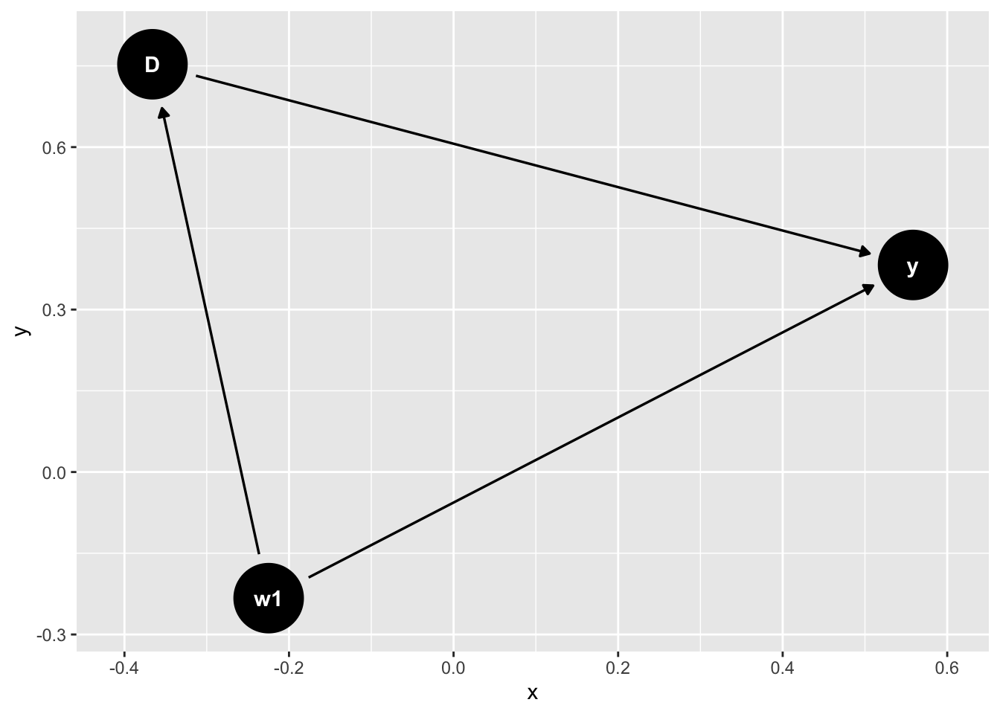
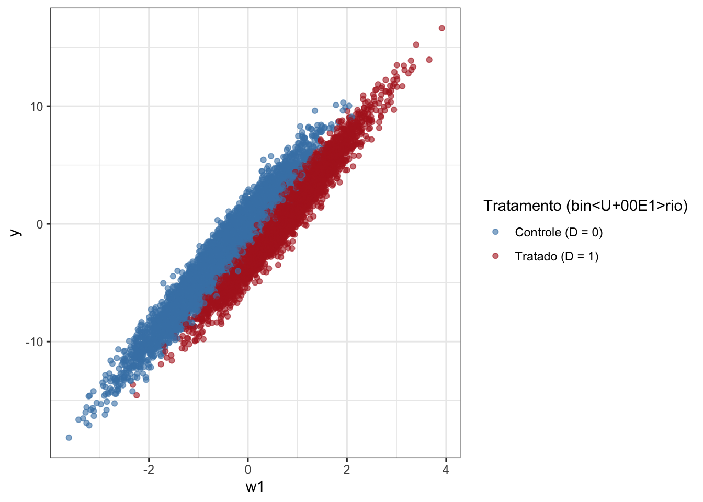
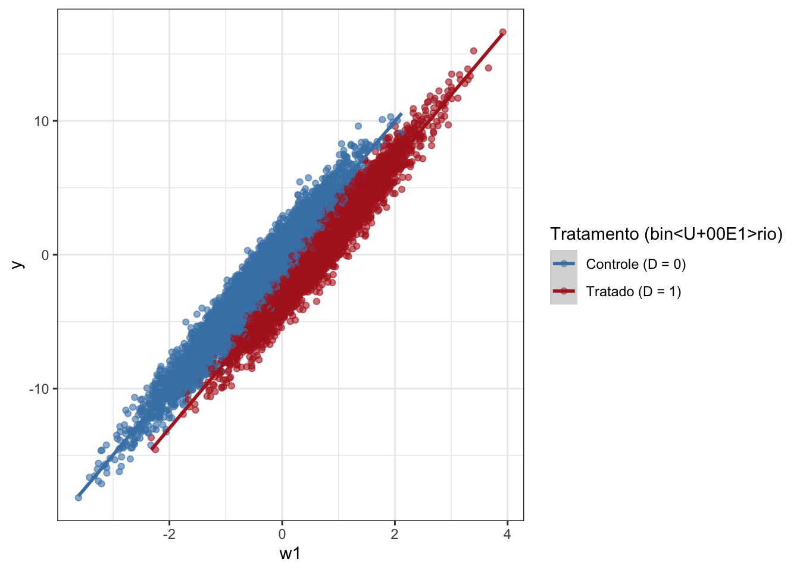
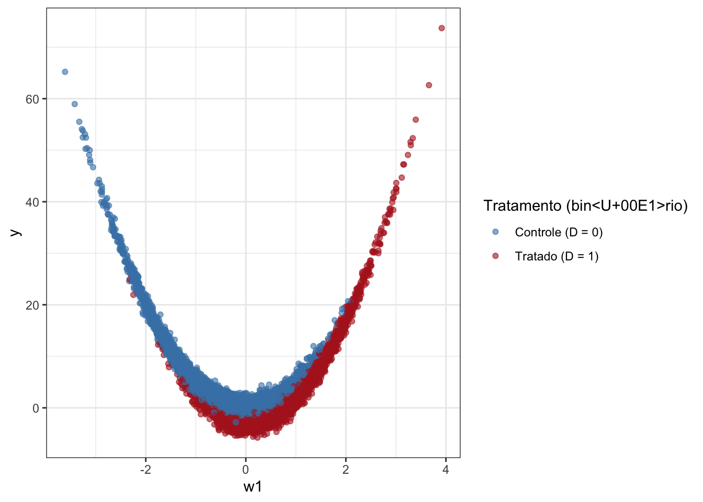
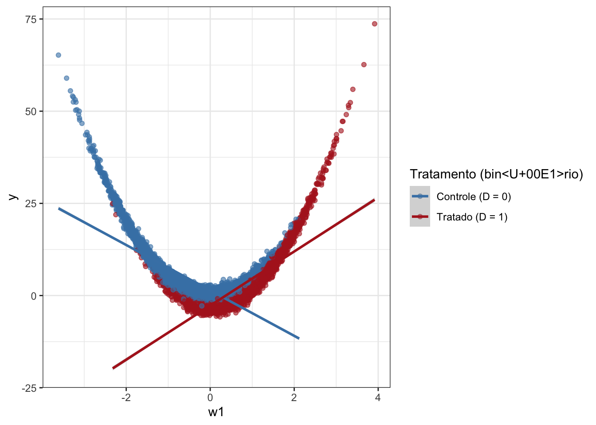
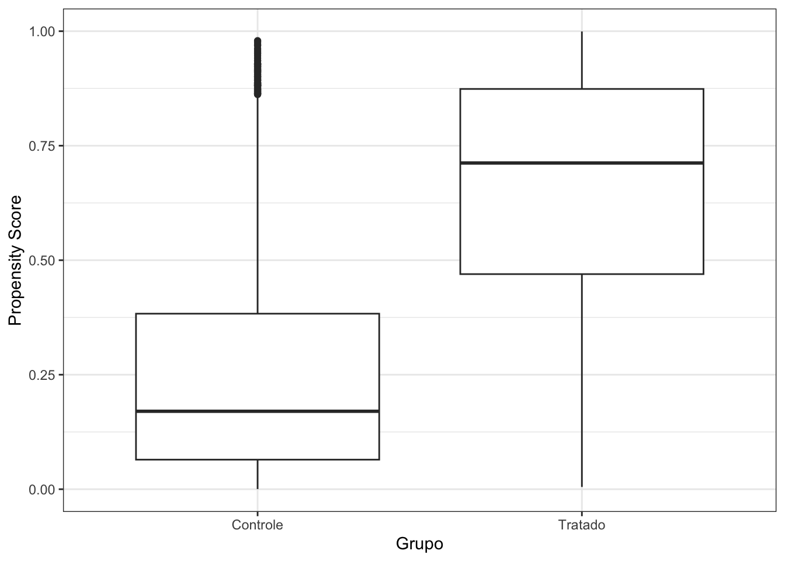
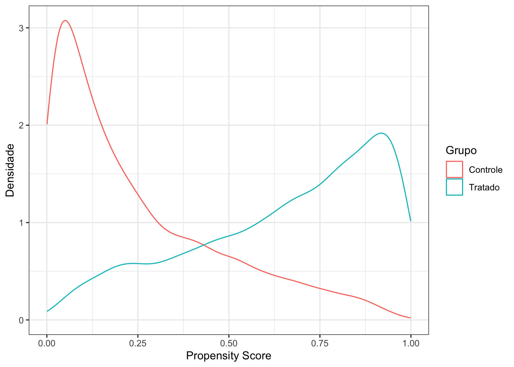
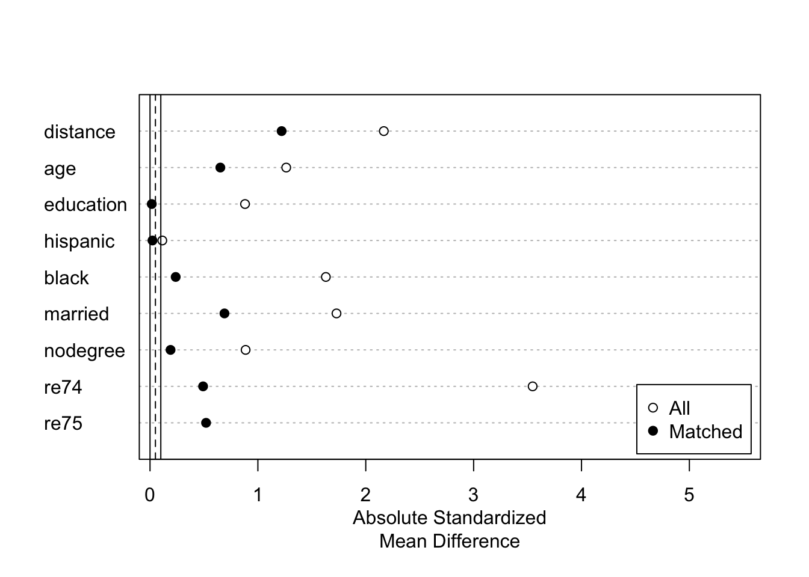
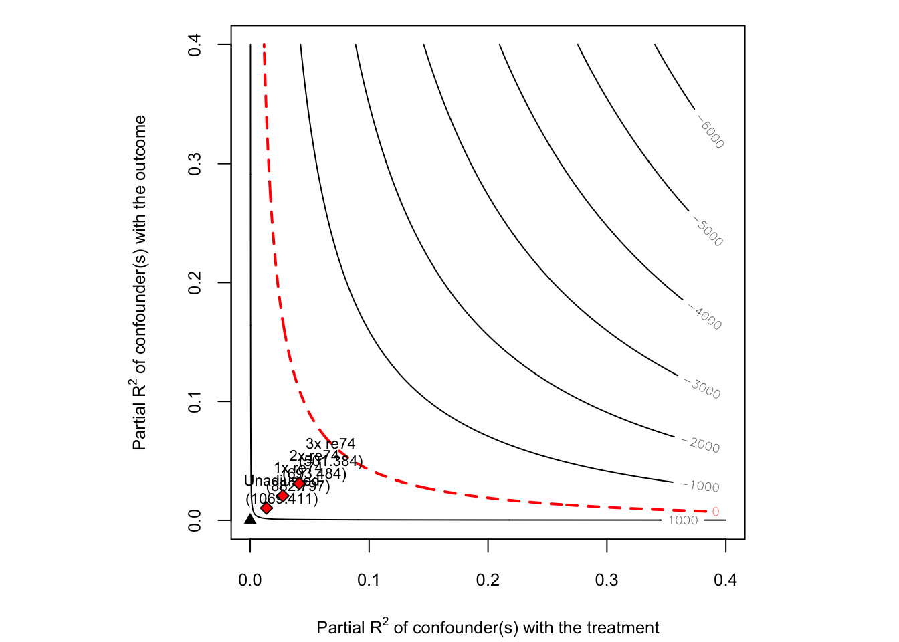

Capítulo 6 Propensity Score e Matching
6.1 Introdução
Quando não dispomos de um experimento aleatorizado, como podemos estimar efeitos causais? A estratégia de seleção em observáveis parte da seguinte ideia: se observamos todas as variáveis que afetam simultaneamente o tratamento e o resultado, podemos comparar unidades tratadas e não-tratadas que sejam “semelhantes” nessas variáveis. Neste capítulo, apresentamos três ferramentas para implementar essa ideia: o propensity score, o matching e a ponderação por probabilidade inversa (IPW).
6.2 Suposições de identificação
Antes de apresentar os métodos, é fundamental explicitar as suposições que garantem a identificação causal nesse contexto. Supondo um tratamento binário \(D\) e um vetor de covariáveis \(X\), precisamos de duas condições:
\((Y_i(1), Y_i(0)) \perp D_i|X_i\) (Independência Condicional, ou CIA)
\(0 < P(D_i=1|X_i) < 1\) (Suporte comum)
A primeira condição diz que, condicional às covariáveis, o tratamento é como se fosse aleatório — não há confundidores não-observados. A segunda garante que, para cada perfil de covariáveis, existe chance positiva de observar tanto tratados quanto controles.
Sob essas condições, podemos derivar a identificação do efeito causal. Usando independência condicional e a switching equation:
\[\begin{align} \mathbb{E}[Y_i(1)-Y_i(0)|X] & = \mathbb{E}[Y_i(1) - Y_i(0) | X, D=1] \\ & = \mathbb{E}[Y_i(1)| X, D=1] - \mathbb{E}[Y_i(0)| X,D=0] \\ & = \mathbb{E}[Y| X, D=1] - \mathbb{E}[Y| X, D=0] \end{align}\]
E o estimador do ATE pode ser representado (supondo suporte comum) como:
\[\widehat{\delta}_{ATE} = \sum_{x\in X}{(\mathbb{E}[Y| X=x, D=1] - \mathbb{E}[Y| X=x, D=0])P(X=x)}\]
Ou seja, computamos a média do efeito do tratamento condicional ponderado pela distribuição de \(X\).
Para identificar o ATE, precisamos supor independência condicional para ambos os resultados potenciais. Se porém isso for crível apenas para \(Y_i(0)\), podemos estimar o ATT. Basta lembrar que \(\mathbb{E}[Y_i|D_i=1] - \mathbb{E}[Y_i|D_i=0] = \mathbb{E}[Y_i(1) - Y_i(0)|D_i=1] + \mathbb{E}[Y_i(0)|D_i=1] - \mathbb{E}[Y_i(0)|D_i=0]\)
6.3 Propensity Score
O propensity score nada mais é que a probabilidade de uma unidade ser tratada, dadas as covariáveis, ou seja, \(Pr(D_i = 1| X_i)\).
A ideia chave para propensity score vem de um paper de Rosenbaum and Rubin (1983) em que eles mostram (Teorema 3 do artigo) que, se a condição de ignorabilidade forte for satisfeita (isto é, \(Y_i(1), Y_i(0) \perp D_i|X_i\)), então também é verdade que \(Y_i(1), Y_i(0) \perp D_i|\pi(X_i)\), em que \(\pi(X_i) = P(D_i = 1|X_i)\) é o propensity score verdadeiro. Isso é um resultado de redução de dimensionalidade: em vez de condicionar em todo o vetor \(X_i\) — que pode ter dezenas de variáveis — podemos condicionar em um único escalar \(\pi(X_i)\).
Por que a redução dimensional importa? Condicionar diretamente em \(X\) equivale a comparar tratados e controles dentro de cada combinação de covariáveis. Se temos 10 variáveis binárias, são \(2^{10} = 1024\) células; com variáveis contínuas, o número de combinações é efetivamente infinito. À medida que a dimensão de \(X\) cresce, muitas células ficam vazias ou com poucas observações — é a chamada maldição da dimensionalidade. O propensity score contorna esse problema ao colapsar toda a informação relevante sobre a seleção ao tratamento em um número entre 0 e 1.
Em princípio, poderíamos estimar o propensity score de forma não-paramétrica, calculando diretamente a fração de tratados em cada combinação de \(X\) (o Teorema 5 de Rosenbaum and Rubin (1983) mostra que esse estimador produz balanceamento amostral). Porém, isso sofre da mesma maldição da dimensionalidade: só funciona quando \(X\) é discreto e a amostra é grande o suficiente para que cada combinação tenha observações nos dois grupos. Na prática, precisamos impor um modelo paramétrico — tipicamente logit ou probit — para estimar \(\hat{\pi}(X)\), e esse modelo pode estar mal especificado.
É importante perceber que o propensity score não elimina o problema de especificação de modelo — ele o transfere do modelo de outcome (\(E[Y|X,D]\)) para o modelo de tratamento (\(P(D=1|X)\)). Especificar corretamente \(P(D=1|X)\) é, em princípio, tão difícil quanto especificar \(E[Y|X,D]\). A vantagem do propensity score está em outro lugar: o modelo de tratamento é diagnosticável. Se \(\hat{\pi}(X)\) está errado, o desbalanceamento residual nas covariáveis aparece nos diagnósticos de balanceamento — podemos verificar diretamente se \(X \perp D | \hat{\pi}(X)\). Já o modelo de outcome não pode ser testado dessa forma, pois nunca observamos ambos os resultados potenciais para a mesma unidade. Além disso, o propensity score separa o “desenho” do estudo (construir grupos comparáveis) da “análise” (estimar o efeito), o que reduz os graus de liberdade do pesquisador — de modo análogo a um experimentalista que desenha o experimento antes de olhar os resultados.
Para ilustrar a importância da redução dimensional e da diagnosticabilidade, vamos considerar um exemplo simulado em que ignorabilidade forte é satisfeita, mas um modelo mal-especificado do outcome gera estimativas viesadas — enquanto o propensity score consegue recuperar o efeito causal.
library(knitr)
library(tidyverse)
library(broom)
library(kableExtra)
library(ggdag)
library(MatchIt)
library(data.table)
library(here, quietly=TRUE)
library(marginaleffects)
O DAG acima ilustra bem qual a relação causal entre variáveis. Para estimar o ATE de \(D\) sobre \(Y\), precisamos fechar o backdoor de \(w_1\). A forma usual como fazemos isso é com regressão. O problema que estamos abordando aqui é quando a amostra é não-balanceada entre tratados e não-tratados. Vamos visualizar dois tipos de relações (uma linear e outra não-linear) entre a variável de controle \(w_1\) e a resposta \(Y\) para ilustrar o problema do desbalanceamento:
set.seed(202)
n <- 1e4
w1 <- rnorm(n) # único confundidor
tau <- 3 # efeito causal verdadeiro
# GERAMOS UM PROPENSITY SCORE NÃO‐LINEAR
p <- plogis(-0.5 + 2 * w1)
D <- rbinom(n, 1, p)
# GERAÇÃO DOS RESULTADOS POTENCIAIS linear (apenas função de w1, forte ignorabilidade):
y0 <- 5 * w1 + rnorm(n)
y1 <- y0 - tau # efeito constante
y <- ifelse(D == 1, y1, y0)
df <- data.frame(y=y, D=D, w1=w1)
df %>%
mutate(
D = factor(D, levels = c(0,1),
labels = c("Controle (D = 0)", "Tratado (D = 1)"))
) %>%
ggplot(aes(x = w1, y = y, colour = D)) +
geom_point(alpha = 0.6) +
scale_colour_manual(
name = "Tratamento (binário)",
values = c("Controle (D = 0)" = "steelblue",
"Tratado (D = 1)" = "firebrick")
) + theme_bw()
No primeiro gráfico, o efeito causal (ATE) do tratamento é \(-3\) e podemos ver nos dados que de fato em média a resposta é menor entre tratados que no controle. Além disso, vemos também que o efeito é basicamente linear.
Mas o ponto importante aqui é que existem duas regiões dos dados em que praticamente só temos unidades no controle (\(w_1 < -2\)) ou no tratamento (\(w_1 > 2\)). Isso significa que a regressão precisa extrapolar a estimativa da região em que ambos tratamento e controle estão presentes para uma região em que não estão. Como o efeito é constante para todas as regiões de \(w_1\), isso não causa problema e a regressão consegue recuperar o ATE sem viés. O gráfico abaixo ilustra o que a regressão está fazendo:
df %>%
mutate(
D = factor(D, levels = c(0,1),
labels = c("Controle (D = 0)", "Tratado (D = 1)"))
) %>%
ggplot(aes(x = w1, y = y, colour = D)) +
geom_point(alpha = 0.6) +
geom_smooth(method = "lm") +
scale_colour_manual(
name = "Tratamento (binário)",
values = c("Controle (D = 0)" = "steelblue",
"Tratado (D = 1)" = "firebrick")
) + theme_bw()
O gráfico mostra duas retas de regressão ajustadas, uma para o controle (em azul) e outra para o tratamento (em vermelho). Efetivamente, temos de estender as duas retas para as regiões em que não há dados, por meio de extrapolação, que no caso significa continuar a linha reta. Assim, temos uma estimativa dos resultados potenciais nessas regiões e podemos computar o efeito causal médio. Como a extrapolação é razoável, não há problema.
Vejamos agora uma situação em que o efeito de \(w_1\) é não linear sobre \(Y\).
set.seed(202)
n <- 1e4
w1 <- rnorm(n) # único confundidor
tau <- 3 # efeito causal verdadeiro
# GERAMOS UM PROPENSITY SCORE NÃO‐LINEAR
p <- plogis(-0.5 + 2 * w1)
D <- rbinom(n, 1, p)
# GERAÇÃO DOS RESULTADOS POTENCIAIS não-linear (apenas função de w1, forte ignorabilidade):
y0 <- 5 * w1^2 + rnorm(n)
y1 <- y0 - tau # efeito constante
y <- ifelse(D == 1, y1, y0)
df <- data.frame(y=y, D=D, w1=w1)
df %>%
mutate(
D = factor(D, levels = c(0,1),
labels = c("Controle (D = 0)", "Tratado (D = 1)"))
) %>%
ggplot(aes(x = w1, y = y, colour = D)) +
geom_point(alpha = 0.6) +
scale_colour_manual(
name = "Tratamento (binário)",
values = c("Controle (D = 0)" = "steelblue",
"Tratado (D = 1)" = "firebrick")
) + theme_bw()
Aqui, vemos que o efeito é não-linear de \(w_1\) sobre \(Y\) e também o desbalanceamento na amostra. Vamos ver o mesmo gráfico com as duas retas ajustadas para entender como a extrapolação pode produzir estimativas distorcidas nesse caso.
df %>%
mutate(
D = factor(D, levels = c(0,1),
labels = c("Controle (D = 0)", "Tratado (D = 1)"))
) %>%
ggplot(aes(x = w1, y = y, colour = D)) +
geom_point(alpha = 0.6) +
geom_smooth(method = "lm") +
scale_colour_manual(
name = "Tratamento (binário)",
values = c("Controle (D = 0)" = "steelblue",
"Tratado (D = 1)" = "firebrick")
) + theme_bw()
Um problema óbvio do modelo é que o efeito de w1 é quadrático, então podemos tentar corrigir isso incluindo um termo quadrático.
##
## Call:
## lm(formula = y ~ D + w1 + I(w1^2), data = df)
##
## Residuals:
## Min 1Q Median 3Q Max
## -3.5311 -0.6586 -0.0043 0.6679 3.8928
##
## Coefficients:
## Estimate Std. Error t value Pr(>|t|)
## (Intercept) -0.012244 0.015950 -0.768 0.443
## D -2.996063 0.025632 -116.890 <2e-16 ***
## w1 -0.013777 0.012639 -1.090 0.276
## I(w1^2) 5.005598 0.007154 699.737 <2e-16 ***
## ---
## Signif. codes: 0 '***' 0.001 '**' 0.01 '*' 0.05 '.' 0.1 ' ' 1
##
## Residual standard error: 0.9976 on 9996 degrees of freedom
## Multiple R-squared: 0.9806, Adjusted R-squared: 0.9806
## F-statistic: 1.688e+05 on 3 and 9996 DF, p-value: < 2.2e-16O efeito causal é negativo, o que é bom, pois está na direção certa, mas ainda está distante do efeito verdadeiro. Isso ilustra como a estimativa é dependente do modelo — um problema sério, pois na prática não sabemos qual é a especificação correta.
Em resumo, quando há desbalanceamento, a estimativa passa a depender fortemente da especificação do modelo, o que é problemático.
Será que existe uma abordagem que nos permita recuperar o efeito causal sem precisar acertar a forma funcional do modelo de outcome? Vamos testar com o propensity score:
reg_aux<- glm(D ~ w1, family = binomial, data=df)
p_score <- reg_aux$fitted.values
reg1 <- lm(y ~ D + p_score)
summary(reg1)##
## Call:
## lm(formula = y ~ D + p_score)
##
## Residuals:
## Min 1Q Median 3Q Max
## -7.921 -4.258 -2.462 1.647 70.708
##
## Coefficients:
## Estimate Std. Error t value Pr(>|t|)
## (Intercept) 4.2799 0.1179 36.307 < 2e-16 ***
## D -2.9562 0.1858 -15.910 < 2e-16 ***
## p_score 1.6681 0.2917 5.718 1.11e-08 ***
## ---
## Signif. codes: 0 '***' 0.001 '**' 0.01 '*' 0.05 '.' 0.1 ' ' 1
##
## Residual standard error: 7.069 on 9997 degrees of freedom
## Multiple R-squared: 0.02781, Adjusted R-squared: 0.02761
## F-statistic: 143 on 2 and 9997 DF, p-value: < 2.2e-16w <- ifelse(D == 1, 1/p_score, 1/(1-p_score)) # pesos IPTW
reg2 <- lm(y ~ D , weights = w)
summary(reg2)##
## Call:
## lm(formula = y ~ D, weights = w)
##
## Weighted Residuals:
## Min 1Q Median 3Q Max
## -15.95 -5.52 -2.87 2.04 324.89
##
## Coefficients:
## Estimate Std. Error t value Pr(>|t|)
## (Intercept) 4.67183 0.09553 48.90 <2e-16 ***
## D -2.57016 0.13452 -19.11 <2e-16 ***
## ---
## Signif. codes: 0 '***' 0.001 '**' 0.01 '*' 0.05 '.' 0.1 ' ' 1
##
## Residual standard error: 9.499 on 9998 degrees of freedom
## Multiple R-squared: 0.03523, Adjusted R-squared: 0.03513
## F-statistic: 365.1 on 1 and 9998 DF, p-value: < 2.2e-16Conseguimos recuperar o ATE sem problemas. Não precisei especificar corretamente a forma funcional de \(w_1\) no modelo de outcome, pois o propensity score absorveu a relação entre \(w_1\) e o tratamento. Porém, como discutido acima, o problema de especificação não desapareceu — ele foi transferido: precisei especificar corretamente o modelo do propensity score (neste caso, um logit linear em \(w_1\), que de fato é o modelo correto do DGP). Se o modelo do PS estivesse errado, o balanceamento falharia — e isso seria detectável nos diagnósticos.
6.4 Ponderação por Probabilidade Inversa (IPW)
O código acima já usa uma das aplicações mais importantes do propensity score: a ponderação por probabilidade inversa (IPW, ou IPTW — Inverse Probability of Treatment Weighting). A ideia é reponderar as observações de modo que, na amostra repesada, o tratamento seja independente das covariáveis — simulando o que um experimento aleatorizado produziria.
O estimador IPW do ATE é:
\[\hat{\tau}_{IPW} = \frac{1}{N}\sum_{i=1}^{N} \left[\frac{D_i Y_i}{\hat{\pi}(X_i)} - \frac{(1-D_i) Y_i}{1-\hat{\pi}(X_i)}\right]\]
A intuição é simples: unidades tratadas com baixa probabilidade de tratamento (baixo \(\hat{\pi}\)) são “surpreendentes” — representam tipos que normalmente não seriam tratados — e por isso recebem peso maior (\(1/\hat{\pi}\) é grande). O oposto vale para os controles. Essa repesagem reconstrói a distribuição de covariáveis que teríamos sob aleatorização.
Para estimar o ATT em vez do ATE, usamos pesos diferentes: \(w_i = 1\) para os tratados e \(w_i = \hat{\pi}(X_i)/(1-\hat{\pi}(X_i))\) para os controles.
Uma limitação prática do IPW é que, quando o propensity score se aproxima de 0 ou 1 (falta de overlap), os pesos explodem e as estimativas ficam instáveis. Por isso é importante examinar a distribuição do propensity score antes de aplicar IPW, e considerar trimming (descartar observações com scores extremos) ou stabilized weights.
É útil ver como o pscore está distribuído entre os grupos de tratamento e controle:
df <- df %>%
mutate(pscore = p_score,
grupo = factor(D, levels = c(0,1),
labels = c("Controle", "Tratado")))
df %>%
ggplot(aes(x = grupo, y = pscore)) + geom_boxplot() +
labs(x = "Grupo", y = "Propensity Score") + theme_bw()
df %>%
ggplot(aes(x = pscore, colour = grupo)) +
geom_density() +
labs(x = "Propensity Score", y = "Densidade", colour = "Grupo") + theme_bw()
Há desbalanceamento e falta de overlap ou suporte comum, o que leva à extrapolação.
6.5 Matching
6.5.1 Intuição
A ideia do matching pode ser ilustrada se notarmos o seguinte. A projeção da reta vermelha para pontos abaixo de \(-2\) é de um \(y\) médio muito baixo, enquanto que o \(y\) médio é muito alto para o controle. O oposto é verificado para a região em que \(w_1 > 2\). Portanto, se restringirmos a análise para uma região onde há overlap entre tratados e controles, a necessidade de extrapolação diminui. O que acontece com a estimativa? Vamos comparar a regressão com toda a amostra e com subconjuntos cada vez mais restritos:
| term | estimate | std.error | statistic | p.value |
|---|---|---|---|---|
| (Intercept) | 4.27 | 0.104 | 41.00 | 0 |
| D | -1.30 | 0.180 | -7.18 | 0 |
| w1 | -0.80 | 0.089 | -8.94 | 0 |
reg_sub <- lm(y ~ D + w1, data = subset(df, w1 > -2 & w1 < 2))
reg_sub %>%
tidy() %>%
kable(digits = c(0, 2, 3, 2, 3))| term | estimate | std.error | statistic | p.value |
|---|---|---|---|---|
| (Intercept) | 3.46 | 0.069 | 50.52 | 0 |
| D | -1.99 | 0.119 | -16.70 | 0 |
| w1 | -0.35 | 0.066 | -5.32 | 0 |
reg_sub <- lm(y ~ D + w1, data = subset(df, w1 > -1.5 & w1 < 1.5))
reg_sub %>%
tidy() %>%
kable(digits = c(0, 2, 3, 2, 3))| term | estimate | std.error | statistic | p.value |
|---|---|---|---|---|
| (Intercept) | 2.57 | 0.047 | 55.02 | 0 |
| D | -2.48 | 0.080 | -30.78 | 0 |
| w1 | -0.21 | 0.053 | -3.88 | 0 |
reg_sub <- lm(y ~ D + w1, data = subset(df, w1 > -1 & w1 < 1))
reg_sub %>%
tidy() %>%
kable(digits = c(0, 2, 3, 2, 3))| term | estimate | std.error | statistic | p.value |
|---|---|---|---|---|
| (Intercept) | 1.41 | 0.029 | 49.57 | 0 |
| D | -2.77 | 0.048 | -57.27 | 0 |
| w1 | -0.17 | 0.043 | -3.93 | 0 |
À medida que restringimos a amostra para regiões com mais overlap, a estimativa se aproxima do efeito causal verdadeiro (\(-3\)). Isso confirma que o problema estava na extrapolação, não na regressão em si.
A ideia do matching é um pouco diferente do que fizemos acima, pois estamos excluindo as observações que estão no tratamento e que não possuem controle correspondente, e do controle que não possuem tratamento correspondente. Não há erro em excluir os dois tipos de observações, mas sempre temos de nos perguntar qual é o estimando de interesse. Se faço esse procedimento, o meu estimando não é nenhum dos usuais ATT ou ATE.
No matching, nós nos concentramos em estimar o ATT, de forma que procuramos achar observações no controle que são próximas das tratadas, ou seja, excluímos os controles que não são um match para as observações tratadas.
6.5.2 Matching como imputação
A técnica de matching trata os resultados potenciais como missing data. Assim, se pudermos supor CIA com credibilidade, pelo menos com relação a \(Y_i(0)\), então podemos imputar esses resultados potenciais e estimar o ATT. A ideia é achar uma unidade o mais similar possível à unidade tratada para servir como contrafactual. Assim, poderíamos computar “diretamente” o ATT, já que teríamos os \(Y_i(1)\) e \(Y_i(0)\) para cada unidade, este último imputado.
Há dois grandes grupos de métodos de matching: exato e aproximado. Note que o matching, por construção, é um procedimento assimétrico: pegamos cada unidade tratada e buscamos o controle mais parecido. Todos os tratados são usados, mas controles sem match são descartados. Esse procedimento pondera implicitamente pela distribuição de \(X\) nos tratados — e portanto estima o ATT, não o ATE. Na população com \(n \to \infty\) e propensity score verdadeiro, tanto o ATE quanto o ATT são identificados (pois o suporte comum é satisfeito para todos os valores de \(X\)). Mas o estimador de matching como implementado na prática — buscar controle para cada tratado — estima o ATT. Quem quiser o ATE deve usar IPW, AIPW ou full matching.
6.5.3 Matching exato
Uma vez que temos as suposições de identificação, podemos discutir os métodos para realizar o matching. O mais simples deles é o matching exato. Nesse método, nós achamos uma unidade (ou mais) que tenham um valor exatamente igual nas covariáveis (ou no propensity score), e imputamos o controle.
6.5.4 Matching aproximado
Para aproximar o matching, utilizamos alguma noção de distância entre variáveis. Para mais de uma variável, podemos utilizar algumas métricas de distância. A primeira é a distância euclidiana (supondo \(K\) variáveis).
\[ \lVert X_i - X_j \rVert = \sqrt{(X_i - X_j)'(X_i - X_j)} = \sqrt{\sum_{k=1}^K(X_{ki} - X_{kj})^2} \]
A distância euclidiana utiliza a escala das proprias variaveis, então é comum usar a distância euclidiana normalizada:
\[ \lVert X_i - X_j \rVert = \sqrt{\sum_{k=1}^K\frac{(X_{ki} - X_{kj})^2}{\hat{\sigma}_k^2}} \]
Outra métrica é a distância de Mahalanobis, que basicamente divide pela covariância (amostral) entre as variáveis em vez da variância. Na prática, a distância euclidiana normalizada é a mais comum.
6.5.5 Estimando
Uma vez que fizemos o matching entre unidades, qual nosso estimador? Lembrando que o estimando é o ATT. Denotando por \(N_T = \sum_{i=1}^N D_i\) o número de unidades tratadas e por \(j(i)\) o índice da unidade de controle que é o match da unidade tratada \(i\), temos: \[ \widehat{\delta}_{ATT} = \dfrac{1}{N_T} \sum_{D_i=1} (Y_i - Y_{j(i)}) \]
##
## Call:
## matchit(formula = D ~ w1, data = df, method = NULL, distance = "glm")
##
## Summary of Balance for All Data:
## Means Treated Means Control Std. Mean Diff. Var. Ratio eCDF Mean
## distance 0.6549 0.2493 1.5714 1.2566 0.3685
## w1 0.7004 -0.5362 1.6030 0.9132 0.3685
## eCDF Max
## distance 0.5761
## w1 0.5761
##
## Sample Sizes:
## Control Treated
## All 5806 4194
## Matched 5806 4194
## Unmatched 0 0
## Discarded 0 06.6 Aplicação: o dataset LaLonde
O dataset LaLonde é um dos exemplos mais influentes na literatura de inferência causal. O pesquisador Lalonde (1986) investigou se métodos econométricos tradicionais eram capazes de recuperar o efeito causal de um programa experimental — o National Supported Work Demonstration (NSW), que oferecia emprego temporário para dar experiência de trabalho. Ele coletou dados de um survey representativo de trabalhadores americanos (PSID) e usou esses trabalhadores como grupo controle, empregando diversos métodos econométricos para estimar o efeito causal. Os resultados foram desastrosos: altamente variáveis dependendo do modelo e subconjunto de dados, frequentemente com sinal errado.
Vamos replicar esse exercício usando matching e propensity score. A variável resposta é re78 (renda real em 1978), o tratamento é treat, e as demais variáveis são covariáveis.
lalonde <- fread(here("Dados", "lalonde_nsw.csv"))
psid_data <- fread(here("Dados", "lalonde_psid.csv"))
# Combinamos tratados do NSW com controles do PSID
nsw_treat <- lalonde[lalonde$treat == 1, ]
psid_control <- psid_data[psid_data$treat == 0, ]
dw_data <- rbind(nsw_treat, psid_control)6.6.1 Diferença bruta
A diferença simples na média entre tratados e controles não é causal, pois os grupos diferem sistematicamente nas covariáveis. Note o resultado — a diferença bruta é negativa, sugerindo que o programa reduziu a renda dos participantes. Mas sabemos, pela estimativa experimental, que o efeito verdadeiro é positivo (aproximadamente $1.794). O viés de seleção inverte completamente o sinal. Será que matching e propensity score conseguem corrigir isso?
dw_data %>%
group_by(treat) %>%
summarize(`Renda média (1978)` = mean(re78)) %>%
kableExtra::kable(digits = 0, col.names = c("Tratamento", "Renda média (1978)"))| Tratamento | Renda média (1978) |
|---|---|
| 0 | 21554 |
| 1 | 6349 |
6.6.2 Balanceamento pré-matching
Antes de fazer matching, examinamos o desbalanceamento nas covariáveis. O matchit com method = NULL calcula o propensity score e as medidas de balanceamento sem realizar matching:
m.out0 <- matchit(treat ~ age + education + hispanic + black + married + nodegree + re74 + re75,
data = dw_data,
method = NULL,
distance = "glm")## Warning: glm.fit: probabilidades ajustadas numericamente 0 ou 1 ocorreu##
## Call:
## matchit(formula = treat ~ age + education + hispanic + black +
## married + nodegree + re74 + re75, data = dw_data, method = NULL,
## distance = "glm")
##
## Summary of Balance for All Data:
## Means Treated Means Control Std. Mean Diff. Var. Ratio eCDF Mean
## distance 0.6364 0.0270 2.1674 8.0268 0.4816
## age 25.8162 34.8506 -1.2627 0.4696 0.2317
## education 10.3459 12.1169 -0.8808 0.4255 0.1091
## hispanic 0.0595 0.0325 0.1139 . 0.0269
## black 0.8432 0.2506 1.6301 . 0.5926
## married 0.1892 0.8663 -1.7287 . 0.6771
## nodegree 0.7081 0.3052 0.8862 . 0.4029
## re74 2095.5737 19428.7458 -3.5471 0.1329 0.4684
## re75 1532.0553 19063.3377 -5.4458 0.0561 0.4695
## eCDF Max
## distance 0.8817
## age 0.3771
## education 0.4029
## hispanic 0.0269
## black 0.5926
## married 0.6771
## nodegree 0.4029
## re74 0.7292
## re75 0.7736
##
## Sample Sizes:
## Control Treated
## All 2490 185
## Matched 2490 185
## Unmatched 0 0
## Discarded 0 0O desbalanceamento é severo, especialmente em black, re74 e re75 — exatamente as variáveis que Lalonde (1986) identificou como problemáticas. Vamos agora aplicar matching para tentar corrigir isso.
6.6.3 Nearest-neighbor matching
Começamos com o matching por vizinho mais próximo (nearest-neighbor) no propensity score:
m.out1 <- matchit(treat ~ age + education + hispanic + black + married + nodegree + re74 + re75,
data = dw_data,
method = "nearest",
distance = "glm")## Warning: glm.fit: probabilidades ajustadas numericamente 0 ou 1 ocorreu##
## Call:
## matchit(formula = treat ~ age + education + hispanic + black +
## married + nodegree + re74 + re75, data = dw_data, method = "nearest",
## distance = "glm")
##
## Summary of Balance for All Data:
## Means Treated Means Control Std. Mean Diff. Var. Ratio eCDF Mean
## distance 0.6364 0.0270 2.1674 8.0268 0.4816
## age 25.8162 34.8506 -1.2627 0.4696 0.2317
## education 10.3459 12.1169 -0.8808 0.4255 0.1091
## hispanic 0.0595 0.0325 0.1139 . 0.0269
## black 0.8432 0.2506 1.6301 . 0.5926
## married 0.1892 0.8663 -1.7287 . 0.6771
## nodegree 0.7081 0.3052 0.8862 . 0.4029
## re74 2095.5737 19428.7458 -3.5471 0.1329 0.4684
## re75 1532.0553 19063.3377 -5.4458 0.0561 0.4695
## eCDF Max
## distance 0.8817
## age 0.3771
## education 0.4029
## hispanic 0.0269
## black 0.5926
## married 0.6771
## nodegree 0.4029
## re74 0.7292
## re75 0.7736
##
## Summary of Balance for Matched Data:
## Means Treated Means Control Std. Mean Diff. Var. Ratio eCDF Mean
## distance 0.6364 0.2934 1.2200 1.4702 0.0432
## age 25.8162 30.4811 -0.6520 0.4149 0.1196
## education 10.3459 10.3784 -0.0161 0.4745 0.0407
## hispanic 0.0595 0.0649 -0.0229 . 0.0054
## black 0.8432 0.7568 0.2379 . 0.0865
## married 0.1892 0.4595 -0.6901 . 0.2703
## nodegree 0.7081 0.6216 0.1902 . 0.0865
## re74 2095.5737 4499.8428 -0.4920 1.1020 0.0722
## re75 1532.0553 3204.3968 -0.5195 0.7389 0.0605
## eCDF Max Std. Pair Dist.
## distance 0.5568 1.2200
## age 0.1784 1.3561
## education 0.0919 1.3281
## hispanic 0.0054 0.5257
## black 0.0865 0.9515
## married 0.2703 1.0213
## nodegree 0.0865 0.9036
## re74 0.4162 0.8667
## re75 0.2973 0.9044
##
## Sample Sizes:
## Control Treated
## All 2490 185
## Matched 185 185
## Unmatched 2305 0
## Discarded 0 0
O gráfico de love plot mostra as diferenças padronizadas antes e depois do matching. Idealmente, todas as covariáveis deveriam ter diferenças próximas de zero após o matching.
6.6.4 Full matching
Uma alternativa é o full matching, que usa todas as observações (sem descarte) e cria subclasses de tamanho variável:
m.out2 <- matchit(treat ~ age + education + hispanic + black + married + nodegree + re74 + re75,
data = dw_data,
method = "full",
distance = "glm")## Warning: glm.fit: probabilidades ajustadas numericamente 0 ou 1 ocorreu##
## Call:
## matchit(formula = treat ~ age + education + hispanic + black +
## married + nodegree + re74 + re75, data = dw_data, method = "full",
## distance = "glm")
##
## Summary of Balance for All Data:
## Means Treated Means Control Std. Mean Diff. Var. Ratio eCDF Mean
## distance 0.6364 0.0270 2.1674 8.0268 0.4816
## age 25.8162 34.8506 -1.2627 0.4696 0.2317
## education 10.3459 12.1169 -0.8808 0.4255 0.1091
## hispanic 0.0595 0.0325 0.1139 . 0.0269
## black 0.8432 0.2506 1.6301 . 0.5926
## married 0.1892 0.8663 -1.7287 . 0.6771
## nodegree 0.7081 0.3052 0.8862 . 0.4029
## re74 2095.5737 19428.7458 -3.5471 0.1329 0.4684
## re75 1532.0553 19063.3377 -5.4458 0.0561 0.4695
## eCDF Max
## distance 0.8817
## age 0.3771
## education 0.4029
## hispanic 0.0269
## black 0.5926
## married 0.6771
## nodegree 0.4029
## re74 0.7292
## re75 0.7736
##
## Summary of Balance for Matched Data:
## Means Treated Means Control Std. Mean Diff. Var. Ratio eCDF Mean
## distance 0.6364 0.6338 0.0091 0.9750 0.0034
## age 25.8162 23.5784 0.3128 0.9777 0.0779
## education 10.3459 10.1846 0.0802 0.6511 0.0258
## hispanic 0.0595 0.0722 -0.0537 . 0.0127
## black 0.8432 0.8485 -0.0144 . 0.0052
## married 0.1892 0.1337 0.1417 . 0.0555
## nodegree 0.7081 0.7121 -0.0087 . 0.0040
## re74 2095.5737 3369.8141 -0.2608 1.4024 0.0443
## re75 1532.0553 2341.0260 -0.2513 0.7348 0.0299
## eCDF Max Std. Pair Dist.
## distance 0.1243 0.0059
## age 0.2923 1.2717
## education 0.1181 1.3984
## hispanic 0.0127 0.1697
## black 0.0052 1.9737
## married 0.0555 0.3408
## nodegree 0.0040 1.3976
## re74 0.5207 2.2676
## re75 0.2243 1.9077
##
## Sample Sizes:
## Control Treated
## All 2490. 185
## Matched (ESS) 23.03 185
## Matched 2490. 185
## Unmatched 0. 0
## Discarded 0. 06.6.5 Estimação do ATT
Com o matching feito, estimamos o ATT usando regressão com interações nas covariáveis (para ajuste residual) e erros-padrão clusterizados por subclasse:
# Com nearest-neighbor
m.data1 <- match.data(m.out1)
fit1 <- lm(re78 ~ treat * (age + education + hispanic + black + married +
nodegree + re74 + re75),
data = m.data1, weights = weights)
avg_comparisons(fit1, variables = "treat",
vcov = ~subclass, newdata = subset(treat == 1))##
## Estimate Std. Error z Pr(>|z|) S 2.5 % 97.5 %
## 1905 872 2.18 0.029 5.1 195 3614
##
## Term: treat
## Type: response
## Comparison: 1 - 0# Com full matching
m.data2 <- match.data(m.out2)
fit2 <- lm(re78 ~ treat * (age + education + hispanic + black + married +
nodegree + re74 + re75),
data = m.data2, weights = weights)
avg_comparisons(fit2, variables = "treat",
vcov = ~subclass, newdata = subset(treat == 1))##
## Estimate Std. Error z Pr(>|z|) S 2.5 % 97.5 %
## 2629 612 4.29 <0.001 15.8 1429 3829
##
## Term: treat
## Type: response
## Comparison: 1 - 0A estimativa experimental do NSW é de aproximadamente $1.794. Compare as estimativas do nearest-neighbor e do full matching com essa referência. Qual método chegou mais perto? Por quê? Note que nenhuma das estimativas é exatamente igual ao benchmark — isso ilustra que matching com dados observacionais é uma aproximação, não uma garantia.
6.7 Recomendações Práticas sobre Matching
Rotina ou algoritmo:
Defina o que é proximidade: alguma distância de medida para determinar se um caso é um bom match e quais variáveis utilizar. Em geral, distância euclidiana.
Implemente o método do match.
Avalie a qualidade do método, por meio do balanceamento antes e depois do match. Se necessário, altere o passo 1 ou 2 e itere.
Faça a inferência sobre o efeito causal do tratamento sobre a resposta, dado o matching feito em 3.
6.7.1 Avaliação do matching feito
É melhor usar matching exato ou aproximado do que propensity score matching (cf. King and Nielsen 2019). O argumento é o seguinte: o propensity score é um escalar que resume todas as covariáveis. Duas unidades podem ter o mesmo \(\hat{\pi}(X)\) mas perfis de covariáveis completamente diferentes — por exemplo, um jovem com alta educação e um idoso com baixa educação podem ter a mesma probabilidade estimada de tratamento. Quando se faz matching por propensity score, é possível que o balanceamento nas covariáveis individuais piore à medida que os pares ficam mais próximos no score — o que King and Nielsen (2019) chamam de propensity score paradox. Isso aumenta a dependência do modelo de outcome, exatamente o que matching deveria evitar.
É importante notar que esse problema é de amostra finita: na população, o teorema de Rosenbaum-Rubin garante que condicionar no propensity score verdadeiro \(\pi(X)\) produz balanceamento perfeito em todas as covariáveis (pois \(D \perp X | \pi(X)\)). Com infinitas observações para cada valor do score, a média sobre todas as unidades com \(\pi(X) = c\) produz balanceamento exato. O paradoxo surge porque, na amostra, o score é estimado (não verdadeiro), o número de unidades com score similar é pequeno, e o matching seleciona um controle em vez de promediar sobre todos.
Métodos que trabalham diretamente no espaço das covariáveis — como CEM, Mahalanobis, ou entropy balancing — monitoram diretamente o balanceamento em vez de delegá-lo a um escalar estimado. Note que a crítica se aplica ao propensity score como métrica de distância para matching, não a outros usos: IPW (ponderação), subclassificação e estimadores duplamente robustos (AIPW) continuam válidos.
Não devemos fazer teste de hipótese para checar que o balanceamento após matching é melhor do que antes (amostra menor reduz o poder do teste de detectar desbalanceamento. Além disso, não há superpopulação alvo da inferência, pois balanceamento é uma propriedade de uma amostra em particular) (cf. Austin 2009).
Além de comparar médias, é recomendado comparar variâncias ou desvios-padrão (Austin 2009). Por exemplo, razão de variâncias.
Jamais use a variável resposta para fazer o matching.
Matching com reposição gera dificuldades para calcular o erro padrão, já que a mesma unidade de controle pode servir de match para múltiplos tratados, criando dependência entre as observações. Abadie e Imbens (2006) mostram que o bootstrap ingênuo é inconsistente para o erro padrão do estimador de nearest-neighbor matching — ou seja, não converge para o valor correto mesmo com \(n \to \infty\). O pacote
MatchItem R lida com isso ao recomendar o uso de erros-padrão clusterizados por subclasse (vcov = ~subclass) na análise pós-matching.
6.8 Métodos modernos de matching
6.8.1 Coarsened Exact Matching (CEM)
O Coarsened Exact Matching (CEM, Iacus, King, and Porro 2012) é um método que busca combinar a simplicidade do matching exato com a flexibilidade do matching aproximado. A ideia é “engrossar” (coarsen) temporariamente as covariáveis — por exemplo, agrupar idades em faixas etárias (18–25, 26–35, etc.) — e então realizar matching exato nas versões engrossadas. As observações que não encontram match exato nas covariáveis engrossadas são descartadas. Após o matching, a análise é feita com os valores originais (não engrossados) das covariáveis.
A vantagem principal do CEM é que ele garante um nível máximo de desbalanceamento ex ante: o pesquisador escolhe o grau de engrossamento e, portanto, controla diretamente o trade-off entre qualidade do match e tamanho da amostra resultante. Além disso, o CEM satisfaz uma propriedade chamada monotonic imbalance bounding: engrossar menos (faixas mais estreitas) nunca piora o balanceamento.
m.cem <- matchit(treat ~ age + education + hispanic + black + married + nodegree + re74 + re75,
data = dw_data, method = "cem")
summary(m.cem)##
## Call:
## matchit(formula = treat ~ age + education + hispanic + black +
## married + nodegree + re74 + re75, data = dw_data, method = "cem")
##
## Summary of Balance for All Data:
## Means Treated Means Control Std. Mean Diff. Var. Ratio eCDF Mean
## age 25.8162 34.8506 -1.2627 0.4696 0.2317
## education 10.3459 12.1169 -0.8808 0.4255 0.1091
## hispanic 0.0595 0.0325 0.1139 . 0.0269
## black 0.8432 0.2506 1.6301 . 0.5926
## married 0.1892 0.8663 -1.7287 . 0.6771
## nodegree 0.7081 0.3052 0.8862 . 0.4029
## re74 2095.5737 19428.7458 -3.5471 0.1329 0.4684
## re75 1532.0553 19063.3377 -5.4458 0.0561 0.4695
## eCDF Max
## age 0.3771
## education 0.4029
## hispanic 0.0269
## black 0.5926
## married 0.6771
## nodegree 0.4029
## re74 0.7292
## re75 0.7736
##
## Summary of Balance for Matched Data:
## Means Treated Means Control Std. Mean Diff. Var. Ratio eCDF Mean
## age 24.9569 24.9639 -0.0010 1.0568 0.0082
## education 10.5259 10.5057 0.0100 1.0467 0.0027
## hispanic 0.0086 0.0086 0.0000 . 0.0000
## black 0.8966 0.8966 -0.0000 . 0.0000
## married 0.2500 0.2500 -0.0000 . 0.0000
## nodegree 0.6724 0.6724 -0.0000 . 0.0000
## re74 1852.5830 5084.9418 -0.6615 0.9346 0.0911
## re75 1314.5073 4929.6785 -1.1230 0.4560 0.1246
## eCDF Max Std. Pair Dist.
## age 0.0991 0.1257
## education 0.0187 0.1059
## hispanic 0.0000 0.0000
## black 0.0000 0.0000
## married 0.0000 0.0000
## nodegree 0.0000 0.0000
## re74 0.5774 0.7826
## re75 0.5595 1.3340
##
## Sample Sizes:
## Control Treated
## All 2490. 185
## Matched (ESS) 50.79 116
## Matched 131. 116
## Unmatched 2359. 69
## Discarded 0. 0m.data.cem <- match.data(m.cem)
fit.cem <- lm(re78 ~ treat * (age + education + black + married +
nodegree + re74 + re75),
data = m.data.cem, weights = weights)
avg_comparisons(fit.cem, variables = "treat",
vcov = ~subclass, newdata = subset(treat == 1))##
## Estimate Std. Error z Pr(>|z|) S 2.5 % 97.5 %
## 316 1460 0.216 0.829 0.3 -2546 3178
##
## Term: treat
## Type: response
## Comparison: 1 - 0Note o trade-off: o CEM descarta observações que não encontram match exato nas covariáveis engrossadas. Compare o número de observações usadas com o nearest-neighbor matching.
6.8.2 Entropy Balancing
O entropy balancing (Hainmueller 2012) adota uma abordagem diferente: em vez de selecionar observações, ele repesa as unidades do grupo de controle de modo que momentos selecionados (média, variância e, opcionalmente, assimetria) das covariáveis no controle repesado sejam exatamente iguais aos do grupo tratado. Isso é feito resolvendo um problema de otimização convexa que minimiza a entropia dos pesos em relação a pesos uniformes, sujeito às restrições de balanceamento.
Na prática, o entropy balancing produz pesos suaves (sem descarte de observações) e garante balanceamento exato nos momentos especificados, eliminando a necessidade de iterar entre matching e checagem de balanceamento. É uma alternativa atraente quando o número de covariáveis é moderado e o pesquisador quer evitar a perda de observações associada ao matching tradicional.
library(ebal)
# Separar tratados e controles
treated <- dw_data[dw_data$treat == 1, ]
control <- dw_data[dw_data$treat == 0, ]
covs <- c("age", "education", "hispanic", "black", "married", "nodegree", "re74", "re75")
eb <- ebalance(Treatment = dw_data$treat,
X = dw_data[, ..covs])
# Médias das covariáveis: tratados vs controles repesados
round(eb$co.xdata, 3)## age education hispanic black married nodegree re74 re75
## [1,] 1 47 12 0 0 0 0 0.000 0.000
## [2,] 1 50 12 0 1 1 0 0.000 0.000
## [3,] 1 44 12 0 0 0 0 0.000 0.000
## [4,] 1 28 12 0 1 1 0 0.000 0.000
## [5,] 1 54 12 0 0 1 0 0.000 0.000
## [6,] 1 55 12 1 0 1 0 0.000 0.000
## [7,] 1 47 12 0 0 1 0 0.000 0.000
## [8,] 1 25 12 0 1 0 0 0.000 0.000
## [9,] 1 44 12 0 0 1 0 0.000 0.000
## [10,] 1 50 12 0 1 1 0 0.000 0.000
## [11,] 1 23 12 0 1 0 0 0.000 0.000
## [12,] 1 49 14 0 0 1 0 0.000 0.000
## [13,] 1 55 14 0 0 1 0 0.000 0.000
## [14,] 1 34 14 0 1 1 0 0.000 0.000
## [15,] 1 34 16 0 0 1 0 0.000 0.000
## [16,] 1 55 13 1 0 1 0 0.000 0.000
## [17,] 1 52 12 0 0 1 0 0.000 0.000
## [18,] 1 52 15 0 0 1 0 0.000 0.000
## [19,] 1 30 16 0 0 1 0 0.000 0.000
## [20,] 1 21 12 0 0 0 0 0.000 0.000
## [21,] 1 30 17 0 0 0 0 0.000 0.000
## [22,] 1 44 12 0 0 1 0 0.000 0.000
## [23,] 1 46 12 0 0 0 0 0.000 0.000
## [24,] 1 53 17 0 0 1 0 0.000 0.000
## [25,] 1 26 16 0 0 0 0 0.000 0.000
## [26,] 1 49 12 0 0 1 0 0.000 0.000
## [27,] 1 39 15 0 0 1 0 0.000 0.000
## [28,] 1 26 17 0 0 1 0 0.000 0.000
## [29,] 1 32 16 0 0 1 0 0.000 0.000
## [30,] 1 34 12 0 0 1 0 0.000 0.000
## [31,] 1 31 14 0 0 1 0 0.000 0.000
## [32,] 1 39 17 1 0 1 0 0.000 0.000
## [33,] 1 40 17 0 0 1 0 0.000 0.000
## [34,] 1 31 12 0 0 1 0 0.000 0.000
## [35,] 1 27 13 0 0 1 0 0.000 0.000
## [36,] 1 48 12 0 0 1 0 0.000 0.000
## [37,] 1 41 13 0 0 1 0 0.000 0.000
## [38,] 1 26 14 0 0 0 0 0.000 0.000
## [39,] 1 50 17 0 0 0 0 0.000 0.000
## [40,] 1 48 12 0 0 1 0 0.000 0.000
## [41,] 1 45 16 0 0 1 0 0.000 0.000
## [42,] 1 37 13 0 0 1 0 0.000 0.000
## [43,] 1 33 12 0 0 1 0 0.000 0.000
## [44,] 1 31 12 0 0 1 0 0.000 0.000
## [45,] 1 36 12 0 1 1 0 0.000 0.000
## [46,] 1 44 13 0 0 1 0 0.000 0.000
## [47,] 1 28 17 0 0 1 0 0.000 0.000
## [48,] 1 30 17 0 0 1 0 0.000 0.000
## [49,] 1 42 16 0 0 1 0 0.000 0.000
## [50,] 1 30 12 0 0 1 0 0.000 0.000
## [51,] 1 27 16 0 0 1 0 0.000 0.000
## [52,] 1 37 12 0 0 1 0 0.000 0.000
## [53,] 1 37 12 0 0 1 0 0.000 0.000
## [54,] 1 45 12 0 0 1 0 0.000 0.000
## [55,] 1 35 16 0 0 1 0 0.000 0.000
## [56,] 1 37 17 0 0 1 0 0.000 0.000
## [57,] 1 27 17 0 0 1 0 0.000 0.000
## [58,] 1 47 14 0 0 1 0 0.000 0.000
## [59,] 1 48 12 0 0 1 0 0.000 0.000
## [60,] 1 42 12 0 0 1 0 0.000 0.000
## [61,] 1 43 12 0 0 1 0 0.000 0.000
## [62,] 1 46 12 0 0 1 0 0.000 0.000
## [63,] 1 46 12 0 0 1 0 0.000 0.000
## [64,] 1 46 12 0 0 1 0 0.000 0.000
## [65,] 1 29 16 0 0 1 0 0.000 0.000
## [66,] 1 39 13 0 0 1 0 0.000 0.000
## [67,] 1 32 12 0 0 1 0 0.000 0.000
## [68,] 1 48 16 0 0 1 0 0.000 0.000
## [69,] 1 48 16 0 0 1 0 0.000 0.000
## [70,] 1 41 13 0 0 1 0 0.000 0.000
## [71,] 1 42 13 0 0 1 0 0.000 0.000
## [72,] 1 42 13 0 0 1 0 0.000 0.000
## [73,] 1 42 13 0 0 1 0 0.000 0.000
## [74,] 1 54 13 0 0 1 0 0.000 0.000
## [75,] 1 29 14 0 0 1 0 0.000 0.000
## [76,] 1 54 12 0 0 1 0 0.000 0.000
## [77,] 1 54 12 0 0 1 0 0.000 0.000
## [78,] 1 26 14 0 0 1 0 0.000 0.000
## [79,] 1 43 17 0 0 1 0 0.000 0.000
## [80,] 1 54 12 0 0 1 0 0.000 0.000
## [81,] 1 37 12 0 0 1 0 0.000 0.000
## [82,] 1 54 16 0 0 1 0 0.000 0.000
## [83,] 1 48 17 0 0 1 0 0.000 0.000
## [84,] 1 44 12 0 0 1 0 0.000 0.000
## [85,] 1 54 12 0 0 1 0 0.000 0.000
## [86,] 1 38 12 0 0 1 0 0.000 0.000
## [87,] 1 37 13 0 0 1 0 0.000 0.000
## [88,] 1 27 17 0 0 1 0 0.000 0.000
## [89,] 1 51 12 0 0 1 0 0.000 0.000
## [90,] 1 39 12 0 0 1 0 0.000 0.000
## [91,] 1 55 14 0 0 1 0 0.000 0.000
## [92,] 1 54 13 0 0 1 0 0.000 0.000
## [93,] 1 54 13 0 0 1 0 0.000 0.000
## [94,] 1 34 12 0 0 1 0 0.000 0.000
## [95,] 1 50 14 0 0 1 0 0.000 0.000
## [96,] 1 50 12 0 0 1 0 0.000 0.000
## [97,] 1 21 14 1 0 0 0 0.000 71.613
## [98,] 1 26 12 0 0 1 0 0.000 71.613
## [99,] 1 21 13 0 0 0 0 0.000 692.855
## [100,] 1 23 16 0 0 1 0 0.000 1521.774
## [101,] 1 21 15 0 0 0 0 0.000 3222.581
## [102,] 1 23 14 0 0 0 0 0.000 3401.613
## [103,] 1 27 16 0 0 1 0 0.000 4833.871
## [104,] 1 25 12 0 0 1 0 0.000 5729.032
## [105,] 1 27 17 0 0 0 0 0.000 6087.097
## [106,] 1 55 12 0 0 1 0 0.000 6266.129
## [107,] 1 20 12 0 0 1 0 0.000 7161.291
## [108,] 1 18 12 0 0 1 0 0.000 8056.452
## [109,] 1 27 12 0 0 1 0 0.000 8235.484
## [110,] 1 28 16 0 0 1 0 0.000 8951.613
## [111,] 1 36 12 0 1 1 0 0.000 8951.613
## [112,] 1 33 13 0 1 1 0 0.000 10741.935
## [113,] 1 36 12 0 0 1 0 0.000 10741.935
## [114,] 1 27 13 0 0 1 0 0.000 16112.903
## [115,] 1 45 17 0 0 1 0 0.000 16112.903
## [116,] 1 45 17 0 0 1 0 0.000 16112.903
## [117,] 1 45 17 0 0 1 0 0.000 16112.903
## [118,] 1 31 12 0 0 1 0 0.000 17903.227
## [119,] 1 34 12 0 0 1 0 0.000 17903.227
## [120,] 1 34 12 0 0 1 0 0.000 17903.227
## [121,] 1 47 14 0 0 1 0 0.000 17903.227
## [122,] 1 35 16 0 0 1 0 0.000 19693.549
## [123,] 1 43 17 0 0 1 0 0.000 21161.613
## [124,] 1 25 12 0 1 1 0 0.000 21483.871
## [125,] 1 29 15 0 0 0 0 0.000 21483.871
## [126,] 1 31 12 0 0 1 0 0.000 21483.871
## [127,] 1 52 12 0 0 1 0 0.000 21483.871
## [128,] 1 22 16 0 0 0 0 0.000 22558.064
## [129,] 1 53 15 0 0 1 0 0.000 24169.355
## [130,] 1 29 17 0 0 1 0 0.000 25959.678
## [131,] 1 31 13 0 0 1 0 0.000 25959.678
## [132,] 1 35 12 0 0 1 0 0.000 26138.711
## [133,] 1 29 16 0 0 1 0 0.000 26854.840
## [134,] 1 39 12 0 0 1 0 0.000 28645.160
## [135,] 1 37 14 0 0 1 0 0.000 32225.807
## [136,] 1 30 14 0 0 1 0 0.000 32225.807
## [137,] 1 43 17 0 0 1 0 0.000 42251.613
## [138,] 1 32 17 0 0 1 0 0.000 46548.387
## [139,] 1 44 12 0 0 1 0 0.000 71612.906
## [140,] 1 32 16 0 0 1 0 577.984 6910.645
## [141,] 1 43 12 0 1 1 0 715.132 1879.839
## [142,] 1 24 12 0 1 0 0 783.707 0.000
## [143,] 1 22 13 0 0 0 0 783.707 0.000
## [144,] 1 35 15 0 0 1 0 979.633 537.097
## [145,] 1 26 15 0 0 0 0 979.633 1879.839
## [146,] 1 29 17 0 0 1 0 979.633 8951.613
## [147,] 1 23 12 0 1 0 0 1077.597 3222.581
## [148,] 1 19 12 0 0 1 0 1154.008 8593.549
## [149,] 1 48 16 0 0 1 0 1240.216 1466.274
## [150,] 1 48 16 0 0 1 0 1240.216 1466.274
## [151,] 1 22 12 0 1 1 0 1269.605 0.000
## [152,] 1 20 12 0 1 0 0 1367.568 12532.258
## [153,] 1 24 17 0 0 1 0 1371.487 0.000
## [154,] 1 27 16 0 0 1 0 1469.450 1253.226
## [155,] 1 21 14 0 0 0 0 1506.676 2685.484
## [156,] 1 53 13 0 0 1 0 1567.413 3938.710
## [157,] 1 53 13 0 0 1 0 1567.413 3938.710
## [158,] 1 53 16 0 0 1 0 1665.377 0.000
## [159,] 1 22 15 0 0 1 0 1763.340 5370.968
## [160,] 1 21 15 0 0 0 0 1763.340 9667.742
## [161,] 1 30 12 0 0 1 0 1959.267 1790.323
## [162,] 1 21 12 0 1 0 0 1959.267 5460.484
## [163,] 1 27 16 0 0 1 0 1959.267 17545.160
## [164,] 1 22 15 0 0 0 0 1967.104 2864.516
## [165,] 1 22 12 0 1 1 0 2006.289 2470.645
## [166,] 1 23 13 0 0 1 0 2155.194 5370.968
## [167,] 1 33 12 0 0 1 0 2351.120 0.000
## [168,] 1 24 13 0 0 0 0 2351.120 3127.694
## [169,] 1 20 12 0 1 0 0 2351.120 4475.807
## [170,] 1 22 16 0 0 0 0 2351.120 23274.193
## [171,] 1 19 12 0 0 1 0 2547.047 10741.935
## [172,] 1 22 15 0 0 1 0 2547.047 17187.098
## [173,] 1 43 14 0 0 1 0 2645.010 0.000
## [174,] 1 39 12 0 0 1 0 2742.973 7161.291
## [175,] 1 28 12 0 1 0 0 2938.900 2864.516
## [176,] 1 19 14 0 0 0 0 2938.900 3222.581
## [177,] 1 26 17 0 0 1 0 2938.900 12532.258
## [178,] 1 18 12 0 0 1 0 3134.827 11100.000
## [179,] 1 23 15 0 0 1 0 3320.957 2506.452
## [180,] 1 24 12 0 1 0 0 3330.754 4654.839
## [181,] 1 27 12 0 0 1 0 3526.680 0.000
## [182,] 1 29 17 0 0 1 0 3526.680 15217.742
## [183,] 1 22 12 0 1 0 0 3579.580 17133.387
## [184,] 1 27 12 0 0 1 0 3722.607 254.226
## [185,] 1 27 15 0 0 1 0 3722.607 4654.839
## [186,] 1 20 12 0 1 0 0 3730.444 8951.613
## [187,] 1 27 12 0 1 1 0 3918.534 1994.419
## [188,] 1 23 12 0 1 1 0 3918.534 2864.516
## [189,] 1 23 12 0 1 1 0 3918.534 11637.097
## [190,] 1 22 12 0 0 1 0 3918.534 15396.774
## [191,] 1 31 12 0 1 1 0 3918.534 18440.322
## [192,] 1 26 17 0 0 0 0 4173.238 11637.097
## [193,] 1 20 12 0 0 1 0 4310.387 0.000
## [194,] 1 30 17 0 0 1 0 4310.387 4296.774
## [195,] 1 42 16 0 0 0 0 4398.554 17903.227
## [196,] 1 21 14 0 0 1 0 4506.313 9309.678
## [197,] 1 25 16 0 0 1 0 4604.277 2954.032
## [198,] 1 27 15 0 0 1 0 4702.240 0.000
## [199,] 1 26 17 0 0 1 0 4702.240 19693.549
## [200,] 1 29 16 0 0 1 0 4800.204 17187.098
## [201,] 1 20 12 0 0 0 0 4811.959 716.129
## [202,] 1 52 12 0 0 1 0 4898.167 0.000
## [203,] 1 23 17 0 0 0 0 4898.167 2148.387
## [204,] 1 21 14 0 0 1 0 4898.167 7161.291
## [205,] 1 24 16 0 0 0 0 4898.167 8951.613
## [206,] 1 30 17 0 0 1 0 4898.167 12084.677
## [207,] 1 25 17 0 0 0 0 4996.130 17414.469
## [208,] 1 21 12 0 0 1 0 5094.094 6803.226
## [209,] 1 28 12 0 0 1 0 5094.094 10741.935
## [210,] 1 20 12 0 0 1 0 5182.261 6266.129
## [211,] 1 36 16 0 0 0 0 5290.021 4833.871
## [212,] 1 19 12 0 1 0 0 5387.984 8056.452
## [213,] 1 21 12 0 1 1 0 5868.004 3043.548
## [214,] 1 47 12 0 0 1 0 5868.004 9513.774
## [215,] 1 24 16 0 0 1 0 5877.800 4833.871
## [216,] 1 24 12 0 1 1 0 5877.800 8951.613
## [217,] 1 25 17 0 0 1 0 5877.800 10562.903
## [218,] 1 21 16 0 0 1 0 5877.800 10562.903
## [219,] 1 31 12 0 1 1 0 5877.800 11064.194
## [220,] 1 26 14 0 0 1 0 5877.800 13427.419
## [221,] 1 22 12 0 1 0 0 5891.515 10367.758
## [222,] 1 20 13 0 1 0 0 5897.393 12532.258
## [223,] 1 20 13 1 0 1 0 6073.727 10025.806
## [224,] 1 27 14 0 0 1 0 6269.654 0.000
## [225,] 1 26 12 0 0 0 0 6269.654 11637.097
## [226,] 1 23 17 0 0 1 0 6367.617 5370.968
## [227,] 1 23 12 0 1 0 0 6494.969 12532.258
## [228,] 1 22 12 0 1 0 0 6583.137 4475.807
## [229,] 1 21 12 0 1 0 0 6661.507 11458.065
## [230,] 1 21 12 0 0 1 0 6661.507 12532.258
## [231,] 1 28 14 0 0 1 0 6739.878 7877.419
## [232,] 1 27 12 0 1 1 0 6855.475 0.000
## [233,] 1 25 14 0 0 0 0 6857.434 1790.323
## [234,] 1 30 12 0 0 1 0 6857.434 3222.581
## [235,] 1 27 13 0 1 1 0 6857.434 4096.258
## [236,] 1 22 13 0 0 0 0 6857.434 6266.129
## [237,] 1 23 16 0 0 1 0 6857.434 14143.548
## [238,] 1 24 12 0 1 1 0 6857.434 14322.581
## [239,] 1 19 13 0 0 0 0 6857.434 15217.742
## [240,] 1 21 14 0 0 1 0 6974.990 11407.935
## [241,] 1 29 17 0 0 1 0 7053.360 7161.291
## [242,] 1 27 16 0 0 1 0 7053.360 11637.097
## [243,] 1 28 15 0 0 1 0 7249.287 15217.742
## [244,] 1 26 12 0 0 1 0 7406.028 0.000
## [245,] 1 54 12 0 0 1 0 7445.214 0.000
## [246,] 1 28 15 0 1 0 0 7445.214 0.000
## [247,] 1 27 15 0 0 1 0 7445.214 10741.935
## [248,] 1 26 13 0 0 0 0 7449.132 5729.032
## [249,] 1 21 12 0 0 1 0 7523.584 7934.709
## [250,] 1 53 14 0 1 1 0 7641.141 8421.678
## [251,] 1 21 13 0 0 1 0 7688.163 12743.516
## [252,] 1 22 13 0 0 0 0 7739.104 3759.677
## [253,] 1 27 16 0 0 0 0 7837.067 0.000
## [254,] 1 37 15 1 0 1 0 7837.067 179.032
## [255,] 1 33 13 0 0 0 0 7837.067 3580.645
## [256,] 1 19 12 0 1 0 0 7837.067 3759.677
## [257,] 1 28 12 0 0 1 0 7837.067 4475.807
## [258,] 1 32 12 0 1 1 0 7837.067 5370.968
## [259,] 1 24 12 0 0 0 0 7837.067 5370.968
## [260,] 1 22 12 0 0 0 0 7837.067 7497.871
## [261,] 1 20 12 0 1 1 0 7837.067 8951.613
## [262,] 1 23 12 0 0 1 0 7837.067 8951.613
## [263,] 1 27 12 0 1 1 0 7837.067 8951.613
## [264,] 1 23 12 0 1 1 0 7837.067 12532.258
## [265,] 1 19 12 1 0 1 0 7837.067 12532.258
## [266,] 1 27 14 0 0 0 0 7837.067 14322.581
## [267,] 1 22 16 0 0 1 0 7837.067 16112.903
## [268,] 1 42 12 0 0 1 0 7837.067 16112.903
## [269,] 1 20 13 0 0 0 0 7837.067 17491.451
## [270,] 1 29 13 0 0 0 0 7958.542 0.000
## [271,] 1 23 12 0 1 1 0 7993.809 13427.419
## [272,] 1 19 12 0 0 1 0 8054.546 9309.678
## [273,] 1 21 12 0 1 1 0 8150.550 13092.629
## [274,] 1 26 12 0 0 1 0 8228.921 13606.452
## [275,] 1 21 16 0 0 0 0 8228.921 22379.031
## [276,] 1 24 12 0 1 1 0 8275.943 15416.468
## [277,] 1 29 12 0 0 1 0 8389.580 5908.064
## [278,] 1 26 12 0 1 1 0 8616.855 8593.549
## [279,] 1 23 14 0 1 1 0 8675.634 10398.194
## [280,] 1 25 12 0 0 0 0 8683.471 9130.646
## [281,] 1 21 12 0 0 1 0 8816.700 5729.032
## [282,] 1 25 12 0 1 0 0 8816.700 6266.129
## [283,] 1 22 12 0 0 1 0 8816.700 9939.871
## [284,] 1 22 12 0 0 1 0 8816.700 10741.935
## [285,] 1 23 12 0 1 1 0 8816.700 12174.194
## [286,] 1 18 12 0 0 0 0 8816.700 14322.581
## [287,] 1 27 12 0 1 0 0 8816.700 14322.581
## [288,] 1 21 12 0 1 0 0 8816.700 14859.677
## [289,] 1 25 12 0 0 1 0 8816.700 16112.903
## [290,] 1 21 13 0 0 1 0 8816.700 17903.227
## [291,] 1 27 12 0 0 1 0 8816.700 44758.066
## [292,] 1 23 12 0 0 1 0 8840.212 7161.291
## [293,] 1 21 12 0 0 1 0 8867.642 14995.742
## [294,] 1 23 14 0 1 1 0 8934.257 12532.258
## [295,] 1 23 16 0 1 0 0 9012.627 16490.660
## [296,] 1 31 17 0 0 1 0 9012.627 29465.129
## [297,] 1 27 12 0 1 1 0 9067.486 5370.968
## [298,] 1 21 12 0 1 1 0 9169.368 7161.291
## [299,] 1 23 12 0 1 1 0 9169.368 8271.290
## [300,] 1 19 12 0 0 1 0 9208.554 5550.000
## [301,] 1 46 12 0 0 1 0 9284.966 8504.032
## [302,] 1 24 12 0 0 1 0 9371.173 2864.516
## [303,] 1 20 13 1 0 0 0 9404.480 0.000
## [304,] 1 24 17 0 0 1 0 9404.480 5370.968
## [305,] 1 23 12 0 0 1 0 9404.480 9130.646
## [306,] 1 34 12 0 0 1 0 9404.480 9166.451
## [307,] 1 35 12 0 0 1 0 9404.480 9313.258
## [308,] 1 23 12 0 0 0 0 9404.480 11834.032
## [309,] 1 21 14 0 1 0 0 9420.155 5370.968
## [310,] 1 21 12 1 0 1 0 9496.566 8772.581
## [311,] 1 26 12 0 0 1 0 9561.222 0.000
## [312,] 1 23 13 0 0 1 0 9698.371 8593.549
## [313,] 1 27 12 1 0 1 0 9698.371 11279.032
## [314,] 1 50 12 1 0 1 0 9788.497 9846.774
## [315,] 1 27 12 0 1 1 0 9796.334 0.000
## [316,] 1 25 12 0 0 1 0 9796.334 2685.484
## [317,] 1 21 12 0 1 1 0 9796.334 4296.774
## [318,] 1 21 13 0 0 1 0 9796.334 8593.549
## [319,] 1 33 12 0 1 0 0 9796.334 8951.613
## [320,] 1 19 12 0 0 1 0 9796.334 9846.774
## [321,] 1 20 12 0 0 1 0 9796.334 10204.839
## [322,] 1 22 12 0 1 1 0 9796.334 10741.935
## [323,] 1 32 12 0 0 1 0 9796.334 11458.065
## [324,] 1 24 13 0 0 1 0 9796.334 11458.065
## [325,] 1 29 12 0 1 1 0 9796.334 12532.258
## [326,] 1 23 12 0 1 1 0 9796.334 12532.258
## [327,] 1 26 14 0 0 1 0 9796.334 13427.419
## [328,] 1 20 12 0 0 1 0 9796.334 13427.419
## [329,] 1 27 12 0 1 1 0 9796.334 14322.581
## [330,] 1 24 12 0 1 1 0 9796.334 14322.581
## [331,] 1 24 17 0 0 0 0 9796.334 16112.903
## [332,] 1 21 13 0 0 0 0 9796.334 16112.903
## [333,] 1 25 12 0 1 1 0 9796.334 21483.871
## [334,] 1 30 12 0 1 1 0 9796.334 25064.516
## [335,] 1 26 12 0 1 0 0 9913.890 10741.935
## [336,] 1 22 12 0 0 0 0 9951.116 14322.581
## [337,] 1 47 12 0 0 1 0 9968.749 10523.516
## [338,] 1 22 12 0 0 0 0 9992.261 15754.839
## [339,] 1 31 12 0 1 1 0 10188.187 8951.613
## [340,] 1 35 12 0 0 1 0 10188.187 9309.678
## [341,] 1 49 12 0 0 1 0 10231.291 11082.097
## [342,] 1 25 13 0 1 0 0 10246.965 15396.774
## [343,] 1 23 12 0 0 1 0 10290.069 10562.903
## [344,] 1 25 17 0 0 1 0 10384.114 22004.855
## [345,] 1 23 16 0 0 1 0 10384.114 26854.840
## [346,] 1 34 17 0 0 0 0 10580.041 7161.291
## [347,] 1 21 12 0 0 1 0 10580.041 8056.452
## [348,] 1 27 12 0 1 0 0 10623.145 3222.581
## [349,] 1 23 12 0 0 1 0 10775.967 5370.968
## [350,] 1 23 12 0 0 1 0 10775.967 7161.291
## [351,] 1 32 17 0 0 0 0 10775.967 7161.291
## [352,] 1 27 12 0 1 1 0 10775.967 8951.613
## [353,] 1 24 12 0 1 0 0 10775.967 9309.678
## [354,] 1 34 12 0 0 1 0 10775.967 11637.097
## [355,] 1 29 12 0 0 1 0 10775.967 12532.258
## [356,] 1 28 14 0 0 1 0 10775.967 13427.419
## [357,] 1 18 12 0 0 0 0 10775.967 14322.581
## [358,] 1 20 12 0 1 0 0 10775.967 16372.500
## [359,] 1 25 13 0 0 1 0 10775.967 16739.516
## [360,] 1 23 12 0 1 1 0 10775.967 20481.289
## [361,] 1 26 17 0 0 1 0 10775.967 29182.258
## [362,] 1 24 12 0 0 0 0 10873.931 15754.839
## [363,] 1 23 12 0 0 1 0 10971.894 10204.839
## [364,] 1 23 16 0 0 0 0 10971.894 18798.387
## [365,] 1 26 12 0 1 1 0 11167.821 1074.193
## [366,] 1 46 12 0 0 1 0 11167.821 7161.291
## [367,] 1 23 12 0 1 1 0 11167.821 7812.968
## [368,] 1 41 12 0 0 1 0 11167.821 10741.935
## [369,] 1 19 12 0 0 1 0 11201.128 14143.548
## [370,] 1 29 12 0 0 1 0 11259.906 9041.129
## [371,] 1 24 12 0 1 0 0 11285.377 13069.355
## [372,] 1 23 12 0 1 0 0 11328.481 2685.484
## [373,] 1 22 12 0 0 1 0 11363.747 4654.839
## [374,] 1 21 12 0 0 0 0 11363.747 9667.742
## [375,] 1 27 12 0 0 1 0 11363.747 12532.258
## [376,] 1 37 12 0 0 1 0 11430.363 11372.129
## [377,] 1 44 12 0 0 1 0 11559.674 7340.323
## [378,] 1 38 16 0 0 1 0 11559.674 7877.419
## [379,] 1 34 12 0 0 1 0 11755.601 0.000
## [380,] 1 49 12 0 0 0 0 11755.601 0.000
## [381,] 1 23 12 0 0 1 0 11755.601 0.000
## [382,] 1 28 14 0 1 1 0 11755.601 0.000
## [383,] 1 43 12 0 0 1 0 11755.601 0.000
## [384,] 1 28 16 0 0 0 0 11755.601 6445.161
## [385,] 1 29 12 0 1 1 0 11755.601 9846.774
## [386,] 1 53 12 0 0 1 0 11755.601 9893.322
## [387,] 1 21 12 0 0 1 0 11755.601 10204.839
## [388,] 1 24 13 0 1 1 0 11755.601 10741.935
## [389,] 1 21 12 0 0 1 0 11755.601 10741.935
## [390,] 1 24 12 0 0 1 0 11755.601 11074.935
## [391,] 1 21 12 0 0 0 0 11755.601 11637.097
## [392,] 1 23 14 0 0 1 0 11755.601 11637.097
## [393,] 1 28 12 0 0 1 0 11755.601 12532.258
## [394,] 1 28 12 0 0 1 0 11755.601 12532.258
## [395,] 1 25 17 0 0 1 0 11755.601 12621.774
## [396,] 1 23 13 0 0 1 0 11755.601 13427.419
## [397,] 1 30 12 0 0 1 0 11755.601 13635.097
## [398,] 1 23 12 0 0 1 0 11755.601 13785.484
## [399,] 1 26 12 0 0 1 0 11755.601 14322.581
## [400,] 1 21 12 0 1 1 0 11755.601 14322.581
## [401,] 1 26 12 0 0 1 0 11755.601 14322.581
## [402,] 1 25 12 0 1 1 0 11755.601 14322.581
## [403,] 1 22 12 0 0 1 0 11755.601 14465.806
## [404,] 1 28 16 0 0 1 0 11755.601 15217.742
## [405,] 1 22 13 0 1 1 0 11755.601 15217.742
## [406,] 1 24 16 0 0 1 0 11755.601 16112.903
## [407,] 1 27 15 0 1 0 0 11755.601 16744.887
## [408,] 1 19 12 0 0 0 0 11755.601 19335.484
## [409,] 1 38 14 0 0 1 0 11755.601 19693.549
## [410,] 1 38 14 0 0 0 0 11755.601 21483.871
## [411,] 1 45 12 0 0 1 0 11771.275 11270.081
## [412,] 1 26 12 0 1 1 0 11775.193 14150.710
## [413,] 1 31 16 0 0 1 0 11784.990 9846.774
## [414,] 1 25 13 0 1 1 0 11931.935 13824.871
## [415,] 1 25 14 0 0 1 0 11973.079 14322.581
## [416,] 1 22 12 0 0 1 0 12051.450 16025.177
## [417,] 1 36 12 0 0 1 0 12147.454 13964.516
## [418,] 1 27 12 0 0 1 0 12147.454 14322.581
## [419,] 1 33 12 0 0 1 0 12147.454 16112.903
## [420,] 1 27 12 0 0 1 0 12147.454 23274.193
## [421,] 1 30 12 0 1 1 0 12225.825 10741.935
## [422,] 1 46 12 0 0 1 0 12343.381 11637.097
## [423,] 1 23 14 0 0 1 0 12343.381 12532.258
## [424,] 1 25 16 0 0 1 0 12343.381 13606.452
## [425,] 1 27 14 0 0 1 0 12419.792 16829.031
## [426,] 1 49 16 0 0 1 0 12504.041 12353.226
## [427,] 1 22 12 0 0 1 0 12539.308 12532.258
## [428,] 1 28 16 0 0 1 0 12572.615 21483.871
## [429,] 1 24 12 0 1 1 0 12658.823 19693.549
## [430,] 1 37 17 0 1 1 0 12735.234 1306.936
## [431,] 1 22 13 0 0 0 0 12735.234 12532.258
## [432,] 1 23 17 0 0 0 0 12735.234 14322.581
## [433,] 1 23 12 0 1 0 0 12735.234 14322.581
## [434,] 1 26 12 0 0 1 0 12735.234 14322.581
## [435,] 1 22 12 0 0 0 0 12735.234 16112.903
## [436,] 1 31 14 0 0 1 0 12735.234 17724.193
## [437,] 1 31 14 0 0 1 0 12735.234 17724.193
## [438,] 1 54 12 0 0 1 0 12735.234 17894.273
## [439,] 1 25 16 0 1 1 0 12735.234 18261.289
## [440,] 1 28 12 0 1 1 0 12735.234 19693.549
## [441,] 1 19 13 0 0 1 0 12735.234 19693.549
## [442,] 1 26 17 0 0 1 0 12735.234 25064.516
## [443,] 1 28 12 0 0 1 0 12813.605 7161.291
## [444,] 1 20 12 0 0 1 0 12931.161 2363.226
## [445,] 1 26 12 0 0 1 0 12931.161 11100.000
## [446,] 1 25 17 0 0 1 0 12935.079 22379.031
## [447,] 1 24 12 0 0 1 0 13029.124 13964.516
## [448,] 1 22 12 0 0 1 0 13127.088 8951.613
## [449,] 1 27 17 0 0 1 0 13127.088 10741.935
## [450,] 1 26 12 0 0 1 0 13127.088 12174.194
## [451,] 1 27 12 0 1 1 0 13127.088 12353.226
## [452,] 1 19 12 0 0 1 0 13127.088 12532.258
## [453,] 1 29 17 0 0 1 0 13127.088 19693.549
## [454,] 1 20 12 0 0 1 0 13244.644 8772.581
## [455,] 1 25 12 0 0 1 0 13291.666 14202.629
## [456,] 1 29 16 0 0 1 0 13323.014 5370.968
## [457,] 1 23 14 0 0 0 0 13323.014 12174.194
## [458,] 1 28 12 0 0 1 0 13323.014 12532.258
## [459,] 1 30 14 0 0 1 0 13323.014 14322.581
## [460,] 1 26 16 0 1 1 0 13323.014 19693.549
## [461,] 1 24 12 1 0 1 0 13493.470 16470.969
## [462,] 1 22 12 0 1 1 0 13518.941 13427.419
## [463,] 1 27 12 0 0 1 0 13597.312 15833.613
## [464,] 1 22 12 0 1 1 0 13665.886 17903.227
## [465,] 1 42 13 0 0 1 0 13701.153 0.000
## [466,] 1 22 12 0 1 1 0 13714.868 0.000
## [467,] 1 47 12 0 0 1 0 13714.868 0.000
## [468,] 1 26 12 0 0 1 0 13714.868 716.129
## [469,] 1 21 12 0 0 1 0 13714.868 3222.581
## [470,] 1 25 16 0 0 0 0 13714.868 6042.339
## [471,] 1 25 12 0 1 1 0 13714.868 8235.484
## [472,] 1 23 12 0 0 0 0 13714.868 10741.935
## [473,] 1 33 12 0 1 0 0 13714.868 11100.000
## [474,] 1 55 16 0 1 1 0 13714.868 11995.161
## [475,] 1 47 12 0 1 1 0 13714.868 12433.790
## [476,] 1 20 12 0 1 1 0 13714.868 12532.258
## [477,] 1 26 12 0 1 1 0 13714.868 12532.258
## [478,] 1 31 12 0 0 1 0 13714.868 12532.258
## [479,] 1 30 12 0 0 1 0 13714.868 12532.258
## [480,] 1 21 12 0 1 0 0 13714.868 13339.694
## [481,] 1 28 17 0 0 1 0 13714.868 13427.419
## [482,] 1 24 12 0 0 1 0 13714.868 13427.419
## [483,] 1 28 12 0 0 1 0 13714.868 13606.452
## [484,] 1 23 12 0 0 0 0 13714.868 14322.581
## [485,] 1 35 12 0 0 0 0 13714.868 15038.710
## [486,] 1 27 14 0 0 1 0 13714.868 15217.742
## [487,] 1 23 12 0 0 1 0 13714.868 15754.839
## [488,] 1 24 12 0 1 1 0 13714.868 16112.903
## [489,] 1 24 12 0 0 1 0 13714.868 16112.903
## [490,] 1 39 12 0 1 1 0 13714.868 17008.064
## [491,] 1 33 12 0 0 1 0 13714.868 18082.258
## [492,] 1 45 14 0 0 1 0 13714.868 19102.742
## [493,] 1 45 14 0 0 1 0 13714.868 19102.742
## [494,] 1 27 12 0 1 1 0 13714.868 19425.000
## [495,] 1 45 17 0 0 1 0 13714.868 23095.160
## [496,] 1 23 16 0 0 0 0 13714.868 25601.613
## [497,] 1 26 17 0 0 1 0 13714.868 29540.322
## [498,] 1 27 14 0 1 0 0 13812.831 17036.711
## [499,] 1 21 14 0 0 1 0 13832.424 8777.951
## [500,] 1 20 12 0 0 1 0 13902.957 14322.581
## [501,] 1 29 12 0 0 1 0 13910.794 7161.291
## [502,] 1 22 12 1 0 1 0 13910.794 8611.451
## [503,] 1 24 12 0 0 0 0 13910.794 13427.419
## [504,] 1 27 12 0 0 1 0 13910.794 14859.677
## [505,] 1 23 12 0 0 1 0 14063.617 11100.000
## [506,] 1 24 16 0 0 1 0 14067.536 24706.451
## [507,] 1 23 16 0 0 0 0 14106.721 6266.129
## [508,] 1 33 14 0 0 1 0 14106.721 14322.581
## [509,] 1 21 12 0 0 0 0 14106.721 17903.227
## [510,] 1 23 12 0 0 1 0 14106.721 23453.227
## [511,] 1 20 12 0 1 1 0 14322.240 17903.227
## [512,] 1 24 12 0 0 1 0 14373.181 19693.549
## [513,] 1 29 12 0 1 1 0 14392.774 15396.774
## [514,] 1 34 12 0 0 1 0 14498.574 14322.581
## [515,] 1 44 12 0 0 1 0 14498.574 14424.629
## [516,] 1 23 12 0 0 1 0 14498.574 19335.484
## [517,] 1 26 14 0 1 1 0 14506.411 17187.098
## [518,] 1 51 12 0 0 1 0 14533.841 19245.969
## [519,] 1 41 12 0 0 1 0 14684.705 23274.193
## [520,] 1 37 13 0 0 1 0 14694.501 8951.613
## [521,] 1 26 16 0 0 1 0 14694.501 11637.097
## [522,] 1 24 12 0 1 1 0 14694.501 11816.129
## [523,] 1 22 14 0 1 1 0 14694.501 12532.258
## [524,] 1 27 12 0 1 1 0 14694.501 13427.419
## [525,] 1 23 13 0 0 1 0 14694.501 14322.581
## [526,] 1 27 12 0 0 1 0 14694.501 14322.581
## [527,] 1 28 12 0 1 1 0 14694.501 14859.677
## [528,] 1 21 12 0 0 1 0 14694.501 15217.742
## [529,] 1 28 12 0 0 1 0 14694.501 15933.871
## [530,] 1 22 13 0 0 1 0 14694.501 16112.903
## [531,] 1 20 12 0 0 1 0 14694.501 16112.903
## [532,] 1 24 16 0 0 1 0 14694.501 16470.969
## [533,] 1 22 12 0 0 1 0 14694.501 16829.031
## [534,] 1 27 12 1 0 1 0 14694.501 16829.031
## [535,] 1 35 12 0 1 1 0 14694.501 17187.098
## [536,] 1 23 16 0 0 1 0 14694.501 19693.549
## [537,] 1 22 16 0 0 1 0 14694.501 19693.549
## [538,] 1 23 16 0 0 1 0 14694.501 23274.193
## [539,] 1 20 12 0 0 1 0 14694.501 26854.840
## [540,] 1 22 12 0 1 1 0 14790.505 14680.645
## [541,] 1 24 12 0 0 1 0 14890.428 719.710
## [542,] 1 26 12 0 0 1 0 14890.428 10741.935
## [543,] 1 42 12 0 1 1 0 14988.391 11185.935
## [544,] 1 28 15 0 0 1 0 15082.436 18619.355
## [545,] 1 24 13 0 0 1 0 15282.281 14322.581
## [546,] 1 50 12 0 0 1 0 15282.281 14322.581
## [547,] 1 50 12 0 0 1 0 15282.281 14322.581
## [548,] 1 28 13 0 0 1 0 15282.281 14322.581
## [549,] 1 25 12 0 0 1 0 15282.281 16112.903
## [550,] 1 31 12 0 1 0 0 15282.281 17903.227
## [551,] 1 32 16 0 1 1 0 15282.281 19693.549
## [552,] 1 22 12 0 0 1 0 15282.281 19693.549
## [553,] 1 22 13 0 1 1 0 15403.756 14320.790
## [554,] 1 26 12 0 1 1 0 15411.593 8951.613
## [555,] 1 22 12 0 0 1 0 15478.208 8951.613
## [556,] 1 29 12 0 0 0 0 15478.208 14370.919
## [557,] 1 53 17 0 0 1 0 15478.208 16399.355
## [558,] 1 25 12 0 0 1 0 15478.208 17724.193
## [559,] 1 26 12 0 1 1 0 15478.208 18175.355
## [560,] 1 24 16 0 0 0 0 15587.927 19505.564
## [561,] 1 27 17 0 0 0 0 15674.134 0.000
## [562,] 1 46 12 0 0 1 0 15674.134 734.032
## [563,] 1 25 12 0 1 1 0 15674.134 3738.194
## [564,] 1 21 13 0 0 0 0 15674.134 4946.661
## [565,] 1 37 12 0 0 1 0 15674.134 8951.613
## [566,] 1 37 12 0 0 1 0 15674.134 8951.613
## [567,] 1 28 15 0 1 1 0 15674.134 9452.903
## [568,] 1 22 12 0 0 0 0 15674.134 10741.935
## [569,] 1 22 12 0 0 0 0 15674.134 11637.097
## [570,] 1 27 12 0 0 1 0 15674.134 12532.258
## [571,] 1 21 13 0 1 1 0 15674.134 12532.258
## [572,] 1 49 16 0 0 1 0 15674.134 12890.323
## [573,] 1 26 12 0 0 1 0 15674.134 13427.419
## [574,] 1 33 14 0 0 1 0 15674.134 13427.419
## [575,] 1 28 15 0 0 1 0 15674.134 13785.484
## [576,] 1 29 17 0 0 1 0 15674.134 14143.548
## [577,] 1 54 16 0 1 1 0 15674.134 14322.581
## [578,] 1 25 14 1 0 1 0 15674.134 14322.581
## [579,] 1 32 12 0 0 1 0 15674.134 14322.581
## [580,] 1 40 12 0 0 1 0 15674.134 14322.581
## [581,] 1 40 12 0 0 1 0 15674.134 14322.581
## [582,] 1 27 16 0 0 1 0 15674.134 14322.581
## [583,] 1 24 12 0 0 1 0 15674.134 14680.645
## [584,] 1 43 12 0 0 1 0 15674.134 14680.645
## [585,] 1 25 16 0 0 1 0 15674.134 15217.742
## [586,] 1 26 12 0 1 1 0 15674.134 15217.742
## [587,] 1 34 12 0 1 1 0 15674.134 15754.839
## [588,] 1 21 13 0 0 1 0 15674.134 15933.871
## [589,] 1 21 12 0 1 1 0 15674.134 16112.903
## [590,] 1 23 12 0 1 1 0 15674.134 16202.419
## [591,] 1 26 12 0 0 1 0 15674.134 16470.969
## [592,] 1 28 14 0 0 1 0 15674.134 16757.420
## [593,] 1 26 17 0 0 1 0 15674.134 16829.031
## [594,] 1 20 14 0 0 0 0 15674.134 17008.064
## [595,] 1 26 12 0 1 1 0 15674.134 17983.789
## [596,] 1 21 12 0 1 1 0 15674.134 19693.549
## [597,] 1 41 12 0 0 1 0 15674.134 19693.549
## [598,] 1 28 16 0 0 1 0 15674.134 19693.549
## [599,] 1 23 16 0 0 0 0 15674.134 21483.871
## [600,] 1 22 12 0 0 1 0 15674.134 22916.129
## [601,] 1 27 14 1 0 0 0 15674.134 23274.193
## [602,] 1 26 16 0 0 1 0 15674.134 23274.193
## [603,] 1 54 12 0 0 1 0 15674.134 25064.516
## [604,] 1 54 12 0 0 1 0 15674.134 25064.516
## [605,] 1 54 12 0 1 0 0 15674.134 25064.516
## [606,] 1 37 16 0 0 0 0 15674.134 26854.840
## [607,] 1 32 13 0 0 1 0 15674.134 30435.484
## [608,] 1 29 12 0 0 1 0 15678.053 17487.871
## [609,] 1 22 13 0 0 1 0 15870.061 15826.452
## [610,] 1 23 12 0 1 1 0 15870.061 30435.484
## [611,] 1 36 12 0 0 1 0 15873.980 12727.403
## [612,] 1 21 13 0 0 1 0 15960.187 21483.871
## [613,] 1 21 12 0 0 1 0 15987.617 16291.935
## [614,] 1 26 12 0 1 1 0 15987.617 17903.227
## [615,] 1 28 12 0 1 1 0 15987.617 19693.549
## [616,] 1 43 12 0 0 1 0 15989.576 14322.581
## [617,] 1 27 12 0 1 1 0 16011.128 16112.903
## [618,] 1 36 17 0 0 0 0 16015.047 30793.549
## [619,] 1 23 12 0 0 1 0 16065.988 4833.871
## [620,] 1 31 12 0 0 1 0 16065.988 15038.710
## [621,] 1 25 14 0 0 1 0 16065.988 15217.742
## [622,] 1 35 12 0 1 1 0 16065.988 16086.048
## [623,] 1 23 16 0 0 1 0 16065.988 16829.031
## [624,] 1 21 12 0 0 1 0 16065.988 20588.711
## [625,] 1 22 12 0 0 0 0 16230.566 9846.774
## [626,] 1 36 12 0 1 1 0 16261.914 21304.840
## [627,] 1 21 12 0 0 1 0 16306.978 18529.840
## [628,] 1 28 12 0 0 1 0 16393.186 13298.516
## [629,] 1 24 12 1 0 1 0 16457.842 8951.613
## [630,] 1 30 12 0 0 0 0 16457.842 14680.645
## [631,] 1 44 12 0 0 1 0 16457.842 16112.903
## [632,] 1 30 12 0 0 1 0 16457.842 16650.000
## [633,] 1 34 12 0 0 1 0 16457.842 16829.031
## [634,] 1 26 16 0 0 1 0 16457.842 21483.871
## [635,] 1 23 16 0 0 1 0 16457.842 21483.871
## [636,] 1 20 12 0 0 0 0 16497.025 19604.031
## [637,] 1 26 13 0 0 0 0 16653.768 3580.645
## [638,] 1 21 12 0 1 1 0 16653.768 9846.774
## [639,] 1 25 12 0 0 1 0 16653.768 12181.355
## [640,] 1 23 15 0 0 1 0 16653.768 13427.419
## [641,] 1 25 12 0 1 0 0 16653.768 14859.677
## [642,] 1 28 16 0 0 1 0 16653.768 15396.774
## [643,] 1 38 14 0 0 1 0 16653.768 16112.903
## [644,] 1 29 17 0 0 1 0 16653.768 16112.903
## [645,] 1 24 17 0 0 1 0 16653.768 16650.000
## [646,] 1 25 16 0 1 1 0 16653.768 17008.064
## [647,] 1 55 12 0 0 1 0 16653.768 17545.160
## [648,] 1 30 14 0 0 1 0 16653.768 17545.160
## [649,] 1 21 12 0 0 0 0 16653.768 17903.227
## [650,] 1 26 12 0 0 1 0 16653.768 17903.227
## [651,] 1 34 12 0 0 1 0 16653.768 19532.420
## [652,] 1 22 12 0 0 1 0 16653.768 19693.549
## [653,] 1 22 16 0 0 0 0 16653.768 22737.098
## [654,] 1 27 15 0 0 0 0 16653.768 23274.193
## [655,] 1 26 12 0 0 0 0 16653.768 23274.193
## [656,] 1 26 16 0 0 1 0 16653.768 24706.451
## [657,] 1 24 14 0 1 1 0 16653.768 28466.129
## [658,] 1 26 14 0 1 0 0 16667.482 21483.871
## [659,] 1 23 12 0 1 1 0 16708.627 10491.290
## [660,] 1 28 14 0 0 0 0 16849.695 12174.194
## [661,] 1 21 12 0 0 1 0 16849.695 15396.774
## [662,] 1 30 12 0 0 1 0 16849.695 17366.129
## [663,] 1 24 12 0 0 1 0 16849.695 18619.355
## [664,] 1 51 12 0 0 1 0 16849.695 19693.549
## [665,] 1 21 14 0 0 0 0 16849.695 19693.549
## [666,] 1 22 14 0 1 1 0 16849.695 21125.807
## [667,] 1 24 12 0 0 1 0 16884.961 9311.468
## [668,] 1 23 15 0 0 1 0 16955.494 20844.727
## [669,] 1 26 14 0 0 1 0 17045.621 25064.516
## [670,] 1 45 12 0 0 1 0 17104.398 16381.452
## [671,] 1 46 13 0 0 1 0 17241.549 15754.839
## [672,] 1 29 12 0 0 1 0 17241.549 19686.387
## [673,] 1 26 14 0 0 1 0 17241.549 20588.711
## [674,] 1 27 16 0 0 1 0 17241.549 24885.484
## [675,] 1 26 14 0 0 1 0 17437.475 7161.291
## [676,] 1 20 15 0 0 1 0 17437.475 8056.452
## [677,] 1 23 12 0 0 1 0 17437.475 12532.258
## [678,] 1 30 16 0 0 1 0 17437.475 17867.420
## [679,] 1 24 12 0 0 1 0 17437.475 22379.031
## [680,] 1 23 12 0 0 1 0 17633.400 0.000
## [681,] 1 34 12 0 0 1 0 17633.400 0.000
## [682,] 1 24 12 1 0 1 0 17633.400 4848.193
## [683,] 1 43 12 0 1 1 0 17633.400 10741.935
## [684,] 1 28 14 0 1 1 0 17633.400 12532.258
## [685,] 1 20 12 0 0 1 0 17633.400 15217.742
## [686,] 1 23 12 0 1 1 0 17633.400 15217.742
## [687,] 1 27 14 0 1 1 0 17633.400 16112.903
## [688,] 1 53 12 0 0 1 0 17633.400 16112.903
## [689,] 1 28 16 0 0 1 0 17633.400 16112.903
## [690,] 1 26 12 0 0 1 0 17633.400 16112.903
## [691,] 1 25 15 0 0 1 0 17633.400 16112.903
## [692,] 1 29 14 0 0 1 0 17633.400 17187.098
## [693,] 1 26 12 0 1 1 0 17633.400 17416.258
## [694,] 1 55 16 0 0 1 0 17633.400 17903.227
## [695,] 1 22 12 1 0 1 0 17633.400 17903.227
## [696,] 1 33 12 0 0 1 0 17633.400 17903.227
## [697,] 1 34 14 1 0 1 0 17633.400 17903.227
## [698,] 1 24 12 0 0 1 0 17633.400 18440.322
## [699,] 1 24 12 0 0 1 0 17633.400 18750.049
## [700,] 1 26 12 0 1 1 0 17633.400 18798.387
## [701,] 1 45 12 0 0 1 0 17633.400 18798.387
## [702,] 1 22 12 0 0 1 0 17633.400 19693.549
## [703,] 1 55 14 0 0 1 0 17633.400 19693.549
## [704,] 1 24 12 0 0 1 0 17633.400 19693.549
## [705,] 1 23 12 0 0 1 0 17633.400 21546.531
## [706,] 1 24 13 0 1 0 0 17633.400 25064.516
## [707,] 1 31 13 0 0 1 0 17633.400 25064.516
## [708,] 1 43 12 0 0 1 0 17633.400 26854.840
## [709,] 1 43 12 0 0 1 0 17633.400 26854.840
## [710,] 1 23 12 0 1 1 0 17672.588 14322.581
## [711,] 1 22 12 0 0 1 0 17703.936 12532.258
## [712,] 1 30 12 0 1 1 0 17760.754 17366.129
## [713,] 1 28 12 0 0 0 0 17829.328 5012.903
## [714,] 1 28 12 0 0 1 0 17829.328 11100.000
## [715,] 1 21 12 0 0 0 0 17829.328 12945.823
## [716,] 1 28 13 0 0 1 0 17876.350 15396.774
## [717,] 1 25 14 0 0 1 0 17939.047 14322.581
## [718,] 1 54 12 0 0 1 0 18025.256 18798.387
## [719,] 1 26 16 0 0 1 0 18025.256 19872.580
## [720,] 1 26 16 0 0 1 0 18025.256 23274.193
## [721,] 1 49 13 0 0 1 0 18221.182 17903.227
## [722,] 1 21 13 0 1 0 0 18221.182 21125.807
## [723,] 1 26 16 0 0 1 0 18221.182 22379.031
## [724,] 1 30 12 0 1 1 0 18338.736 25422.580
## [725,] 1 21 13 0 0 1 0 18417.107 8951.613
## [726,] 1 33 12 0 0 1 0 18417.107 12890.323
## [727,] 1 33 12 0 0 1 0 18417.107 14412.097
## [728,] 1 40 12 0 0 1 0 18417.107 17545.160
## [729,] 1 27 16 0 0 1 0 18417.107 18798.387
## [730,] 1 21 12 0 0 1 0 18417.107 19693.549
## [731,] 1 31 12 0 0 1 0 18593.441 14814.919
## [732,] 1 27 14 0 1 1 0 18613.035 0.000
## [733,] 1 47 17 0 0 1 0 18613.035 10025.806
## [734,] 1 32 12 0 1 1 0 18613.035 16112.903
## [735,] 1 28 12 0 1 0 0 18613.035 17008.064
## [736,] 1 35 14 0 0 1 0 18613.035 19693.549
## [737,] 1 26 14 0 0 1 0 18613.035 19693.549
## [738,] 1 37 12 0 0 1 0 18613.035 21483.871
## [739,] 1 23 12 0 0 0 0 18613.035 23274.193
## [740,] 1 44 12 0 1 1 0 18613.035 23632.258
## [741,] 1 44 12 0 1 1 0 18613.035 23632.258
## [742,] 1 36 12 0 1 1 0 18613.035 25064.516
## [743,] 1 26 12 0 0 1 0 18677.689 18261.289
## [744,] 1 23 14 0 0 1 0 18722.754 21662.902
## [745,] 1 32 13 0 1 1 0 18808.961 14143.548
## [746,] 1 33 12 0 0 0 0 18808.961 16028.758
## [747,] 1 37 12 0 1 1 0 18808.961 16112.903
## [748,] 1 27 12 0 0 1 0 18808.961 17187.098
## [749,] 1 43 12 0 0 1 0 18808.961 17903.227
## [750,] 1 27 16 0 0 1 0 18808.961 17903.227
## [751,] 1 24 12 0 0 1 0 18808.961 17903.227
## [752,] 1 24 12 0 0 1 0 18808.961 18798.387
## [753,] 1 34 12 0 1 0 0 18848.146 30435.484
## [754,] 1 42 12 0 0 1 0 18879.494 17008.064
## [755,] 1 24 13 0 1 1 0 18881.453 16112.903
## [756,] 1 27 12 0 0 1 0 18924.559 11995.161
## [757,] 1 23 12 0 1 1 0 19004.889 13427.419
## [758,] 1 26 16 0 0 1 0 19004.889 16112.903
## [759,] 1 27 12 0 1 1 0 19004.889 19693.549
## [760,] 1 37 12 0 1 1 0 19004.889 25959.678
## [761,] 1 37 12 0 0 1 0 19016.645 20893.064
## [762,] 1 26 12 1 0 1 0 19055.828 0.000
## [763,] 1 23 12 0 0 1 0 19096.975 20683.598
## [764,] 1 26 13 0 0 1 0 19200.814 14680.645
## [765,] 1 27 16 0 0 1 0 19200.814 17688.387
## [766,] 1 27 12 0 0 0 0 19200.814 19514.516
## [767,] 1 29 14 0 0 1 0 19200.814 21483.871
## [768,] 1 25 16 0 0 1 0 19200.814 22558.064
## [769,] 1 26 12 0 0 1 0 19263.512 13024.597
## [770,] 1 22 14 0 0 1 0 19279.186 17616.773
## [771,] 1 28 12 0 0 1 0 19298.777 0.000
## [772,] 1 46 12 0 0 1 0 19394.781 19201.211
## [773,] 1 33 17 0 0 0 0 19396.740 0.000
## [774,] 1 23 12 0 0 1 0 19396.740 12532.258
## [775,] 1 23 12 0 0 1 0 19396.740 12532.258
## [776,] 1 23 13 0 0 1 0 19396.740 17903.227
## [777,] 1 26 16 0 0 1 0 19396.740 25780.645
## [778,] 1 24 16 0 1 0 0 19494.705 15217.742
## [779,] 1 37 12 0 1 1 0 19586.789 12030.968
## [780,] 1 50 16 0 0 0 0 19592.668 0.000
## [781,] 1 26 13 0 0 1 0 19592.668 0.000
## [782,] 1 21 12 0 1 0 0 19592.668 716.129
## [783,] 1 25 12 0 1 1 0 19592.668 5370.968
## [784,] 1 24 13 0 1 1 0 19592.668 11637.097
## [785,] 1 24 12 0 1 0 0 19592.668 11995.161
## [786,] 1 32 14 0 1 1 0 19592.668 12335.323
## [787,] 1 27 16 0 0 1 0 19592.668 12532.258
## [788,] 1 21 12 1 0 1 0 19592.668 12532.258
## [789,] 1 24 16 0 0 1 0 19592.668 12890.323
## [790,] 1 45 14 0 0 1 0 19592.668 13606.452
## [791,] 1 38 12 0 0 1 0 19592.668 13964.516
## [792,] 1 27 15 0 0 1 0 19592.668 14859.677
## [793,] 1 20 12 0 1 1 0 19592.668 16709.080
## [794,] 1 23 12 0 1 1 0 19592.668 17008.064
## [795,] 1 33 12 0 0 1 0 19592.668 17008.064
## [796,] 1 24 13 0 0 1 0 19592.668 17187.098
## [797,] 1 44 12 0 0 1 0 19592.668 17187.098
## [798,] 1 34 12 0 1 1 0 19592.668 17366.129
## [799,] 1 23 12 0 1 1 0 19592.668 17366.129
## [800,] 1 27 12 0 1 1 0 19592.668 17724.193
## [801,] 1 25 16 0 0 1 0 19592.668 17903.227
## [802,] 1 22 12 0 0 1 0 19592.668 17903.227
## [803,] 1 24 16 0 0 0 0 19592.668 17903.227
## [804,] 1 23 12 0 0 1 0 19592.668 17903.227
## [805,] 1 31 16 0 0 1 0 19592.668 17903.227
## [806,] 1 23 12 0 1 1 0 19592.668 17903.227
## [807,] 1 27 12 0 0 1 0 19592.668 18082.258
## [808,] 1 20 12 0 1 1 0 19592.668 18619.355
## [809,] 1 20 12 0 0 1 0 19592.668 18798.387
## [810,] 1 52 15 0 0 1 0 19592.668 18798.387
## [811,] 1 33 16 0 0 1 0 19592.668 19335.484
## [812,] 1 40 12 0 0 1 0 19592.668 19335.484
## [813,] 1 31 12 0 1 1 0 19592.668 19466.178
## [814,] 1 35 12 0 0 1 0 19592.668 19693.549
## [815,] 1 33 12 0 0 0 0 19592.668 19693.549
## [816,] 1 22 12 0 0 1 0 19592.668 19693.549
## [817,] 1 29 16 0 1 1 0 19592.668 20588.711
## [818,] 1 26 12 0 0 1 0 19592.668 21125.807
## [819,] 1 23 12 0 0 1 0 19592.668 21215.322
## [820,] 1 30 12 0 0 1 0 19592.668 21483.871
## [821,] 1 43 12 0 0 1 0 19592.668 21483.871
## [822,] 1 43 12 0 0 1 0 19592.668 21483.871
## [823,] 1 31 12 0 0 1 0 19592.668 21483.871
## [824,] 1 23 12 0 0 1 0 19592.668 21483.871
## [825,] 1 23 13 0 0 1 0 19592.668 21483.871
## [826,] 1 28 16 0 0 1 0 19592.668 21483.871
## [827,] 1 30 12 0 0 1 0 19592.668 21483.871
## [828,] 1 53 12 0 1 1 0 19592.668 21483.871
## [829,] 1 32 12 0 0 1 0 19592.668 21483.871
## [830,] 1 43 12 0 0 1 0 19592.668 21739.887
## [831,] 1 43 12 0 0 1 0 19592.668 21739.887
## [832,] 1 37 17 0 0 0 0 19592.668 23005.645
## [833,] 1 23 12 0 1 1 0 19592.668 23274.193
## [834,] 1 28 12 0 1 1 0 19592.668 24169.355
## [835,] 1 27 14 0 1 0 0 19592.668 25064.516
## [836,] 1 46 12 0 0 0 0 19592.668 25064.516
## [837,] 1 30 12 0 1 1 0 19592.668 26854.840
## [838,] 1 35 17 0 0 1 0 19592.668 44758.066
## [839,] 1 26 15 0 0 1 0 19596.588 19335.484
## [840,] 1 25 12 0 0 1 0 19641.650 8736.774
## [841,] 1 24 12 0 0 1 0 19706.305 6624.193
## [842,] 1 22 14 0 0 1 0 19727.857 20141.129
## [843,] 1 27 13 0 0 1 0 19735.695 20051.613
## [844,] 1 36 12 0 1 1 0 19749.408 25064.516
## [845,] 1 35 13 0 0 1 0 19788.596 21269.031
## [846,] 1 34 12 0 1 1 0 19788.596 23274.193
## [847,] 1 28 14 0 0 1 0 19984.521 12532.258
## [848,] 1 18 12 0 0 1 0 19984.521 23274.193
## [849,] 1 21 12 0 0 1 0 20068.770 21215.322
## [850,] 1 28 16 0 1 1 0 20082.484 19335.484
## [851,] 1 24 14 0 0 1 0 20141.264 0.000
## [852,] 1 30 12 0 0 1 0 20180.447 15754.839
## [853,] 1 42 12 0 0 1 0 20180.447 17455.645
## [854,] 1 24 12 0 0 1 0 20180.447 19693.549
## [855,] 1 40 12 0 0 1 0 20180.447 19693.549
## [856,] 1 25 17 0 0 1 0 20180.447 21036.289
## [857,] 1 27 17 0 0 1 0 20180.447 21578.758
## [858,] 1 24 16 0 0 1 0 20200.041 17903.227
## [859,] 1 25 16 0 1 0 0 20233.348 19335.484
## [860,] 1 53 16 0 0 1 0 20343.066 20112.484
## [861,] 1 28 12 0 0 1 0 20376.375 17903.227
## [862,] 1 20 12 0 0 1 0 20376.375 18655.160
## [863,] 1 26 12 0 0 1 0 20376.375 20946.773
## [864,] 1 33 12 0 0 1 0 20503.727 21483.871
## [865,] 1 24 14 0 0 0 0 20572.301 11637.097
## [866,] 1 38 12 0 1 0 0 20572.301 14322.581
## [867,] 1 27 12 0 0 1 0 20572.301 17545.160
## [868,] 1 27 16 0 0 1 0 20572.301 18619.355
## [869,] 1 31 13 0 0 1 0 20572.301 18798.387
## [870,] 1 26 15 0 0 1 0 20572.301 18798.387
## [871,] 1 28 16 0 0 1 0 20572.301 18798.387
## [872,] 1 26 17 0 0 1 0 20572.301 18977.420
## [873,] 1 52 12 0 0 1 0 20572.301 18977.420
## [874,] 1 25 12 0 0 1 0 20572.301 20588.711
## [875,] 1 24 12 0 0 1 0 20572.301 20767.742
## [876,] 1 41 12 0 0 1 0 20572.301 21483.871
## [877,] 1 40 12 0 0 1 0 20572.301 24772.693
## [878,] 1 40 12 0 0 1 0 20572.301 24772.693
## [879,] 1 32 13 0 0 1 0 20572.301 25064.516
## [880,] 1 24 12 0 1 1 0 20572.301 25959.678
## [881,] 1 46 12 0 1 1 0 20572.301 32225.807
## [882,] 1 31 13 0 0 1 0 20572.301 33658.066
## [883,] 1 25 15 0 0 0 0 20738.840 21483.871
## [884,] 1 29 12 0 0 1 0 20768.229 0.000
## [885,] 1 25 14 0 0 0 0 20768.229 14322.581
## [886,] 1 42 16 0 0 1 0 20768.229 19693.549
## [887,] 1 24 12 0 0 1 0 20768.229 23274.193
## [888,] 1 25 14 0 1 1 0 20768.229 23274.193
## [889,] 1 44 12 0 0 1 0 20895.580 12174.194
## [890,] 1 27 12 0 0 0 0 20964.154 18440.322
## [891,] 1 28 14 0 0 1 0 20964.154 20588.711
## [892,] 1 33 16 0 0 1 0 20964.154 21483.871
## [893,] 1 25 16 0 0 1 0 20964.154 24706.451
## [894,] 1 26 12 0 1 1 0 21116.979 22379.031
## [895,] 1 39 12 0 0 1 0 21138.529 20366.711
## [896,] 1 31 14 0 0 1 0 21140.488 20141.129
## [897,] 1 31 14 0 0 1 0 21140.488 20141.129
## [898,] 1 23 13 0 1 1 0 21160.080 17903.227
## [899,] 1 42 12 0 0 1 0 21160.080 21483.871
## [900,] 1 36 14 0 0 1 0 21160.080 23460.387
## [901,] 1 26 12 0 0 1 0 21160.080 24169.355
## [902,] 1 46 17 0 0 0 0 21258.045 24094.160
## [903,] 1 31 12 0 0 1 0 21356.008 15038.710
## [904,] 1 27 12 0 1 1 0 21356.008 20588.711
## [905,] 1 25 12 1 0 1 0 21512.748 26586.289
## [906,] 1 42 16 0 0 1 0 21551.936 0.000
## [907,] 1 28 12 0 0 1 0 21551.936 8366.178
## [908,] 1 28 12 0 0 1 0 21551.936 10562.903
## [909,] 1 27 13 0 0 1 0 21551.936 14322.581
## [910,] 1 35 12 0 1 1 0 21551.936 14322.581
## [911,] 1 35 12 0 1 1 0 21551.936 14322.581
## [912,] 1 26 12 0 0 1 0 21551.936 15217.742
## [913,] 1 19 12 0 0 1 0 21551.936 15754.839
## [914,] 1 29 12 0 0 1 0 21551.936 17008.064
## [915,] 1 34 12 0 1 1 0 21551.936 17903.227
## [916,] 1 28 16 0 0 1 0 21551.936 18619.355
## [917,] 1 31 16 0 0 1 0 21551.936 18798.387
## [918,] 1 37 15 0 1 0 0 21551.936 19210.160
## [919,] 1 40 12 0 0 1 0 21551.936 19693.549
## [920,] 1 37 12 0 0 1 0 21551.936 19693.549
## [921,] 1 48 12 0 0 1 0 21551.936 20230.645
## [922,] 1 43 12 0 0 1 0 21551.936 20588.711
## [923,] 1 26 16 0 0 1 0 21551.936 20588.711
## [924,] 1 29 12 0 0 1 0 21551.936 20588.711
## [925,] 1 27 12 0 0 1 0 21551.936 21120.436
## [926,] 1 22 14 0 0 1 0 21551.936 21483.871
## [927,] 1 23 12 0 0 1 0 21551.936 21483.871
## [928,] 1 21 12 0 0 1 0 21551.936 21483.871
## [929,] 1 36 12 0 0 1 0 21551.936 21483.871
## [930,] 1 26 16 0 0 1 0 21551.936 21483.871
## [931,] 1 33 12 0 0 1 0 21551.936 21483.871
## [932,] 1 37 12 0 0 1 0 21551.936 22379.031
## [933,] 1 29 16 0 0 0 0 21551.936 22737.098
## [934,] 1 25 14 0 0 1 0 21551.936 22916.129
## [935,] 1 27 16 0 0 1 0 21551.936 23274.193
## [936,] 1 41 17 0 0 1 0 21551.936 23274.193
## [937,] 1 29 16 0 0 1 0 21551.936 23274.193
## [938,] 1 34 14 0 0 1 0 21551.936 23274.193
## [939,] 1 45 12 0 0 1 0 21551.936 23632.258
## [940,] 1 41 12 0 1 1 0 21551.936 24885.484
## [941,] 1 35 13 0 1 1 0 21551.936 25959.678
## [942,] 1 23 12 0 0 1 0 21551.936 25959.678
## [943,] 1 43 17 0 0 0 0 21551.936 25959.678
## [944,] 1 21 12 0 0 1 0 21551.936 26138.711
## [945,] 1 22 12 0 0 1 0 21551.936 26765.322
## [946,] 1 25 17 0 0 1 0 21551.936 31151.613
## [947,] 1 23 16 0 0 1 0 21551.936 35806.453
## [948,] 1 28 14 0 0 1 0 21649.898 26854.840
## [949,] 1 44 13 0 0 1 0 21679.287 21918.920
## [950,] 1 23 12 0 0 0 0 21747.861 11413.306
## [951,] 1 39 14 0 0 1 0 21747.861 21841.936
## [952,] 1 23 12 0 0 1 0 21865.418 21483.871
## [953,] 1 24 14 0 1 1 0 21869.336 26353.549
## [954,] 1 24 13 1 0 1 0 21922.236 24742.258
## [955,] 1 51 12 0 0 1 0 21943.787 19156.451
## [956,] 1 34 12 0 0 1 0 21943.787 20409.678
## [957,] 1 27 12 0 0 1 0 21943.787 20588.711
## [958,] 1 29 17 0 0 1 0 21943.787 21752.420
## [959,] 1 26 14 0 1 1 0 21943.787 25959.678
## [960,] 1 26 13 1 0 1 0 21953.586 5671.742
## [961,] 1 23 14 0 0 0 0 22139.715 18798.387
## [962,] 1 46 12 0 0 1 0 22139.715 22622.516
## [963,] 1 27 12 0 0 0 0 22139.715 25422.580
## [964,] 1 30 17 0 1 1 0 22139.715 27929.031
## [965,] 1 25 12 0 1 1 0 22139.715 33300.000
## [966,] 1 27 14 0 0 1 0 22218.086 23306.420
## [967,] 1 27 17 0 0 1 0 22237.678 22379.031
## [968,] 1 50 12 0 0 1 0 22306.254 27544.113
## [969,] 1 50 12 0 0 1 0 22306.254 27544.113
## [970,] 1 50 12 0 0 1 0 22306.254 27544.113
## [971,] 1 48 12 0 0 1 0 22321.928 23881.113
## [972,] 1 24 16 0 0 1 0 22335.643 22880.322
## [973,] 1 25 12 1 0 1 0 22335.643 24169.355
## [974,] 1 37 12 0 0 1 0 22441.441 16385.031
## [975,] 1 37 12 0 0 1 0 22441.441 16385.031
## [976,] 1 29 12 0 1 1 0 22531.568 18619.355
## [977,] 1 27 15 0 0 1 0 22531.568 20588.711
## [978,] 1 41 12 1 0 1 0 22531.568 20946.773
## [979,] 1 29 12 0 0 1 0 22531.568 21483.871
## [980,] 1 27 16 0 0 1 0 22531.568 21483.871
## [981,] 1 44 12 0 0 1 0 22531.568 22379.031
## [982,] 1 26 13 0 0 1 0 22531.568 22379.031
## [983,] 1 34 12 0 0 1 0 22531.568 22379.031
## [984,] 1 20 12 0 0 1 0 22531.568 23274.193
## [985,] 1 43 14 0 0 1 0 22531.568 23274.193
## [986,] 1 47 12 1 0 1 0 22531.568 25028.711
## [987,] 1 31 12 0 0 1 0 22531.568 25064.516
## [988,] 1 33 12 0 0 1 0 22531.568 26496.773
## [989,] 1 24 12 0 1 0 0 22531.568 26854.840
## [990,] 1 27 16 0 0 0 0 22531.568 30435.484
## [991,] 1 23 14 0 0 1 0 22531.568 33658.066
## [992,] 1 27 17 0 0 1 0 22594.266 18261.289
## [993,] 1 50 16 0 0 0 0 22629.531 19693.549
## [994,] 1 22 14 0 0 1 0 22682.432 24706.451
## [995,] 1 31 12 0 1 1 0 22727.494 1503.871
## [996,] 1 34 12 0 0 1 0 22727.494 18619.355
## [997,] 1 28 12 0 0 1 0 22727.494 20051.613
## [998,] 1 26 12 0 0 1 0 22727.494 21483.871
## [999,] 1 46 12 0 0 1 0 22727.494 21841.936
## [1000,] 1 27 17 0 0 1 0 22727.494 22379.031
## [1001,] 1 47 13 0 0 1 0 22727.494 22558.064
## [1002,] 1 29 17 0 0 1 0 22923.422 21483.871
## [1003,] 1 24 16 0 0 0 0 22923.422 22379.031
## [1004,] 1 30 16 0 0 1 0 22923.422 23274.193
## [1005,] 1 23 12 0 0 1 0 22982.199 24033.289
## [1006,] 1 27 15 0 0 1 0 23119.348 0.000
## [1007,] 1 25 12 0 0 1 0 23119.348 24074.469
## [1008,] 1 26 12 0 0 1 0 23315.275 26767.113
## [1009,] 1 26 12 0 0 1 0 23511.201 0.000
## [1010,] 1 25 12 0 0 1 0 23511.201 11279.032
## [1011,] 1 32 12 0 0 1 0 23511.201 13785.484
## [1012,] 1 32 12 1 0 1 0 23511.201 13964.516
## [1013,] 1 50 16 0 0 0 0 23511.201 14322.581
## [1014,] 1 25 13 0 0 0 0 23511.201 14322.581
## [1015,] 1 33 12 0 1 1 0 23511.201 14322.581
## [1016,] 1 27 12 0 0 1 0 23511.201 15038.710
## [1017,] 1 28 16 0 1 1 0 23511.201 16112.903
## [1018,] 1 28 12 0 0 1 0 23511.201 16112.903
## [1019,] 1 38 12 0 0 1 0 23511.201 16112.903
## [1020,] 1 31 12 0 0 1 0 23511.201 17903.227
## [1021,] 1 28 12 0 0 1 0 23511.201 18798.387
## [1022,] 1 43 12 0 1 1 0 23511.201 19421.420
## [1023,] 1 37 17 0 1 1 0 23511.201 19693.549
## [1024,] 1 37 17 0 1 1 0 23511.201 19693.549
## [1025,] 1 23 12 0 0 1 0 23511.201 19854.678
## [1026,] 1 55 12 0 0 1 0 23511.201 20588.711
## [1027,] 1 34 17 0 0 1 0 23511.201 20588.711
## [1028,] 1 28 17 0 0 1 0 23511.201 20946.773
## [1029,] 1 31 14 0 0 1 0 23511.201 21483.871
## [1030,] 1 28 12 0 0 1 0 23511.201 21483.871
## [1031,] 1 25 12 1 0 1 0 23511.201 21483.871
## [1032,] 1 54 15 0 0 1 0 23511.201 21483.871
## [1033,] 1 42 12 0 1 0 0 23511.201 21483.871
## [1034,] 1 35 12 0 0 1 0 23511.201 21483.871
## [1035,] 1 27 13 0 0 0 0 23511.201 21483.871
## [1036,] 1 45 12 0 0 1 0 23511.201 21483.871
## [1037,] 1 26 12 0 1 1 0 23511.201 21483.871
## [1038,] 1 28 16 0 0 1 0 23511.201 21483.871
## [1039,] 1 30 16 0 0 1 0 23511.201 21483.871
## [1040,] 1 24 12 1 0 1 0 23511.201 21483.871
## [1041,] 1 26 14 0 0 1 0 23511.201 22020.969
## [1042,] 1 35 14 0 0 1 0 23511.201 22379.031
## [1043,] 1 42 17 0 0 1 0 23511.201 22379.031
## [1044,] 1 42 17 0 0 1 0 23511.201 22379.031
## [1045,] 1 28 16 0 0 1 0 23511.201 22379.031
## [1046,] 1 28 12 0 0 1 0 23511.201 22379.031
## [1047,] 1 27 14 0 0 1 0 23511.201 22558.064
## [1048,] 1 35 16 0 0 1 0 23511.201 22737.098
## [1049,] 1 55 12 0 0 1 0 23511.201 22916.129
## [1050,] 1 36 14 0 0 1 0 23511.201 23274.193
## [1051,] 1 42 16 1 0 1 0 23511.201 23274.193
## [1052,] 1 22 12 0 0 1 0 23511.201 23274.193
## [1053,] 1 33 12 0 1 1 0 23511.201 23274.193
## [1054,] 1 38 12 0 0 1 0 23511.201 23274.193
## [1055,] 1 48 16 0 0 1 0 23511.201 23274.193
## [1056,] 1 48 16 0 0 1 0 23511.201 23274.193
## [1057,] 1 25 13 0 0 1 0 23511.201 23456.807
## [1058,] 1 23 14 0 0 1 0 23511.201 24169.355
## [1059,] 1 31 16 0 0 1 0 23511.201 24706.451
## [1060,] 1 26 12 0 0 1 0 23511.201 24885.484
## [1061,] 1 32 12 0 0 1 0 23511.201 25064.516
## [1062,] 1 29 13 0 0 1 0 23511.201 25064.516
## [1063,] 1 29 13 0 0 1 0 23511.201 25064.516
## [1064,] 1 30 16 0 0 1 0 23511.201 25243.549
## [1065,] 1 47 14 0 1 1 0 23511.201 25565.807
## [1066,] 1 51 12 0 1 1 0 23511.201 25601.613
## [1067,] 1 26 14 0 0 1 0 23511.201 25780.645
## [1068,] 1 32 16 0 0 1 0 23511.201 25959.678
## [1069,] 1 35 14 0 0 1 0 23511.201 26496.773
## [1070,] 1 35 14 0 0 1 0 23511.201 26496.773
## [1071,] 1 54 12 0 0 1 0 23511.201 26854.840
## [1072,] 1 55 12 0 0 1 0 23511.201 26854.840
## [1073,] 1 55 12 0 0 1 0 23511.201 26854.840
## [1074,] 1 38 12 0 0 1 0 23511.201 26854.840
## [1075,] 1 25 12 0 0 0 0 23511.201 26854.840
## [1076,] 1 30 12 0 0 1 0 23511.201 28645.160
## [1077,] 1 25 17 0 0 1 0 23511.201 29003.227
## [1078,] 1 39 12 0 0 0 0 23511.201 31509.678
## [1079,] 1 28 14 0 0 1 0 23511.201 32225.807
## [1080,] 1 47 12 0 1 1 0 23511.201 32225.807
## [1081,] 1 39 17 0 0 1 0 23511.201 35448.387
## [1082,] 1 49 12 0 0 1 0 23511.201 35806.453
## [1083,] 1 21 12 0 0 1 0 23511.201 50129.031
## [1084,] 1 31 14 0 0 1 0 23707.129 20767.742
## [1085,] 1 27 12 0 0 1 0 23707.129 21483.871
## [1086,] 1 37 12 0 0 1 0 23707.129 22200.000
## [1087,] 1 51 12 0 0 1 0 23707.129 22379.031
## [1088,] 1 29 12 0 0 1 0 23707.129 26854.840
## [1089,] 1 27 14 0 0 1 0 23707.129 29540.322
## [1090,] 1 24 13 0 0 1 0 23903.055 1790.323
## [1091,] 1 32 12 0 0 1 0 23903.055 24812.080
## [1092,] 1 31 17 0 0 1 0 23903.055 25601.613
## [1093,] 1 46 12 0 0 0 0 23918.729 12532.258
## [1094,] 1 40 15 1 0 1 0 24001.018 23274.193
## [1095,] 1 27 16 0 0 1 0 24098.982 7161.291
## [1096,] 1 27 17 0 0 1 0 24098.982 22200.000
## [1097,] 1 28 14 0 0 1 0 24098.982 22379.031
## [1098,] 1 29 17 0 0 1 0 24098.982 24527.420
## [1099,] 1 36 13 0 0 1 0 24098.982 25064.516
## [1100,] 1 23 12 0 0 1 0 24098.982 26854.840
## [1101,] 1 28 12 0 0 1 0 24294.908 18261.289
## [1102,] 1 28 12 0 0 1 0 24383.074 15217.742
## [1103,] 1 34 12 0 0 1 0 24486.916 22200.000
## [1104,] 1 41 12 0 0 1 0 24490.836 14322.581
## [1105,] 1 25 13 0 0 1 0 24490.836 18261.289
## [1106,] 1 45 12 0 0 1 0 24490.836 21483.871
## [1107,] 1 45 12 0 1 1 0 24490.836 21483.871
## [1108,] 1 41 12 0 0 1 0 24490.836 21483.871
## [1109,] 1 35 16 0 0 0 0 24490.836 21841.936
## [1110,] 1 35 13 0 1 1 0 24490.836 23274.193
## [1111,] 1 29 16 0 0 1 0 24490.836 23453.227
## [1112,] 1 28 13 0 0 1 0 24490.836 23868.580
## [1113,] 1 35 13 0 0 1 0 24490.836 23990.322
## [1114,] 1 35 16 0 0 1 0 24490.836 24169.355
## [1115,] 1 30 12 0 0 1 0 24490.836 25064.516
## [1116,] 1 29 12 0 0 1 0 24490.836 25064.516
## [1117,] 1 26 14 0 1 1 0 24490.836 25717.984
## [1118,] 1 28 16 0 0 1 0 24490.836 26460.969
## [1119,] 1 30 16 0 0 1 0 24490.836 26854.840
## [1120,] 1 26 17 0 0 0 0 24490.836 26854.840
## [1121,] 1 22 13 0 0 1 0 24490.836 26854.840
## [1122,] 1 22 12 0 0 1 0 24490.836 26854.840
## [1123,] 1 26 16 0 0 0 0 24490.836 27750.000
## [1124,] 1 43 12 0 1 1 0 24490.836 29355.920
## [1125,] 1 43 13 0 1 1 0 24490.836 34016.129
## [1126,] 1 48 16 0 0 1 0 24663.252 18082.258
## [1127,] 1 45 12 0 0 1 0 24686.762 15217.742
## [1128,] 1 27 12 0 1 1 0 24686.762 22558.064
## [1129,] 1 44 17 0 0 1 0 24686.762 23274.193
## [1130,] 1 26 16 0 0 1 0 24686.762 25422.580
## [1131,] 1 54 16 0 0 1 0 24686.762 26854.840
## [1132,] 1 54 16 0 0 1 0 24686.762 26854.840
## [1133,] 1 54 16 0 0 1 0 24686.762 26854.840
## [1134,] 1 29 12 0 0 1 0 24686.762 27750.000
## [1135,] 1 22 12 0 0 1 0 24765.133 21594.871
## [1136,] 1 39 17 0 0 1 0 24823.910 25064.516
## [1137,] 1 35 16 0 0 1 0 24882.688 24527.420
## [1138,] 1 44 12 0 0 1 0 24882.688 27929.031
## [1139,] 1 32 16 0 0 1 0 24980.652 25064.516
## [1140,] 1 27 17 0 0 1 0 25078.615 19693.549
## [1141,] 1 27 17 0 0 1 0 25078.615 19693.549
## [1142,] 1 26 12 0 0 1 0 25078.615 23274.193
## [1143,] 1 46 12 0 0 1 0 25078.615 24169.355
## [1144,] 1 25 16 0 0 0 0 25078.615 25601.613
## [1145,] 1 35 12 0 0 1 0 25078.615 26854.840
## [1146,] 1 33 16 0 0 1 0 25078.615 26854.840
## [1147,] 1 26 16 0 0 1 0 25078.615 30793.549
## [1148,] 1 26 12 0 1 1 0 25088.410 23274.193
## [1149,] 1 20 12 0 0 1 0 25294.135 18798.387
## [1150,] 1 49 12 0 0 1 0 25470.469 17953.355
## [1151,] 1 25 13 0 0 1 0 25470.469 18798.387
## [1152,] 1 28 12 0 1 0 0 25470.469 19693.549
## [1153,] 1 28 13 0 0 1 0 25470.469 19693.549
## [1154,] 1 35 12 0 1 1 0 25470.469 21483.871
## [1155,] 1 27 12 0 0 0 0 25470.469 21483.871
## [1156,] 1 44 12 0 0 1 0 25470.469 21483.871
## [1157,] 1 23 12 1 0 1 0 25470.469 21483.871
## [1158,] 1 32 12 0 1 1 0 25470.469 22379.031
## [1159,] 1 24 12 0 0 1 0 25470.469 22737.098
## [1160,] 1 27 12 0 0 1 0 25470.469 23095.160
## [1161,] 1 46 12 0 0 1 0 25470.469 23274.193
## [1162,] 1 31 12 0 0 1 0 25470.469 23274.193
## [1163,] 1 27 15 0 1 0 0 25470.469 24169.355
## [1164,] 1 51 16 0 0 0 0 25470.469 24169.355
## [1165,] 1 43 12 0 1 1 0 25470.469 25064.516
## [1166,] 1 32 16 0 1 1 0 25470.469 25422.580
## [1167,] 1 37 12 0 0 0 0 25470.469 25780.645
## [1168,] 1 37 12 0 0 0 0 25470.469 25780.645
## [1169,] 1 30 12 0 0 1 0 25470.469 25959.678
## [1170,] 1 45 12 0 1 1 0 25470.469 26695.500
## [1171,] 1 45 12 0 1 1 0 25470.469 26695.500
## [1172,] 1 49 17 0 0 1 0 25470.469 26854.840
## [1173,] 1 49 17 0 0 1 0 25470.469 26854.840
## [1174,] 1 26 17 0 0 1 0 25470.469 26854.840
## [1175,] 1 37 13 0 0 1 0 25470.469 30435.484
## [1176,] 1 44 17 0 0 1 0 25470.469 30435.484
## [1177,] 1 30 17 0 0 1 0 25470.469 31330.645
## [1178,] 1 51 12 0 0 1 0 25470.469 32225.807
## [1179,] 1 28 17 0 0 1 0 25607.617 18091.211
## [1180,] 1 29 16 0 0 1 0 25666.395 28287.098
## [1181,] 1 40 12 0 0 1 0 25707.539 20409.678
## [1182,] 1 34 16 0 0 1 0 25862.322 0.000
## [1183,] 1 51 12 0 0 1 0 25862.322 20588.711
## [1184,] 1 26 16 0 0 1 0 25862.322 22379.031
## [1185,] 1 46 12 0 0 1 0 25862.322 23274.193
## [1186,] 1 45 14 0 0 1 0 25862.322 28645.160
## [1187,] 1 49 12 0 0 1 0 25862.322 28645.160
## [1188,] 1 26 16 0 0 0 0 25862.322 31790.758
## [1189,] 1 30 16 0 0 1 0 26058.248 28645.160
## [1190,] 1 50 12 0 0 1 0 26254.176 0.000
## [1191,] 1 25 12 0 0 0 0 26254.176 21483.871
## [1192,] 1 27 17 0 0 0 0 26254.176 29540.322
## [1193,] 1 46 16 0 0 1 0 26293.359 65160.582
## [1194,] 1 46 16 0 0 1 0 26293.359 65160.582
## [1195,] 1 43 12 0 1 1 0 26450.102 14322.581
## [1196,] 1 27 12 0 1 1 0 26450.102 18798.387
## [1197,] 1 22 12 0 0 0 0 26450.102 23274.193
## [1198,] 1 55 12 0 0 1 0 26450.102 23990.322
## [1199,] 1 53 12 0 0 1 0 26450.102 25064.516
## [1200,] 1 44 12 0 0 1 0 26450.102 25959.678
## [1201,] 1 47 13 0 0 1 0 26450.102 25959.678
## [1202,] 1 46 14 0 0 1 0 26450.102 26496.773
## [1203,] 1 25 12 0 0 1 0 26450.102 26836.936
## [1204,] 1 31 15 0 1 0 0 26450.102 26854.840
## [1205,] 1 28 16 0 0 1 0 26450.102 26854.840
## [1206,] 1 40 16 0 0 1 0 26450.102 26854.840
## [1207,] 1 40 16 0 0 1 0 26450.102 26854.840
## [1208,] 1 28 12 0 0 1 0 26450.102 26858.420
## [1209,] 1 29 15 0 0 1 0 26450.102 27250.500
## [1210,] 1 42 16 0 0 1 0 26450.102 27499.355
## [1211,] 1 30 15 0 0 1 0 26450.102 27570.969
## [1212,] 1 39 12 0 0 1 0 26450.102 27750.000
## [1213,] 1 30 16 0 0 1 0 26450.102 28197.580
## [1214,] 1 50 12 0 0 1 0 26450.102 30077.420
## [1215,] 1 29 17 0 0 0 0 26614.680 28503.727
## [1216,] 1 29 15 0 0 1 0 26646.029 19693.549
## [1217,] 1 27 12 0 0 1 0 26646.029 29540.322
## [1218,] 1 31 12 1 0 1 0 26841.955 6982.258
## [1219,] 1 31 12 1 0 1 0 26841.955 6982.258
## [1220,] 1 29 12 0 0 1 0 26841.955 20588.711
## [1221,] 1 27 16 0 0 1 0 26841.955 22200.000
## [1222,] 1 26 17 0 1 0 0 26841.955 25243.549
## [1223,] 1 42 17 0 0 1 0 26841.955 31330.645
## [1224,] 1 24 12 0 1 1 0 26841.955 31688.711
## [1225,] 1 48 12 0 1 1 0 26908.570 22558.064
## [1226,] 1 25 13 0 0 1 0 26996.736 28197.580
## [1227,] 1 21 12 0 1 1 0 27037.883 16560.484
## [1228,] 1 48 12 0 0 1 0 27037.883 25064.516
## [1229,] 1 50 12 0 0 1 0 27037.883 26854.840
## [1230,] 1 28 17 0 0 1 0 27037.883 27750.000
## [1231,] 1 29 17 0 0 0 0 27037.883 29182.258
## [1232,] 1 33 17 0 0 1 0 27037.883 31867.742
## [1233,] 1 52 12 0 0 1 0 27220.094 24706.451
## [1234,] 1 22 12 0 0 1 0 27233.809 14322.581
## [1235,] 1 43 12 0 0 1 0 27233.809 25064.516
## [1236,] 1 34 13 0 0 1 0 27233.809 25064.516
## [1237,] 1 46 12 0 0 1 0 27233.809 28645.160
## [1238,] 1 31 17 0 0 1 0 27429.734 0.000
## [1239,] 1 28 13 0 0 1 0 27429.734 20588.711
## [1240,] 1 44 12 0 1 1 0 27429.734 21483.871
## [1241,] 1 25 12 0 0 1 0 27429.734 21483.871
## [1242,] 1 29 14 0 0 1 0 27429.734 22099.742
## [1243,] 1 24 16 0 0 0 0 27429.734 22200.000
## [1244,] 1 31 12 0 0 1 0 27429.734 22379.031
## [1245,] 1 40 12 0 1 1 0 27429.734 23274.193
## [1246,] 1 30 17 0 0 1 0 27429.734 25064.516
## [1247,] 1 26 16 0 1 1 0 27429.734 25064.516
## [1248,] 1 32 12 0 0 1 0 27429.734 25064.516
## [1249,] 1 26 15 0 0 1 0 27429.734 25064.516
## [1250,] 1 28 16 0 0 1 0 27429.734 25064.516
## [1251,] 1 54 13 0 0 1 0 27429.734 25422.580
## [1252,] 1 30 14 0 0 1 0 27429.734 25780.645
## [1253,] 1 33 14 0 0 1 0 27429.734 25959.678
## [1254,] 1 33 12 0 0 1 0 27429.734 25959.678
## [1255,] 1 26 12 0 0 1 0 27429.734 26496.773
## [1256,] 1 44 13 0 0 1 0 27429.734 26774.273
## [1257,] 1 49 12 0 0 1 0 27429.734 26854.840
## [1258,] 1 55 17 0 1 1 0 27429.734 26854.840
## [1259,] 1 28 12 0 0 1 0 27429.734 26854.840
## [1260,] 1 45 12 0 0 1 0 27429.734 26854.840
## [1261,] 1 30 14 0 1 1 0 27429.734 26892.436
## [1262,] 1 40 12 0 0 1 0 27429.734 27008.807
## [1263,] 1 27 17 0 0 1 0 27429.734 27750.000
## [1264,] 1 51 16 0 0 1 0 27429.734 28645.160
## [1265,] 1 51 16 0 0 1 0 27429.734 28645.160
## [1266,] 1 43 12 0 0 1 0 27429.734 28645.160
## [1267,] 1 37 12 0 0 1 0 27429.734 28645.160
## [1268,] 1 37 12 0 0 1 0 27429.734 28645.160
## [1269,] 1 38 14 0 0 1 0 27429.734 29046.193
## [1270,] 1 36 16 0 0 0 0 27429.734 30256.451
## [1271,] 1 27 13 0 1 1 0 27429.734 30435.484
## [1272,] 1 21 12 0 0 1 0 27429.734 30435.484
## [1273,] 1 25 14 0 0 0 0 27429.734 32225.807
## [1274,] 1 33 13 0 0 1 0 27429.734 41177.418
## [1275,] 1 38 14 0 0 1 0 27429.734 68032.258
## [1276,] 1 32 16 0 0 1 0 27625.662 29540.322
## [1277,] 1 27 12 0 0 0 0 27821.590 27212.902
## [1278,] 1 24 17 0 0 0 0 27821.590 27570.969
## [1279,] 1 43 12 0 0 1 0 27821.590 28645.160
## [1280,] 1 26 17 0 0 1 0 27843.141 28645.160
## [1281,] 1 33 12 0 0 1 0 28017.516 25422.580
## [1282,] 1 34 14 0 0 1 0 28017.516 26854.840
## [1283,] 1 28 12 0 0 1 0 28017.516 29540.322
## [1284,] 1 41 12 0 0 1 0 28017.516 30435.484
## [1285,] 1 25 12 0 0 1 0 28017.516 31062.098
## [1286,] 1 28 17 0 0 1 0 28017.516 31151.613
## [1287,] 1 26 13 0 1 1 0 28105.682 37596.773
## [1288,] 1 28 17 0 0 1 0 28213.441 25422.580
## [1289,] 1 53 12 0 0 1 0 28213.441 26854.840
## [1290,] 1 55 12 0 0 1 0 28213.441 33206.902
## [1291,] 1 29 14 0 0 1 0 28409.369 21125.807
## [1292,] 1 39 14 0 0 1 0 28409.369 28645.160
## [1293,] 1 31 16 0 0 1 0 28409.369 28915.500
## [1294,] 1 25 16 0 0 1 0 28409.369 29540.322
## [1295,] 1 25 14 0 0 1 0 28409.369 30435.484
## [1296,] 1 29 16 0 0 1 0 28409.369 32225.807
## [1297,] 1 29 16 0 1 1 0 28409.369 32225.807
## [1298,] 1 27 14 0 0 1 0 28409.369 32225.807
## [1299,] 1 34 16 0 0 1 0 28409.369 32583.871
## [1300,] 1 45 12 0 0 1 0 28589.621 28263.822
## [1301,] 1 28 12 0 0 1 0 28605.295 20588.711
## [1302,] 1 43 16 0 0 1 0 28801.223 27929.031
## [1303,] 1 54 12 0 0 1 0 28889.389 35806.453
## [1304,] 1 29 16 0 0 1 0 28899.186 29540.322
## [1305,] 1 55 12 0 0 1 0 29100.990 26409.049
## [1306,] 1 55 12 0 0 1 0 29100.990 26409.049
## [1307,] 1 29 12 0 1 0 0 29193.074 15396.774
## [1308,] 1 50 12 0 1 1 0 29193.074 17903.227
## [1309,] 1 24 12 0 0 1 0 29193.074 21304.840
## [1310,] 1 26 12 0 0 1 0 29330.225 28287.098
## [1311,] 1 41 13 0 0 0 0 29389.002 0.000
## [1312,] 1 47 17 0 0 1 0 29389.002 20230.645
## [1313,] 1 28 17 0 0 1 0 29389.002 21483.871
## [1314,] 1 42 12 0 0 1 0 29389.002 22379.031
## [1315,] 1 37 12 0 1 1 0 29389.002 22379.031
## [1316,] 1 37 12 0 1 1 0 29389.002 22379.031
## [1317,] 1 48 16 0 0 1 0 29389.002 23274.193
## [1318,] 1 21 12 0 0 1 0 29389.002 24169.355
## [1319,] 1 46 12 0 0 1 0 29389.002 24214.113
## [1320,] 1 29 12 0 0 1 0 29389.002 25959.678
## [1321,] 1 38 12 0 0 1 0 29389.002 26496.773
## [1322,] 1 28 12 0 0 1 0 29389.002 26854.840
## [1323,] 1 38 12 0 0 1 0 29389.002 26854.840
## [1324,] 1 53 12 0 0 1 0 29389.002 26854.840
## [1325,] 1 46 12 0 0 1 0 29389.002 27033.871
## [1326,] 1 46 12 0 0 1 0 29389.002 27033.871
## [1327,] 1 33 16 0 0 1 0 29389.002 27750.000
## [1328,] 1 34 12 0 0 1 0 29389.002 27912.920
## [1329,] 1 35 17 0 0 1 0 29389.002 28645.160
## [1330,] 1 53 12 0 0 1 0 29389.002 28645.160
## [1331,] 1 26 12 0 0 1 0 29389.002 28645.160
## [1332,] 1 26 16 0 0 1 0 29389.002 28645.160
## [1333,] 1 50 13 0 0 1 0 29389.002 29540.322
## [1334,] 1 46 12 0 1 1 0 29389.002 30435.484
## [1335,] 1 43 14 0 0 0 0 29389.002 30435.484
## [1336,] 1 26 14 0 0 0 0 29389.002 30435.484
## [1337,] 1 33 17 0 0 1 0 29389.002 30435.484
## [1338,] 1 33 17 0 0 1 0 29389.002 30435.484
## [1339,] 1 42 12 0 0 1 0 29389.002 30437.273
## [1340,] 1 34 12 0 0 1 0 29389.002 30793.549
## [1341,] 1 34 12 0 0 1 0 29389.002 30793.549
## [1342,] 1 34 17 0 0 1 0 29389.002 31330.645
## [1343,] 1 37 17 0 0 1 0 29389.002 31330.645
## [1344,] 1 34 17 0 0 1 0 29389.002 32225.807
## [1345,] 1 37 12 0 1 1 0 29389.002 32225.807
## [1346,] 1 26 17 0 0 1 0 29389.002 32225.807
## [1347,] 1 36 17 0 0 1 0 29389.002 34911.289
## [1348,] 1 28 14 0 0 0 0 29389.002 35448.387
## [1349,] 1 31 12 0 0 1 0 29389.002 35806.453
## [1350,] 1 25 14 0 0 1 0 29389.002 35806.453
## [1351,] 1 31 14 0 0 1 0 29389.002 35806.453
## [1352,] 1 28 12 0 0 1 0 29389.002 41177.418
## [1353,] 1 34 12 0 0 1 0 29389.002 42967.742
## [1354,] 1 47 14 0 1 1 0 29390.961 27750.000
## [1355,] 1 35 12 0 0 1 0 29422.311 28645.160
## [1356,] 1 35 15 0 1 1 0 29477.170 34098.484
## [1357,] 1 35 15 0 1 1 0 29477.170 34098.484
## [1358,] 1 31 12 0 0 1 0 29584.930 26854.840
## [1359,] 1 24 12 0 0 1 0 29780.855 30883.064
## [1360,] 1 28 12 0 0 1 0 29976.781 0.000
## [1361,] 1 27 16 0 0 1 0 29976.781 30793.549
## [1362,] 1 47 12 0 0 1 0 30074.744 33312.531
## [1363,] 1 47 12 0 0 1 0 30074.744 33312.531
## [1364,] 1 37 14 1 0 1 0 30108.053 26854.840
## [1365,] 1 22 14 0 0 1 0 30368.635 20588.711
## [1366,] 1 47 12 0 0 1 0 30368.635 23274.193
## [1367,] 1 32 14 0 0 1 0 30368.635 24169.355
## [1368,] 1 29 15 0 0 0 0 30368.635 28645.160
## [1369,] 1 27 16 0 0 0 0 30368.635 31330.645
## [1370,] 1 37 14 0 0 1 0 30368.635 44758.066
## [1371,] 1 37 14 0 0 1 0 30368.635 44758.066
## [1372,] 1 43 12 0 0 1 0 30564.562 23811.289
## [1373,] 1 43 12 0 0 1 0 30564.562 23811.289
## [1374,] 1 34 12 0 0 1 0 30564.562 24885.484
## [1375,] 1 30 12 0 0 1 0 30564.562 26854.840
## [1376,] 1 39 16 0 0 0 0 30564.562 28645.160
## [1377,] 1 35 16 0 0 1 0 30564.562 29540.322
## [1378,] 1 28 12 0 0 1 0 30564.562 32941.934
## [1379,] 1 32 12 0 0 1 0 30564.562 35806.453
## [1380,] 1 26 12 0 0 1 0 30564.562 39387.098
## [1381,] 1 30 12 0 1 1 0 30758.529 35448.387
## [1382,] 1 27 12 0 0 1 0 30760.488 25064.516
## [1383,] 1 27 16 0 0 1 0 30760.488 26317.742
## [1384,] 1 28 12 0 0 1 0 30760.488 28824.193
## [1385,] 1 39 12 0 0 1 0 30760.488 32583.871
## [1386,] 1 28 15 0 1 1 0 30768.326 33486.195
## [1387,] 1 48 12 0 0 1 0 30860.410 29269.984
## [1388,] 1 48 14 0 0 1 0 30895.678 34732.258
## [1389,] 1 37 17 0 0 1 0 30956.414 30435.484
## [1390,] 1 49 17 0 0 1 0 30956.414 31867.742
## [1391,] 1 25 15 0 0 1 0 30956.414 41177.418
## [1392,] 1 27 15 0 0 1 0 31152.342 34016.129
## [1393,] 1 51 17 1 0 1 0 31348.270 0.000
## [1394,] 1 24 15 0 0 1 0 31348.270 26854.840
## [1395,] 1 31 17 0 0 1 0 31348.270 26854.840
## [1396,] 1 45 12 0 0 1 0 31348.270 27391.936
## [1397,] 1 45 12 0 0 1 0 31348.270 27391.936
## [1398,] 1 39 14 0 0 1 0 31348.270 27750.000
## [1399,] 1 39 14 0 0 1 0 31348.270 27750.000
## [1400,] 1 25 17 0 0 1 0 31348.270 28249.500
## [1401,] 1 53 17 0 0 1 0 31348.270 28645.160
## [1402,] 1 26 16 0 0 1 0 31348.270 28645.160
## [1403,] 1 31 12 0 0 1 0 31348.270 28645.160
## [1404,] 1 32 17 0 0 1 0 31348.270 28645.160
## [1405,] 1 48 17 0 0 1 0 31348.270 29540.322
## [1406,] 1 47 17 0 0 0 0 31348.270 29540.322
## [1407,] 1 44 16 0 0 1 0 31348.270 30435.484
## [1408,] 1 41 16 0 0 1 0 31348.270 30435.484
## [1409,] 1 44 16 0 0 1 0 31348.270 30435.484
## [1410,] 1 52 17 0 0 1 0 31348.270 31293.049
## [1411,] 1 40 12 0 0 1 0 31348.270 31330.645
## [1412,] 1 52 12 0 0 0 0 31348.270 32225.807
## [1413,] 1 53 16 0 0 1 0 31348.270 32225.807
## [1414,] 1 42 16 0 0 1 0 31348.270 32225.807
## [1415,] 1 39 14 0 0 1 0 31348.270 32569.549
## [1416,] 1 42 17 0 0 1 0 31348.270 32762.902
## [1417,] 1 31 14 0 0 1 0 31348.270 34016.129
## [1418,] 1 47 14 0 0 1 0 31348.270 34016.129
## [1419,] 1 51 16 0 0 1 0 31348.270 35448.387
## [1420,] 1 44 13 0 0 1 0 31348.270 35806.453
## [1421,] 1 35 14 0 0 1 0 31348.270 36630.000
## [1422,] 1 44 16 0 1 1 0 31644.117 30621.678
## [1423,] 1 46 12 0 0 1 0 31740.121 25780.645
## [1424,] 1 32 14 0 0 1 0 31818.492 31330.645
## [1425,] 1 29 16 0 0 1 0 31936.049 26640.000
## [1426,] 1 38 17 0 0 0 0 31936.049 33300.000
## [1427,] 1 26 14 0 0 1 0 32131.977 29898.387
## [1428,] 1 43 16 0 0 1 0 32131.977 31330.645
## [1429,] 1 45 16 0 0 0 0 32131.977 31330.645
## [1430,] 1 34 17 0 0 0 0 32131.977 44758.066
## [1431,] 1 49 14 0 0 1 0 32327.902 14322.581
## [1432,] 1 27 17 0 0 1 0 32327.902 25064.516
## [1433,] 1 26 16 0 0 1 0 32327.902 27750.000
## [1434,] 1 41 16 0 0 1 0 32327.902 31330.645
## [1435,] 1 43 14 0 0 1 0 32327.902 31420.160
## [1436,] 1 28 13 0 0 1 0 32327.902 31688.711
## [1437,] 1 28 12 0 1 1 0 32327.902 32225.807
## [1438,] 1 27 16 0 0 1 0 32327.902 32225.807
## [1439,] 1 32 12 0 0 1 0 32327.902 32225.807
## [1440,] 1 31 12 0 0 1 0 32327.902 32225.807
## [1441,] 1 38 17 0 0 0 0 32327.902 32225.807
## [1442,] 1 43 12 0 0 0 0 32327.902 33479.031
## [1443,] 1 34 17 0 0 1 0 32327.902 34016.129
## [1444,] 1 22 14 0 0 1 0 32327.902 41177.418
## [1445,] 1 50 14 0 0 1 0 32602.199 27889.645
## [1446,] 1 44 14 0 0 1 0 32719.756 29540.322
## [1447,] 1 53 12 0 0 1 0 32868.660 31509.678
## [1448,] 1 47 12 0 0 1 0 32915.684 27750.000
## [1449,] 1 47 12 0 0 1 0 32915.684 27750.000
## [1450,] 1 41 16 0 1 1 0 33307.535 23274.193
## [1451,] 1 41 16 0 1 1 0 33307.535 23274.193
## [1452,] 1 41 16 0 1 1 0 33307.535 23274.193
## [1453,] 1 48 16 0 0 1 0 33307.535 26058.145
## [1454,] 1 48 16 0 0 1 0 33307.535 26058.145
## [1455,] 1 36 13 0 0 1 0 33307.535 28645.160
## [1456,] 1 49 12 0 0 1 0 33307.535 28645.160
## [1457,] 1 33 17 0 1 1 0 33307.535 29540.322
## [1458,] 1 49 14 0 0 1 0 33307.535 30435.484
## [1459,] 1 36 12 0 0 1 0 33307.535 30435.484
## [1460,] 1 50 17 0 0 1 0 33307.535 30435.484
## [1461,] 1 36 12 0 0 1 0 33307.535 30435.484
## [1462,] 1 27 16 0 0 1 0 33307.535 30435.484
## [1463,] 1 52 16 0 0 1 0 33307.535 30793.549
## [1464,] 1 38 12 0 0 1 0 33307.535 31330.645
## [1465,] 1 25 14 0 0 1 0 33307.535 31330.645
## [1466,] 1 33 17 0 0 1 0 33307.535 31867.742
## [1467,] 1 30 12 0 0 1 0 33307.535 32046.773
## [1468,] 1 53 12 0 0 1 0 33307.535 32225.807
## [1469,] 1 34 12 0 0 1 0 33307.535 32583.871
## [1470,] 1 36 12 0 0 1 0 33307.535 33120.969
## [1471,] 1 42 13 0 0 1 0 33307.535 33120.969
## [1472,] 1 34 12 0 0 1 0 33307.535 34016.129
## [1473,] 1 29 17 0 0 1 0 33307.535 34016.129
## [1474,] 1 52 12 0 0 1 0 33307.535 34171.887
## [1475,] 1 42 14 0 0 1 0 33307.535 37596.773
## [1476,] 1 53 15 0 0 1 0 33307.535 37596.773
## [1477,] 1 32 13 0 1 1 0 33307.535 37596.773
## [1478,] 1 39 12 0 0 1 0 33307.535 39387.098
## [1479,] 1 28 16 0 0 1 0 33307.535 39387.098
## [1480,] 1 28 12 0 1 1 0 33503.461 26854.840
## [1481,] 1 26 14 0 0 1 0 33503.461 36032.031
## [1482,] 1 25 14 0 1 1 0 33699.391 17724.193
## [1483,] 1 52 12 0 0 1 0 33895.316 47622.582
## [1484,] 1 35 16 0 0 1 0 34091.242 26854.840
## [1485,] 1 44 12 0 0 1 0 34091.242 32046.773
## [1486,] 1 33 15 0 0 1 0 34091.242 34016.129
## [1487,] 1 29 12 1 0 1 0 34287.168 26541.531
## [1488,] 1 53 16 0 0 1 0 34287.168 28645.160
## [1489,] 1 26 16 0 0 1 0 34287.168 32225.807
## [1490,] 1 37 17 0 0 1 0 34287.168 35806.453
## [1491,] 1 45 12 0 0 1 0 34287.168 35806.453
## [1492,] 1 27 17 0 0 1 0 34287.168 37596.773
## [1493,] 1 38 12 0 1 1 0 34483.098 23632.258
## [1494,] 1 34 13 0 0 1 0 34483.098 31509.678
## [1495,] 1 34 12 0 0 1 0 34731.922 30435.484
## [1496,] 1 32 14 0 0 1 0 34874.949 35788.547
## [1497,] 1 32 12 0 0 0 0 35070.875 32225.807
## [1498,] 1 29 14 0 0 1 0 35266.801 16112.903
## [1499,] 1 38 12 0 1 1 0 35266.801 25064.516
## [1500,] 1 25 14 0 1 1 0 35266.801 25601.613
## [1501,] 1 35 12 0 0 1 0 35266.801 26854.840
## [1502,] 1 35 12 0 0 1 0 35266.801 26854.840
## [1503,] 1 31 17 0 0 1 0 35266.801 31806.871
## [1504,] 1 49 12 0 0 1 0 35266.801 32225.807
## [1505,] 1 55 12 0 0 1 0 35266.801 32225.807
## [1506,] 1 32 12 0 0 1 0 35266.801 32225.807
## [1507,] 1 46 14 0 0 1 0 35266.801 33120.969
## [1508,] 1 28 15 0 0 1 0 35266.801 34016.129
## [1509,] 1 34 16 0 0 1 0 35266.801 34016.129
## [1510,] 1 35 16 0 0 1 0 35266.801 34016.129
## [1511,] 1 34 12 0 0 1 0 35266.801 35806.453
## [1512,] 1 40 16 0 0 1 0 35266.801 35806.453
## [1513,] 1 40 16 0 0 1 0 35266.801 35806.453
## [1514,] 1 29 14 0 0 1 0 35266.801 37596.773
## [1515,] 1 45 12 0 0 1 0 35266.801 38366.613
## [1516,] 1 34 16 0 0 1 0 35266.801 39387.098
## [1517,] 1 47 12 0 0 1 0 35266.801 40103.227
## [1518,] 1 31 16 0 0 1 0 35266.801 41177.418
## [1519,] 1 53 12 0 1 1 0 35266.801 42967.742
## [1520,] 1 51 12 0 0 1 0 35266.801 44758.066
## [1521,] 1 40 16 0 0 1 0 35266.801 44758.066
## [1522,] 1 27 12 0 0 1 0 35266.801 53888.711
## [1523,] 1 33 16 1 0 1 0 35266.801 85935.484
## [1524,] 1 41 16 0 0 1 0 35582.242 34016.129
## [1525,] 1 41 16 0 0 1 0 35582.242 34016.129
## [1526,] 1 33 12 0 0 1 0 35658.656 34016.129
## [1527,] 1 53 13 0 0 1 0 35658.656 35806.453
## [1528,] 1 45 12 0 0 1 0 35756.617 31509.678
## [1529,] 1 50 17 0 0 1 0 36050.508 37596.773
## [1530,] 1 37 14 0 0 1 0 36197.453 29361.289
## [1531,] 1 27 16 0 0 1 0 36246.438 0.000
## [1532,] 1 27 16 0 0 1 0 36246.438 28192.211
## [1533,] 1 48 12 0 0 1 0 36246.438 31330.645
## [1534,] 1 47 12 0 0 1 0 36246.438 31796.129
## [1535,] 1 47 17 0 0 1 0 36246.438 34016.129
## [1536,] 1 33 15 0 0 1 0 36246.438 34213.066
## [1537,] 1 32 17 0 0 1 0 36640.246 34016.129
## [1538,] 1 34 14 0 0 1 0 36834.215 0.000
## [1539,] 1 43 17 0 0 1 0 37226.070 16650.000
## [1540,] 1 31 14 0 0 1 0 37226.070 17903.227
## [1541,] 1 26 12 0 0 1 0 37226.070 25959.678
## [1542,] 1 29 14 0 0 0 0 37226.070 27284.516
## [1543,] 1 44 17 0 0 1 0 37226.070 32075.420
## [1544,] 1 36 17 1 0 1 0 37226.070 33300.000
## [1545,] 1 26 17 0 0 1 0 37226.070 34016.129
## [1546,] 1 28 16 0 0 1 0 37226.070 34016.129
## [1547,] 1 35 17 0 0 1 0 37226.070 35806.453
## [1548,] 1 52 12 0 0 1 0 37226.070 35831.516
## [1549,] 1 36 13 0 0 0 0 37226.070 36150.195
## [1550,] 1 28 17 0 0 1 0 37226.070 37507.258
## [1551,] 1 44 17 0 0 1 0 37226.070 37596.773
## [1552,] 1 37 13 0 0 1 0 37226.070 37596.773
## [1553,] 1 51 12 0 0 1 0 37226.070 38939.516
## [1554,] 1 50 12 0 0 1 0 37226.070 39029.031
## [1555,] 1 29 12 0 0 1 0 37226.070 39924.195
## [1556,] 1 32 17 0 0 1 0 37226.070 46548.387
## [1557,] 1 38 14 0 0 1 0 37226.070 50129.031
## [1558,] 1 47 17 0 0 1 0 37343.625 28906.549
## [1559,] 1 47 17 0 0 1 0 37343.625 28906.549
## [1560,] 1 31 17 0 0 1 0 38009.777 36705.195
## [1561,] 1 50 16 0 0 1 0 38205.703 34911.289
## [1562,] 1 39 12 0 0 1 0 38205.703 39387.098
## [1563,] 1 27 13 0 0 1 0 38401.629 34016.129
## [1564,] 1 46 16 0 0 1 0 38597.555 37596.773
## [1565,] 1 46 16 0 0 1 0 38597.555 37596.773
## [1566,] 1 33 16 0 0 1 0 38597.555 41177.418
## [1567,] 1 25 16 0 0 0 0 39185.336 0.000
## [1568,] 1 36 12 0 0 1 0 39185.336 15217.742
## [1569,] 1 39 12 0 0 1 0 39185.336 24169.355
## [1570,] 1 35 17 0 0 1 0 39185.336 30435.484
## [1571,] 1 35 17 0 0 1 0 39185.336 30435.484
## [1572,] 1 46 17 0 0 1 0 39185.336 31330.645
## [1573,] 1 31 17 0 0 1 0 39185.336 33120.969
## [1574,] 1 52 15 0 0 1 0 39185.336 35806.453
## [1575,] 1 50 16 0 0 0 0 39185.336 35806.453
## [1576,] 1 49 12 0 0 1 0 39185.336 35806.453
## [1577,] 1 53 16 0 0 1 0 39185.336 35806.453
## [1578,] 1 44 14 0 0 1 0 39185.336 35806.453
## [1579,] 1 46 16 0 0 1 0 39185.336 35806.453
## [1580,] 1 42 14 0 0 1 0 39185.336 36701.613
## [1581,] 1 43 12 0 0 1 0 39185.336 36701.613
## [1582,] 1 28 12 0 1 1 0 39185.336 36776.805
## [1583,] 1 54 15 0 0 1 0 39185.336 37471.453
## [1584,] 1 42 16 0 0 1 0 39185.336 37596.773
## [1585,] 1 34 16 0 0 1 0 39185.336 37596.773
## [1586,] 1 29 13 0 1 1 0 39185.336 37596.773
## [1587,] 1 47 16 0 0 1 0 39185.336 39387.098
## [1588,] 1 33 16 0 0 1 0 39185.336 39387.098
## [1589,] 1 40 17 1 0 1 0 39185.336 41177.418
## [1590,] 1 40 17 1 0 1 0 39185.336 41177.418
## [1591,] 1 45 14 0 0 1 0 39185.336 42538.066
## [1592,] 1 31 16 0 0 1 0 39185.336 42967.742
## [1593,] 1 32 12 0 0 1 0 39185.336 42967.742
## [1594,] 1 27 17 0 0 1 0 39185.336 44758.066
## [1595,] 1 44 17 0 0 1 0 39185.336 44758.066
## [1596,] 1 38 17 0 0 1 0 39185.336 48338.711
## [1597,] 1 27 17 0 0 0 0 40164.969 41177.418
## [1598,] 1 38 12 0 1 1 0 40570.539 10741.935
## [1599,] 1 39 17 0 0 1 0 40752.750 0.000
## [1600,] 1 46 14 0 0 1 0 41144.602 30256.451
## [1601,] 1 25 17 0 0 1 0 41144.602 35806.453
## [1602,] 1 52 12 0 0 1 0 41144.602 37596.773
## [1603,] 1 35 15 0 0 1 0 41144.602 39387.098
## [1604,] 1 53 12 0 0 1 0 41144.602 42967.742
## [1605,] 1 33 16 0 0 1 0 41144.602 42967.742
## [1606,] 1 30 16 0 0 1 0 41144.602 42967.742
## [1607,] 1 51 16 0 0 1 0 41144.602 44758.066
## [1608,] 1 36 12 0 1 1 0 41732.383 37596.773
## [1609,] 1 33 13 0 0 1 0 41732.383 47264.516
## [1610,] 1 50 17 0 0 1 0 42124.234 0.000
## [1611,] 1 47 16 0 0 1 0 42124.234 41177.418
## [1612,] 1 36 14 0 0 1 0 42124.234 42072.582
## [1613,] 1 48 12 0 0 1 0 42124.234 42967.742
## [1614,] 1 48 12 0 0 1 0 42124.234 42967.742
## [1615,] 1 48 17 0 0 1 0 42294.691 41177.418
## [1616,] 1 37 17 0 0 1 0 42712.016 43862.902
## [1617,] 1 50 17 0 0 1 0 42907.941 44758.066
## [1618,] 1 34 16 0 0 1 0 43103.871 21304.840
## [1619,] 1 30 12 0 1 1 0 43103.871 21483.871
## [1620,] 1 28 16 0 0 1 0 43103.871 32225.807
## [1621,] 1 37 12 0 0 0 0 43103.871 32225.807
## [1622,] 1 46 12 0 0 1 0 43103.871 35806.453
## [1623,] 1 32 12 1 0 1 0 43103.871 37596.773
## [1624,] 1 29 12 0 0 0 0 43103.871 37596.773
## [1625,] 1 40 16 0 0 1 0 43103.871 39387.098
## [1626,] 1 44 15 0 0 1 0 43103.871 39387.098
## [1627,] 1 38 12 0 0 1 0 43103.871 41177.418
## [1628,] 1 51 12 0 0 1 0 43103.871 41356.453
## [1629,] 1 33 17 0 0 1 0 43103.871 43236.289
## [1630,] 1 31 16 0 0 0 0 43103.871 44364.195
## [1631,] 1 43 17 0 0 1 0 43103.871 44758.066
## [1632,] 1 45 16 0 0 1 0 43103.871 48338.711
## [1633,] 1 33 17 0 0 1 0 43566.258 42967.742
## [1634,] 1 25 12 0 0 1 0 43691.648 30435.484
## [1635,] 1 51 12 0 0 1 0 44083.504 41177.418
## [1636,] 1 41 17 0 0 1 0 44083.504 43862.902
## [1637,] 1 42 12 0 0 1 0 44475.355 47232.289
## [1638,] 1 37 13 0 0 1 0 45063.137 35806.453
## [1639,] 1 29 17 0 0 1 0 45063.137 35806.453
## [1640,] 1 37 15 1 0 1 0 45063.137 39387.098
## [1641,] 1 46 16 0 0 1 0 45063.137 46011.289
## [1642,] 1 40 12 0 0 1 0 45063.137 48338.711
## [1643,] 1 46 17 0 0 1 0 45063.137 57290.324
## [1644,] 1 47 12 0 0 1 0 45063.137 62661.289
## [1645,] 1 34 13 0 0 1 0 45846.844 42072.582
## [1646,] 1 52 17 0 0 1 0 46042.770 59080.645
## [1647,] 1 52 17 0 0 1 0 46042.770 59080.645
## [1648,] 1 50 12 0 0 1 0 47022.402 44758.066
## [1649,] 1 49 17 0 0 1 0 47022.402 46548.387
## [1650,] 1 49 17 0 0 1 0 47022.402 48338.711
## [1651,] 1 49 17 0 0 1 0 47022.402 48338.711
## [1652,] 1 53 12 0 0 1 0 47649.367 47894.711
## [1653,] 1 33 13 0 0 1 0 48981.672 32225.807
## [1654,] 1 54 15 0 0 1 0 48981.672 35806.453
## [1655,] 1 54 15 0 0 1 0 48981.672 35806.453
## [1656,] 1 44 17 0 0 1 0 48981.672 42967.742
## [1657,] 1 37 17 0 0 1 0 48981.672 44758.066
## [1658,] 1 55 16 0 0 1 0 48981.672 46548.387
## [1659,] 1 55 16 0 0 1 0 48981.672 46548.387
## [1660,] 1 37 17 0 0 1 0 48981.672 46548.387
## [1661,] 1 44 14 0 0 1 0 48981.672 48338.711
## [1662,] 1 41 13 0 0 1 0 48981.672 48338.711
## [1663,] 1 39 17 0 0 1 0 48981.672 48338.711
## [1664,] 1 48 16 0 0 1 0 48981.672 50129.031
## [1665,] 1 39 17 0 0 1 0 48981.672 50129.031
## [1666,] 1 45 12 0 0 1 0 48981.672 50487.098
## [1667,] 1 26 16 0 0 1 0 48981.672 53709.676
## [1668,] 1 34 16 0 0 1 0 48981.672 62661.289
## [1669,] 1 47 16 0 0 1 0 48981.672 62741.855
## [1670,] 1 55 16 0 0 1 0 48981.672 71612.906
## [1671,] 1 37 16 0 0 1 0 49961.305 41177.418
## [1672,] 1 43 17 0 0 1 0 49961.305 48338.711
## [1673,] 1 43 16 0 0 1 0 49961.305 50129.031
## [1674,] 1 33 17 0 0 1 0 50940.938 39387.098
## [1675,] 1 29 17 0 1 1 0 50940.938 41177.418
## [1676,] 1 36 14 0 0 1 0 50940.938 42967.742
## [1677,] 1 37 17 0 0 1 0 50940.938 44758.066
## [1678,] 1 44 12 0 0 1 0 50940.938 44758.066
## [1679,] 1 42 17 0 0 0 0 50940.938 50129.031
## [1680,] 1 47 16 0 0 1 0 50940.938 53709.676
## [1681,] 1 38 13 0 0 1 0 50940.938 73403.227
## [1682,] 1 28 16 0 0 1 0 51920.570 48875.805
## [1683,] 1 44 17 0 0 1 0 51920.570 56753.227
## [1684,] 1 32 16 0 0 1 0 52900.203 48338.711
## [1685,] 1 47 17 0 0 1 0 52900.203 49233.871
## [1686,] 1 28 16 0 0 1 0 52900.203 59080.645
## [1687,] 1 45 15 0 0 1 0 53879.836 51919.355
## [1688,] 1 52 16 0 0 1 0 53879.836 53709.676
## [1689,] 1 32 12 0 0 1 0 54859.469 39387.098
## [1690,] 1 33 17 0 0 1 0 54859.469 46548.387
## [1691,] 1 41 17 0 0 1 0 54859.469 52993.547
## [1692,] 1 42 16 0 0 1 0 54859.469 53709.676
## [1693,] 1 48 16 0 0 1 0 54859.469 53709.676
## [1694,] 1 48 16 0 0 1 0 54859.469 53709.676
## [1695,] 1 46 12 0 0 1 0 56818.738 48338.711
## [1696,] 1 48 14 0 0 1 0 56818.738 57290.324
## [1697,] 1 47 14 0 0 1 0 58778.004 26854.840
## [1698,] 1 36 17 0 0 1 0 58778.004 46548.387
## [1699,] 1 38 16 0 0 1 0 58778.004 50129.031
## [1700,] 1 48 17 0 1 1 0 58778.004 51842.371
## [1701,] 1 44 17 0 0 1 0 58778.004 53709.676
## [1702,] 1 38 16 0 0 1 0 58778.004 53709.676
## [1703,] 1 39 14 0 0 1 0 58778.004 57290.324
## [1704,] 1 41 17 0 0 1 0 59385.379 59438.711
## [1705,] 1 47 16 0 0 1 0 60737.270 60870.969
## [1706,] 1 47 16 0 0 1 0 60737.270 60870.969
## [1707,] 1 46 16 0 0 1 0 62696.539 57290.324
## [1708,] 1 30 13 0 0 1 0 62696.539 75193.547
## [1709,] 1 52 17 0 0 1 0 63676.172 60870.969
## [1710,] 1 40 16 0 0 1 0 66615.070 57290.324
## [1711,] 1 51 12 0 0 0 0 67594.703 62661.289
## [1712,] 1 47 17 0 0 1 0 68574.336 38670.969
## [1713,] 1 53 16 0 0 1 0 68574.336 39387.098
## [1714,] 1 48 16 0 0 1 0 68574.336 59080.645
## [1715,] 1 28 15 0 0 1 0 68574.336 62661.289
## [1716,] 1 42 17 0 0 1 0 68574.336 64451.613
## [1717,] 1 47 16 0 0 1 0 68574.336 71612.906
## [1718,] 1 50 14 0 0 1 0 70533.602 29540.322
## [1719,] 1 49 12 0 0 1 0 72492.875 71433.867
## [1720,] 1 48 15 0 0 1 0 73472.508 71612.906
## [1721,] 1 51 17 0 0 1 0 74452.141 0.000
## [1722,] 1 32 17 0 0 1 0 76411.406 64451.613
## [1723,] 1 47 16 0 0 1 0 78370.672 78774.195
## [1724,] 1 37 17 0 0 1 0 82289.203 85040.320
## [1725,] 1 55 17 0 0 1 0 88167.008 98467.742
## [1726,] 1 49 16 0 0 1 0 94044.805 98467.742
## [1727,] 1 50 16 0 0 1 0 97963.344 34016.129
## [1728,] 1 28 16 0 0 1 0 97963.344 89516.133
## [1729,] 1 42 16 0 0 1 0 103841.141 93096.773
## [1730,] 1 45 12 0 0 1 0 137148.688 156653.234
## [1731,] 1 54 3 0 1 0 1 0.000 0.000
## [1732,] 1 54 3 0 1 1 1 0.000 0.000
## [1733,] 1 54 3 0 1 1 1 0.000 0.000
## [1734,] 1 54 3 0 1 1 1 0.000 0.000
## [1735,] 1 53 4 0 1 0 1 0.000 0.000
## [1736,] 1 51 4 0 1 1 1 0.000 0.000
## [1737,] 1 51 5 0 1 0 1 0.000 0.000
## [1738,] 1 46 6 0 1 1 1 0.000 0.000
## [1739,] 1 53 6 0 0 1 1 0.000 0.000
## [1740,] 1 41 6 0 1 1 1 0.000 0.000
## [1741,] 1 45 7 0 1 1 1 0.000 0.000
## [1742,] 1 53 7 1 0 0 1 0.000 0.000
## [1743,] 1 47 8 0 0 0 1 0.000 0.000
## [1744,] 1 55 8 0 1 1 1 0.000 0.000
## [1745,] 1 55 8 0 0 1 1 0.000 0.000
## [1746,] 1 53 8 0 1 1 1 0.000 0.000
## [1747,] 1 41 8 0 0 1 1 0.000 0.000
## [1748,] 1 45 8 0 0 1 1 0.000 0.000
## [1749,] 1 45 9 0 1 1 1 0.000 0.000
## [1750,] 1 46 9 1 0 1 1 0.000 0.000
## [1751,] 1 48 9 0 0 1 1 0.000 0.000
## [1752,] 1 46 9 1 0 1 1 0.000 0.000
## [1753,] 1 45 9 0 1 1 1 0.000 0.000
## [1754,] 1 54 9 0 0 1 1 0.000 0.000
## [1755,] 1 23 9 0 1 0 1 0.000 0.000
## [1756,] 1 40 10 1 0 1 1 0.000 0.000
## [1757,] 1 54 10 0 1 1 1 0.000 0.000
## [1758,] 1 54 10 0 1 1 1 0.000 0.000
## [1759,] 1 25 11 0 1 0 1 0.000 0.000
## [1760,] 1 41 11 0 0 1 1 0.000 0.000
## [1761,] 1 23 11 0 1 0 1 0.000 0.000
## [1762,] 1 23 11 0 1 0 1 0.000 0.000
## [1763,] 1 52 8 0 0 1 1 0.000 0.000
## [1764,] 1 45 9 0 0 1 1 0.000 0.000
## [1765,] 1 40 8 0 0 1 1 0.000 0.000
## [1766,] 1 37 10 0 0 1 1 0.000 0.000
## [1767,] 1 48 11 0 0 1 1 0.000 0.000
## [1768,] 1 36 9 0 0 1 1 0.000 0.000
## [1769,] 1 40 7 0 0 1 1 0.000 0.000
## [1770,] 1 40 7 0 0 1 1 0.000 0.000
## [1771,] 1 38 11 0 0 1 1 0.000 0.000
## [1772,] 1 53 7 0 0 1 1 0.000 0.000
## [1773,] 1 52 10 0 1 1 1 0.000 0.000
## [1774,] 1 52 7 0 0 1 1 0.000 0.000
## [1775,] 1 43 9 0 1 1 1 0.000 0.000
## [1776,] 1 54 4 0 1 1 1 0.000 0.000
## [1777,] 1 46 6 0 0 1 1 0.000 0.000
## [1778,] 1 40 8 0 0 1 1 0.000 0.000
## [1779,] 1 53 8 0 0 1 1 0.000 0.000
## [1780,] 1 50 11 0 0 1 1 0.000 0.000
## [1781,] 1 33 11 0 0 1 1 0.000 0.000
## [1782,] 1 33 11 0 0 1 1 0.000 0.000
## [1783,] 1 52 8 0 0 1 1 0.000 0.000
## [1784,] 1 49 4 0 1 1 1 0.000 0.000
## [1785,] 1 50 8 0 0 1 1 0.000 0.000
## [1786,] 1 41 8 0 0 1 1 0.000 0.000
## [1787,] 1 53 9 0 0 1 1 0.000 0.000
## [1788,] 1 48 11 0 0 0 1 0.000 0.000
## [1789,] 1 31 9 0 0 1 1 0.000 0.000
## [1790,] 1 42 8 0 0 1 1 0.000 0.000
## [1791,] 1 54 10 0 0 1 1 0.000 0.000
## [1792,] 1 50 10 0 0 1 1 0.000 0.000
## [1793,] 1 48 6 1 0 1 1 0.000 0.000
## [1794,] 1 22 9 0 0 1 1 0.000 0.000
## [1795,] 1 41 8 0 0 1 1 0.000 0.000
## [1796,] 1 41 8 0 0 1 1 0.000 0.000
## [1797,] 1 45 9 0 0 1 1 0.000 313.306
## [1798,] 1 21 8 0 1 0 1 0.000 895.161
## [1799,] 1 46 8 0 0 1 1 0.000 8951.613
## [1800,] 1 46 8 0 0 1 1 0.000 8951.613
## [1801,] 1 21 11 0 1 0 1 0.000 9846.774
## [1802,] 1 53 8 0 0 1 1 0.000 14322.581
## [1803,] 1 53 6 0 0 1 1 0.000 17187.098
## [1804,] 1 34 11 0 0 1 1 0.000 19693.549
## [1805,] 1 49 9 0 0 1 1 0.000 21483.871
## [1806,] 1 28 11 0 0 1 1 0.000 62661.289
## [1807,] 1 43 3 0 1 1 1 17.633 0.000
## [1808,] 1 52 6 0 1 1 1 235.112 1246.064
## [1809,] 1 54 8 0 0 1 1 293.890 537.097
## [1810,] 1 52 7 0 1 0 1 293.890 5012.903
## [1811,] 1 29 11 0 1 1 1 783.707 0.000
## [1812,] 1 37 9 0 0 0 1 940.448 3544.839
## [1813,] 1 38 2 0 0 0 1 1077.597 6266.129
## [1814,] 1 20 10 0 0 0 1 1381.283 3523.355
## [1815,] 1 31 6 0 1 0 1 1410.672 555.000
## [1816,] 1 23 10 0 1 0 1 1469.450 5370.968
## [1817,] 1 19 11 0 1 0 1 1567.413 0.000
## [1818,] 1 20 11 0 0 1 1 1567.413 3222.581
## [1819,] 1 35 9 0 1 0 1 1567.413 5370.968
## [1820,] 1 21 10 0 1 0 1 1567.413 8145.968
## [1821,] 1 41 8 0 1 1 1 1716.318 8378.710
## [1822,] 1 41 8 0 1 1 1 1716.318 8378.710
## [1823,] 1 42 8 0 0 1 1 1763.340 0.000
## [1824,] 1 42 8 0 0 1 1 1763.340 0.000
## [1825,] 1 20 8 0 1 0 1 1880.896 3652.258
## [1826,] 1 30 9 0 1 0 1 1959.267 162.919
## [1827,] 1 29 10 0 1 0 1 2037.637 2685.484
## [1828,] 1 22 11 0 1 0 1 2351.120 0.000
## [1829,] 1 25 10 0 1 0 1 2838.978 5370.968
## [1830,] 1 20 8 0 1 0 1 2938.900 1838.661
## [1831,] 1 55 7 0 0 0 1 2938.900 8342.903
## [1832,] 1 20 10 0 0 0 1 2938.900 8951.613
## [1833,] 1 40 4 0 1 0 1 2962.411 1933.548
## [1834,] 1 52 0 0 0 1 1 3134.827 0.000
## [1835,] 1 22 9 0 1 0 1 3134.827 4345.113
## [1836,] 1 24 10 0 1 0 1 3152.460 3902.903
## [1837,] 1 19 11 0 0 0 1 3221.035 12532.258
## [1838,] 1 51 7 0 0 1 1 3291.568 8951.613
## [1839,] 1 19 6 0 1 0 1 3526.680 0.000
## [1840,] 1 50 10 0 1 1 1 3526.680 0.000
## [1841,] 1 23 11 1 0 0 1 3526.680 2685.484
## [1842,] 1 38 3 0 1 1 1 3722.607 5729.032
## [1843,] 1 38 3 0 1 1 1 3722.607 5729.032
## [1844,] 1 20 11 0 0 0 1 3844.082 9846.774
## [1845,] 1 43 10 0 1 1 1 3918.534 2148.387
## [1846,] 1 30 6 0 1 1 1 3918.534 3401.613
## [1847,] 1 35 10 0 1 1 1 3918.534 3795.484
## [1848,] 1 35 10 0 1 1 1 3918.534 3795.484
## [1849,] 1 35 10 0 1 1 1 3918.534 3795.484
## [1850,] 1 40 10 0 0 1 1 3918.534 4833.871
## [1851,] 1 44 11 0 1 1 1 3918.534 5370.968
## [1852,] 1 23 10 0 1 0 1 3918.534 7161.291
## [1853,] 1 41 8 0 1 1 1 3918.534 11171.613
## [1854,] 1 39 5 0 1 1 1 4051.764 13427.419
## [1855,] 1 39 5 0 1 1 1 4051.764 13427.419
## [1856,] 1 39 5 0 1 1 1 4051.764 13427.419
## [1857,] 1 25 11 0 1 0 1 4055.682 11637.097
## [1858,] 1 19 11 0 0 0 1 4114.460 4654.839
## [1859,] 1 23 6 0 0 1 1 4114.460 7161.291
## [1860,] 1 38 9 0 1 1 1 4228.098 7941.871
## [1861,] 1 50 9 0 1 1 1 4333.898 7469.226
## [1862,] 1 18 11 0 0 0 1 4351.532 32270.564
## [1863,] 1 22 11 0 1 1 1 4449.495 6187.355
## [1864,] 1 19 10 0 1 0 1 4702.240 3437.419
## [1865,] 1 25 10 0 1 1 1 4702.240 4282.452
## [1866,] 1 47 6 0 1 1 1 4702.240 4296.774
## [1867,] 1 47 4 0 0 1 1 4702.240 8593.549
## [1868,] 1 51 7 0 0 1 1 4702.240 8951.613
## [1869,] 1 19 9 0 0 1 1 4858.982 6087.097
## [1870,] 1 24 8 0 1 1 1 4898.167 5370.968
## [1871,] 1 19 10 0 0 0 1 5094.094 4296.774
## [1872,] 1 44 11 0 1 0 1 5172.464 6266.129
## [1873,] 1 52 8 0 0 1 1 5290.021 0.000
## [1874,] 1 20 9 0 0 1 1 5387.984 8951.613
## [1875,] 1 24 11 0 1 1 1 5427.169 0.000
## [1876,] 1 19 11 0 1 1 1 5485.947 7590.968
## [1877,] 1 22 11 0 1 0 1 5485.947 13427.419
## [1878,] 1 30 6 0 1 1 1 5681.874 0.000
## [1879,] 1 50 10 0 1 1 1 5681.874 0.000
## [1880,] 1 20 8 0 0 0 1 5681.874 3584.226
## [1881,] 1 26 8 0 1 1 1 5681.874 4296.774
## [1882,] 1 46 6 0 1 0 1 5838.615 9678.484
## [1883,] 1 38 10 0 1 1 1 5877.800 0.000
## [1884,] 1 25 8 0 0 1 1 5877.800 0.000
## [1885,] 1 24 9 0 1 0 1 5877.800 5370.968
## [1886,] 1 55 3 0 1 1 1 5877.800 5370.968
## [1887,] 1 40 5 0 1 1 1 5877.800 5370.968
## [1888,] 1 25 9 0 1 1 1 5877.800 6266.129
## [1889,] 1 43 7 0 1 1 1 5877.800 6815.758
## [1890,] 1 18 11 0 1 0 1 5877.800 6932.129
## [1891,] 1 28 7 0 1 1 1 5877.800 8142.387
## [1892,] 1 52 4 0 1 1 1 5877.800 11637.097
## [1893,] 1 22 8 0 1 1 1 5877.800 12030.968
## [1894,] 1 34 7 0 1 1 1 5877.800 12532.258
## [1895,] 1 25 9 0 0 0 1 5877.800 13427.419
## [1896,] 1 43 10 0 0 1 1 5877.800 17903.227
## [1897,] 1 31 9 0 1 1 1 6024.746 5621.613
## [1898,] 1 27 8 0 1 0 1 6269.654 6624.193
## [1899,] 1 22 11 0 0 1 1 6442.069 5818.548
## [1900,] 1 32 11 0 1 1 1 6524.358 0.000
## [1901,] 1 49 5 0 1 0 1 6583.137 5729.032
## [1902,] 1 55 8 0 0 1 1 6661.507 3820.548
## [1903,] 1 20 11 0 0 1 1 6661.507 5370.968
## [1904,] 1 33 8 0 1 1 1 6661.507 8579.226
## [1905,] 1 22 11 0 0 1 1 6802.574 1790.323
## [1906,] 1 26 8 0 1 1 1 6857.434 3580.645
## [1907,] 1 20 10 0 1 1 1 6857.434 6831.871
## [1908,] 1 45 2 1 0 1 1 6857.434 7161.291
## [1909,] 1 45 8 0 1 1 1 6857.434 9537.049
## [1910,] 1 33 11 0 1 1 1 6857.434 11637.097
## [1911,] 1 41 3 0 1 1 1 6990.664 3222.581
## [1912,] 1 25 7 0 1 1 1 7131.731 10741.935
## [1913,] 1 35 11 0 1 1 1 7335.495 8557.742
## [1914,] 1 35 11 0 1 1 1 7335.495 8557.742
## [1915,] 1 29 10 0 0 1 1 7347.250 0.000
## [1916,] 1 41 4 0 1 0 1 7494.195 5370.968
## [1917,] 1 36 6 0 1 0 1 7494.195 7447.742
## [1918,] 1 52 5 0 1 1 1 7523.584 4296.774
## [1919,] 1 52 5 0 1 1 1 7523.584 4296.774
## [1920,] 1 41 10 1 0 1 1 7562.770 9134.226
## [1921,] 1 29 10 0 1 1 1 7641.141 8122.693
## [1922,] 1 42 10 0 1 0 1 7837.067 1718.710
## [1923,] 1 22 11 0 1 1 1 7837.067 5012.903
## [1924,] 1 27 11 0 1 1 1 7837.067 5370.968
## [1925,] 1 42 5 0 1 1 1 7837.067 7161.291
## [1926,] 1 42 5 0 1 1 1 7837.067 7161.291
## [1927,] 1 49 5 0 0 1 1 7837.067 8056.452
## [1928,] 1 28 9 0 1 1 1 7837.067 8235.484
## [1929,] 1 45 9 0 1 1 1 7837.067 8951.613
## [1930,] 1 45 6 0 1 1 1 7837.067 8951.613
## [1931,] 1 39 8 0 0 1 1 7837.067 9846.774
## [1932,] 1 34 9 0 1 1 1 7837.067 11211.000
## [1933,] 1 22 11 0 0 1 1 7837.067 13964.516
## [1934,] 1 32 10 0 0 1 1 7837.067 16112.903
## [1935,] 1 49 5 0 1 1 1 7944.827 7698.387
## [1936,] 1 27 7 0 1 1 1 7954.623 7161.291
## [1937,] 1 21 11 0 1 1 1 8032.994 4848.193
## [1938,] 1 40 11 0 0 1 1 8072.179 0.000
## [1939,] 1 26 8 0 0 1 1 8150.550 7447.742
## [1940,] 1 33 10 0 0 1 1 8272.024 2619.242
## [1941,] 1 54 6 0 1 1 1 8354.313 0.000
## [1942,] 1 40 9 0 1 1 1 8424.848 6572.274
## [1943,] 1 27 8 0 0 1 1 8424.848 7698.387
## [1944,] 1 41 5 0 1 1 1 8424.848 10741.935
## [1945,] 1 29 10 0 1 1 1 8464.032 8325.000
## [1946,] 1 29 10 0 1 1 1 8659.959 10892.323
## [1947,] 1 26 10 0 1 1 1 8816.700 0.000
## [1948,] 1 25 10 1 0 1 1 8816.700 8056.452
## [1949,] 1 40 8 0 1 1 1 8816.700 8056.452
## [1950,] 1 40 7 0 1 1 1 8816.700 8951.613
## [1951,] 1 49 7 0 1 0 1 8816.700 11270.081
## [1952,] 1 46 9 0 0 1 1 8816.700 14322.581
## [1953,] 1 50 8 0 1 1 1 8985.197 9846.774
## [1954,] 1 24 8 0 1 1 1 9008.709 13033.548
## [1955,] 1 23 9 0 0 1 1 9012.627 0.000
## [1956,] 1 24 10 0 1 1 1 9012.627 6624.193
## [1957,] 1 20 10 1 0 1 1 9208.554 8951.613
## [1958,] 1 30 11 0 1 1 1 9228.146 8808.387
## [1959,] 1 47 4 0 0 1 1 9355.499 20884.113
## [1960,] 1 26 10 0 1 1 1 9404.480 4923.387
## [1961,] 1 50 5 0 1 1 1 9404.480 10136.806
## [1962,] 1 49 11 0 0 1 1 9404.480 11637.097
## [1963,] 1 27 10 0 0 1 1 9404.480 11812.548
## [1964,] 1 28 8 0 0 1 1 9404.480 14322.581
## [1965,] 1 22 10 0 1 1 1 9717.963 9023.226
## [1966,] 1 40 7 0 1 1 1 9737.556 8674.113
## [1967,] 1 52 5 0 1 1 1 9796.334 1074.193
## [1968,] 1 34 10 0 0 1 1 9796.334 2327.419
## [1969,] 1 38 7 0 0 1 1 9796.334 5370.968
## [1970,] 1 49 5 0 1 1 1 9796.334 5370.968
## [1971,] 1 20 10 0 1 1 1 9796.334 5370.968
## [1972,] 1 44 5 0 1 1 1 9796.334 8951.613
## [1973,] 1 34 9 0 1 1 1 9796.334 8951.613
## [1974,] 1 46 9 0 1 0 1 9796.334 9309.678
## [1975,] 1 47 4 0 1 0 1 9796.334 10741.935
## [1976,] 1 24 11 0 1 1 1 9796.334 10741.935
## [1977,] 1 39 5 0 1 1 1 9796.334 10741.935
## [1978,] 1 32 11 0 1 0 1 9796.334 14322.581
## [1979,] 1 43 11 0 0 1 1 9796.334 21483.871
## [1980,] 1 24 11 0 0 1 1 9796.334 24885.484
## [1981,] 1 37 7 0 0 1 1 9796.334 29719.355
## [1982,] 1 23 11 0 1 1 1 9980.505 6266.129
## [1983,] 1 21 11 1 0 1 1 9992.261 4114.161
## [1984,] 1 39 11 0 1 1 1 9992.261 11637.097
## [1985,] 1 27 6 0 0 1 1 9992.261 11637.097
## [1986,] 1 41 10 0 1 1 1 10090.224 14757.629
## [1987,] 1 32 10 0 1 0 1 10188.187 8951.613
## [1988,] 1 40 5 0 1 1 1 10188.187 12174.194
## [1989,] 1 37 11 0 1 1 1 10188.187 13964.516
## [1990,] 1 37 11 0 1 1 1 10188.187 13964.516
## [1991,] 1 50 11 0 1 0 1 10188.187 17903.227
## [1992,] 1 47 8 1 0 1 1 10286.151 7161.291
## [1993,] 1 29 10 0 1 1 1 10384.114 7304.516
## [1994,] 1 19 10 0 0 1 1 10431.136 6982.258
## [1995,] 1 44 6 0 0 1 1 10450.729 13427.419
## [1996,] 1 28 7 0 1 1 1 10487.955 8260.549
## [1997,] 1 25 10 0 0 1 1 10580.041 8647.258
## [1998,] 1 39 9 0 1 1 1 10580.041 9667.742
## [1999,] 1 39 9 0 1 1 1 10580.041 9667.742
## [2000,] 1 34 8 0 1 1 1 10580.041 12532.258
## [2001,] 1 39 7 0 0 1 1 10580.041 17545.160
## [2002,] 1 53 7 0 1 1 1 10583.959 17525.469
## [2003,] 1 53 7 0 1 1 1 10583.959 17525.469
## [2004,] 1 28 8 0 0 1 1 10678.004 10382.081
## [2005,] 1 49 10 0 1 1 1 10775.967 0.000
## [2006,] 1 49 10 0 1 1 1 10775.967 0.000
## [2007,] 1 47 6 0 1 1 1 10775.967 8056.452
## [2008,] 1 30 9 0 1 1 1 10775.967 8951.613
## [2009,] 1 31 9 0 1 1 1 10775.967 8951.613
## [2010,] 1 29 8 0 0 1 1 10775.967 8951.613
## [2011,] 1 44 7 0 1 1 1 10775.967 10741.935
## [2012,] 1 19 10 0 0 1 1 10775.967 14322.581
## [2013,] 1 42 6 1 0 1 1 10775.967 22558.064
## [2014,] 1 54 10 0 0 1 1 10775.967 32225.807
## [2015,] 1 48 10 0 1 1 1 10785.764 5370.968
## [2016,] 1 27 11 0 1 1 1 10897.442 3938.710
## [2017,] 1 22 11 0 1 0 1 10971.894 7161.291
## [2018,] 1 33 10 0 0 1 1 10971.894 12174.194
## [2019,] 1 37 8 0 0 1 1 10971.894 13427.419
## [2020,] 1 22 11 0 1 0 1 11069.857 5191.936
## [2021,] 1 21 11 0 0 0 1 11167.821 5370.968
## [2022,] 1 23 9 0 0 1 1 11167.821 11995.161
## [2023,] 1 35 8 0 0 1 1 11167.821 18796.598
## [2024,] 1 31 8 0 0 1 1 11167.821 19335.484
## [2025,] 1 26 6 0 1 1 1 11461.711 9807.387
## [2026,] 1 22 9 0 1 1 1 11708.578 10419.677
## [2027,] 1 33 6 0 1 1 1 11739.927 5958.193
## [2028,] 1 27 9 0 0 1 1 11749.723 2327.419
## [2029,] 1 34 11 0 1 0 1 11755.601 2148.387
## [2030,] 1 23 11 0 1 1 1 11755.601 5818.548
## [2031,] 1 25 9 0 1 0 1 11755.601 7161.291
## [2032,] 1 28 9 0 1 1 1 11755.601 7161.291
## [2033,] 1 46 10 0 0 1 1 11755.601 7161.291
## [2034,] 1 46 10 0 0 1 1 11755.601 7161.291
## [2035,] 1 53 2 0 0 1 1 11755.601 8593.549
## [2036,] 1 48 8 0 0 1 1 11755.601 8844.193
## [2037,] 1 48 8 0 0 1 1 11755.601 8844.193
## [2038,] 1 35 11 0 1 1 1 11755.601 8951.613
## [2039,] 1 29 10 0 1 1 1 11755.601 9780.532
## [2040,] 1 43 9 0 0 1 1 11755.601 10741.935
## [2041,] 1 42 8 0 1 1 1 11755.601 10741.935
## [2042,] 1 47 11 0 1 1 1 11755.601 10741.935
## [2043,] 1 34 10 0 0 1 1 11755.601 12174.194
## [2044,] 1 39 10 0 1 0 1 11755.601 12532.258
## [2045,] 1 43 8 0 1 1 1 11755.601 12532.258
## [2046,] 1 43 8 0 1 1 1 11755.601 12532.258
## [2047,] 1 28 10 0 1 1 1 11755.601 15217.742
## [2048,] 1 47 11 0 1 1 1 11755.601 16053.823
## [2049,] 1 45 0 1 0 1 1 11755.601 16112.903
## [2050,] 1 53 4 0 1 1 1 11892.749 8951.613
## [2051,] 1 54 4 0 1 0 1 11933.894 10965.726
## [2052,] 1 41 9 0 0 1 1 11951.528 12890.323
## [2053,] 1 44 7 0 1 1 1 11967.202 14566.065
## [2054,] 1 51 8 0 0 1 1 11986.794 1546.839
## [2055,] 1 26 10 0 0 0 1 12000.509 14322.581
## [2056,] 1 53 4 0 0 1 1 12039.695 2660.419
## [2057,] 1 30 9 0 0 1 1 12178.802 11493.871
## [2058,] 1 54 3 0 1 1 1 12225.825 9606.871
## [2059,] 1 53 8 0 0 1 1 12235.621 0.000
## [2060,] 1 34 10 0 1 1 1 12343.381 11637.097
## [2061,] 1 48 5 0 1 1 1 12343.381 13606.452
## [2062,] 1 45 11 0 0 1 1 12382.566 21483.871
## [2063,] 1 45 11 0 0 1 1 12382.566 21483.871
## [2064,] 1 49 6 1 0 1 1 12539.308 16470.969
## [2065,] 1 49 6 1 0 1 1 12539.308 16470.969
## [2066,] 1 22 11 0 1 1 1 12539.308 21483.871
## [2067,] 1 25 10 0 1 1 1 12696.049 8951.613
## [2068,] 1 37 11 0 0 1 1 12735.234 0.000
## [2069,] 1 33 9 0 0 1 1 12735.234 6266.129
## [2070,] 1 33 9 0 0 1 1 12735.234 6266.129
## [2071,] 1 20 11 0 0 1 1 12735.234 7161.291
## [2072,] 1 44 8 0 0 1 1 12735.234 10312.258
## [2073,] 1 53 6 0 1 1 1 12735.234 10741.935
## [2074,] 1 31 6 0 1 0 1 12735.234 10741.935
## [2075,] 1 28 9 0 0 1 1 12735.234 12532.258
## [2076,] 1 25 11 0 0 1 1 12735.234 21483.871
## [2077,] 1 50 6 0 1 1 1 13033.043 4092.677
## [2078,] 1 35 7 0 0 1 1 13127.088 12711.290
## [2079,] 1 35 7 0 0 1 1 13127.088 12711.290
## [2080,] 1 31 11 0 1 1 1 13127.088 14859.677
## [2081,] 1 21 9 0 1 0 1 13127.088 16327.742
## [2082,] 1 36 11 0 1 1 1 13140.802 12532.258
## [2083,] 1 40 10 0 1 1 1 13244.644 19693.549
## [2084,] 1 30 8 0 0 1 1 13303.422 17903.227
## [2085,] 1 44 9 0 1 1 1 13366.118 14644.839
## [2086,] 1 41 9 0 0 1 1 13518.941 13964.516
## [2087,] 1 40 10 0 0 0 1 13616.904 10741.935
## [2088,] 1 20 11 0 0 0 1 13714.868 6194.516
## [2089,] 1 19 11 0 0 1 1 13714.868 6416.516
## [2090,] 1 39 7 0 0 1 1 13714.868 6624.193
## [2091,] 1 46 8 0 1 1 1 13714.868 7089.677
## [2092,] 1 22 11 0 0 1 1 13714.868 8593.549
## [2093,] 1 37 11 0 0 1 1 13714.868 9259.549
## [2094,] 1 48 6 0 1 0 1 13714.868 11637.097
## [2095,] 1 52 10 0 0 1 1 13714.868 12174.194
## [2096,] 1 50 7 0 1 1 1 13714.868 12532.258
## [2097,] 1 50 7 0 1 1 1 13714.868 12532.258
## [2098,] 1 26 11 0 1 1 1 13714.868 13248.387
## [2099,] 1 31 11 0 0 1 1 13714.868 13785.484
## [2100,] 1 21 10 0 0 1 1 13714.868 14080.887
## [2101,] 1 52 8 0 0 1 1 13714.868 14322.581
## [2102,] 1 30 10 0 1 0 1 13714.868 14322.581
## [2103,] 1 20 11 0 0 0 1 13714.868 14322.581
## [2104,] 1 52 5 0 0 1 1 13714.868 14322.581
## [2105,] 1 45 3 1 0 1 1 13714.868 16112.903
## [2106,] 1 46 10 0 1 1 1 13714.868 16112.903
## [2107,] 1 32 7 0 0 1 1 13714.868 17008.064
## [2108,] 1 50 7 0 1 1 1 13714.868 17903.227
## [2109,] 1 28 6 0 0 1 1 13734.460 6395.032
## [2110,] 1 33 10 0 1 0 1 13754.053 13964.516
## [2111,] 1 53 5 0 1 1 1 14008.758 2660.419
## [2112,] 1 44 9 0 0 1 1 14051.862 13905.435
## [2113,] 1 28 11 0 0 1 1 14106.721 10741.935
## [2114,] 1 53 8 0 0 1 1 14106.721 14322.581
## [2115,] 1 53 7 0 0 1 1 14106.721 14322.581
## [2116,] 1 52 4 0 0 1 1 14106.721 15074.516
## [2117,] 1 23 11 1 0 1 1 14263.462 8414.516
## [2118,] 1 25 9 0 0 1 1 14263.462 12890.323
## [2119,] 1 54 8 1 0 1 1 14302.648 0.000
## [2120,] 1 54 8 1 0 1 1 14302.648 0.000
## [2121,] 1 40 10 0 0 1 1 14302.648 24169.355
## [2122,] 1 40 10 0 0 1 1 14302.648 24169.355
## [2123,] 1 21 11 0 0 1 1 14400.611 11458.065
## [2124,] 1 51 8 0 0 1 1 14465.267 21752.420
## [2125,] 1 24 10 0 1 1 1 14482.900 10741.935
## [2126,] 1 46 8 0 0 1 1 14498.574 10741.935
## [2127,] 1 55 3 0 1 1 1 14547.556 13463.226
## [2128,] 1 41 10 0 1 0 1 14678.827 15253.548
## [2129,] 1 25 11 0 1 1 1 14694.501 6624.193
## [2130,] 1 39 8 0 0 1 1 14694.501 12532.258
## [2131,] 1 19 8 0 0 1 1 14694.501 12532.258
## [2132,] 1 23 11 0 1 1 1 14694.501 13427.419
## [2133,] 1 49 10 0 0 1 1 14694.501 14322.581
## [2134,] 1 38 11 0 0 1 1 14694.501 14322.581
## [2135,] 1 42 11 0 1 0 1 14694.501 15217.742
## [2136,] 1 24 11 0 0 1 1 14694.501 15575.806
## [2137,] 1 36 7 0 1 1 1 14694.501 15754.839
## [2138,] 1 39 6 0 1 1 1 14694.501 16470.969
## [2139,] 1 20 11 0 0 1 1 14694.501 17008.064
## [2140,] 1 31 10 0 0 1 1 14890.428 12532.258
## [2141,] 1 29 9 0 0 1 1 14890.428 19693.549
## [2142,] 1 53 9 0 1 1 1 14945.287 13697.758
## [2143,] 1 45 4 0 0 1 1 15004.065 13586.758
## [2144,] 1 28 9 0 0 0 1 15086.354 13248.387
## [2145,] 1 53 8 0 1 1 1 15086.354 15649.210
## [2146,] 1 43 3 0 0 1 1 15086.354 15933.871
## [2147,] 1 50 7 0 0 1 1 15160.807 15933.871
## [2148,] 1 50 7 0 0 1 1 15160.807 15933.871
## [2149,] 1 31 8 0 1 1 1 15176.481 10851.145
## [2150,] 1 34 11 0 0 1 1 15184.318 0.000
## [2151,] 1 46 8 0 0 0 1 15282.281 13158.871
## [2152,] 1 20 9 0 0 1 1 15282.281 15933.871
## [2153,] 1 30 9 0 0 1 1 15478.208 7877.419
## [2154,] 1 34 6 1 0 1 1 15478.208 16112.903
## [2155,] 1 27 9 0 0 1 1 15478.208 16470.969
## [2156,] 1 19 11 0 1 0 1 15587.927 10741.935
## [2157,] 1 49 8 1 0 0 1 15674.134 1074.193
## [2158,] 1 31 11 0 1 0 1 15674.134 4316.468
## [2159,] 1 25 11 0 1 0 1 15674.134 6982.258
## [2160,] 1 23 11 0 1 1 1 15674.134 8414.516
## [2161,] 1 18 10 1 0 1 1 15674.134 10741.935
## [2162,] 1 34 10 0 1 0 1 15674.134 12532.258
## [2163,] 1 46 4 0 0 1 1 15674.134 14322.581
## [2164,] 1 46 7 0 0 1 1 15674.134 14680.645
## [2165,] 1 53 6 0 0 1 1 15674.134 15217.742
## [2166,] 1 54 7 0 0 1 1 15674.134 16112.903
## [2167,] 1 37 9 0 1 1 1 15674.134 16112.903
## [2168,] 1 24 9 0 0 1 1 15674.134 16112.903
## [2169,] 1 53 6 0 1 1 1 15674.134 16112.903
## [2170,] 1 21 10 0 0 1 1 15674.134 16112.903
## [2171,] 1 35 10 0 1 1 1 15674.134 16470.969
## [2172,] 1 54 2 0 1 1 1 15674.134 16990.160
## [2173,] 1 43 10 0 0 1 1 15674.134 17903.227
## [2174,] 1 46 8 0 0 1 1 15674.134 17903.227
## [2175,] 1 35 11 0 1 1 1 15674.134 17903.227
## [2176,] 1 50 8 0 0 1 1 15674.134 18109.113
## [2177,] 1 47 10 0 0 1 1 15674.134 19693.549
## [2178,] 1 47 10 0 0 1 1 15674.134 19693.549
## [2179,] 1 21 9 0 0 1 1 15674.134 19693.549
## [2180,] 1 18 10 0 0 1 1 15674.134 21483.871
## [2181,] 1 37 8 0 0 1 1 15674.134 26317.742
## [2182,] 1 41 7 0 1 1 1 15674.134 32225.807
## [2183,] 1 31 11 0 0 1 1 15870.061 15602.661
## [2184,] 1 35 10 0 0 1 1 15921.002 16148.710
## [2185,] 1 51 8 0 1 1 1 15987.617 5800.645
## [2186,] 1 30 7 0 1 1 1 15995.454 15387.823
## [2187,] 1 30 11 0 0 1 1 16065.988 17989.160
## [2188,] 1 30 11 0 0 1 1 16065.988 17989.160
## [2189,] 1 53 4 0 1 1 1 16142.399 984.677
## [2190,] 1 24 10 0 0 1 1 16144.358 20767.742
## [2191,] 1 48 8 0 1 1 1 16261.914 11637.097
## [2192,] 1 48 8 0 1 1 1 16261.914 11637.097
## [2193,] 1 47 6 0 1 1 1 16261.914 14412.097
## [2194,] 1 45 4 1 0 1 1 16261.914 28108.064
## [2195,] 1 47 8 0 1 1 1 16301.100 17129.807
## [2196,] 1 47 8 0 1 1 1 16301.100 17129.807
## [2197,] 1 31 11 0 1 1 1 16453.924 19693.549
## [2198,] 1 46 8 0 0 1 1 16457.842 16112.903
## [2199,] 1 22 11 0 0 0 1 16653.768 3759.677
## [2200,] 1 21 11 0 0 1 1 16653.768 13427.419
## [2201,] 1 33 10 0 0 1 1 16653.768 16112.903
## [2202,] 1 28 9 0 0 1 1 16653.768 17158.451
## [2203,] 1 20 10 0 0 1 1 16849.695 11995.161
## [2204,] 1 47 11 0 0 1 1 16928.064 15409.306
## [2205,] 1 23 11 0 0 1 1 17045.621 11986.210
## [2206,] 1 35 10 0 1 0 1 17045.621 14322.581
## [2207,] 1 25 7 0 1 0 1 17045.621 16137.968
## [2208,] 1 23 11 0 1 1 1 17116.154 10741.935
## [2209,] 1 31 8 0 0 1 1 17241.549 15754.839
## [2210,] 1 55 8 0 1 1 1 17241.549 17903.227
## [2211,] 1 33 11 0 1 1 1 17370.859 15844.355
## [2212,] 1 31 9 0 1 0 1 17437.475 13427.419
## [2213,] 1 34 7 0 0 0 1 17619.686 20481.289
## [2214,] 1 22 11 0 0 1 1 17633.400 0.000
## [2215,] 1 21 9 0 0 1 1 17633.400 3202.887
## [2216,] 1 42 8 0 1 0 1 17633.400 10562.903
## [2217,] 1 46 10 1 0 1 1 17633.400 10741.935
## [2218,] 1 23 9 0 1 1 1 17633.400 12532.258
## [2219,] 1 33 8 0 0 1 1 17633.400 12890.323
## [2220,] 1 43 11 0 1 1 1 17633.400 14322.581
## [2221,] 1 43 11 0 1 1 1 17633.400 14322.581
## [2222,] 1 29 8 0 0 1 1 17633.400 16112.903
## [2223,] 1 35 9 0 0 1 1 17633.400 16112.903
## [2224,] 1 50 9 0 1 1 1 17633.400 16112.903
## [2225,] 1 18 9 0 0 1 1 17633.400 16112.903
## [2226,] 1 44 11 0 0 1 1 17633.400 16470.969
## [2227,] 1 34 6 0 0 1 1 17633.400 17903.227
## [2228,] 1 26 8 0 0 1 1 17633.400 18440.322
## [2229,] 1 47 10 0 0 1 1 17633.400 19693.549
## [2230,] 1 25 11 0 1 1 1 17633.400 21483.871
## [2231,] 1 44 8 0 1 1 1 17633.400 21483.871
## [2232,] 1 36 10 0 1 0 1 17633.400 21483.871
## [2233,] 1 40 2 0 1 1 1 17645.156 13427.419
## [2234,] 1 46 11 0 0 1 1 17684.342 16112.903
## [2235,] 1 44 5 0 1 1 1 17688.262 17903.227
## [2236,] 1 38 9 0 0 1 1 17829.328 7877.419
## [2237,] 1 54 11 0 0 1 1 17829.328 15754.839
## [2238,] 1 32 8 0 0 1 1 17829.328 21483.871
## [2239,] 1 23 10 0 0 1 1 17829.328 21483.871
## [2240,] 1 46 11 0 1 1 1 17868.514 17903.227
## [2241,] 1 44 11 0 1 1 1 17929.252 18588.920
## [2242,] 1 41 10 0 1 1 1 18025.256 17366.129
## [2243,] 1 44 8 0 0 1 1 18025.256 18798.387
## [2244,] 1 36 11 0 1 1 1 18025.256 21483.871
## [2245,] 1 23 8 0 0 1 1 18221.182 25073.469
## [2246,] 1 20 9 0 0 1 1 18285.838 20767.742
## [2247,] 1 46 3 0 1 1 1 18319.145 14322.581
## [2248,] 1 36 10 0 1 1 1 18417.107 16112.903
## [2249,] 1 40 10 0 0 1 1 18417.107 17903.227
## [2250,] 1 40 10 0 0 1 1 18417.107 17903.227
## [2251,] 1 27 8 0 1 1 1 18417.107 22916.129
## [2252,] 1 24 11 0 1 0 1 18613.035 20230.645
## [2253,] 1 34 11 0 1 1 1 18808.961 17903.227
## [2254,] 1 47 10 0 0 1 1 19004.889 17903.227
## [2255,] 1 47 10 0 0 1 1 19004.889 17903.227
## [2256,] 1 49 4 0 0 1 1 19200.814 7161.291
## [2257,] 1 35 9 0 0 1 1 19200.814 17706.289
## [2258,] 1 33 9 0 1 1 1 19396.740 16112.903
## [2259,] 1 51 11 0 0 1 1 19592.668 6982.258
## [2260,] 1 33 10 0 0 1 1 19592.668 10741.935
## [2261,] 1 20 7 0 1 1 1 19592.668 11637.097
## [2262,] 1 36 8 1 0 1 1 19592.668 11995.161
## [2263,] 1 36 8 1 0 1 1 19592.668 11995.161
## [2264,] 1 28 11 0 1 1 1 19592.668 12890.323
## [2265,] 1 44 6 0 1 1 1 19592.668 14322.581
## [2266,] 1 22 10 0 0 1 1 19592.668 15217.742
## [2267,] 1 50 10 0 0 1 1 19592.668 15933.871
## [2268,] 1 52 9 0 0 1 1 19592.668 16112.903
## [2269,] 1 25 5 0 1 1 1 19592.668 16650.000
## [2270,] 1 52 8 0 0 1 1 19592.668 17903.227
## [2271,] 1 38 8 0 0 1 1 19592.668 17903.227
## [2272,] 1 53 7 0 0 1 1 19592.668 19693.549
## [2273,] 1 38 8 0 0 1 1 19592.668 19693.549
## [2274,] 1 38 8 0 0 1 1 19592.668 19693.549
## [2275,] 1 22 11 0 0 1 1 19592.668 20588.711
## [2276,] 1 41 9 0 0 1 1 19592.668 21483.871
## [2277,] 1 30 11 0 1 1 1 19592.668 24547.113
## [2278,] 1 24 10 0 0 1 1 19592.668 25064.516
## [2279,] 1 43 6 0 1 1 1 19912.029 16112.903
## [2280,] 1 55 6 0 1 1 1 19962.969 26854.840
## [2281,] 1 27 7 0 0 1 1 19984.521 20409.678
## [2282,] 1 23 10 0 0 1 1 19984.521 21483.871
## [2283,] 1 53 10 0 0 1 1 19984.521 21483.871
## [2284,] 1 48 8 0 0 1 1 19984.521 21483.871
## [2285,] 1 53 10 0 1 1 1 20062.893 15502.403
## [2286,] 1 50 7 0 0 1 1 20180.447 14322.581
## [2287,] 1 40 11 0 1 1 1 20278.410 16112.903
## [2288,] 1 50 7 0 1 1 1 20384.213 17008.064
## [2289,] 1 38 9 0 1 1 1 20388.131 22407.678
## [2290,] 1 52 5 0 0 1 1 20572.301 16112.903
## [2291,] 1 36 10 0 0 1 1 20572.301 17366.129
## [2292,] 1 40 11 0 0 1 1 20572.301 21483.871
## [2293,] 1 38 11 0 0 1 1 20572.301 21483.871
## [2294,] 1 41 8 0 0 1 1 20572.301 22379.031
## [2295,] 1 43 11 0 0 1 1 20629.119 31330.645
## [2296,] 1 46 10 0 0 1 1 20944.562 21338.855
## [2297,] 1 53 8 0 0 1 1 20964.154 22033.500
## [2298,] 1 25 10 0 0 1 1 20964.154 23632.258
## [2299,] 1 44 10 0 1 1 1 20993.545 19190.469
## [2300,] 1 44 10 0 1 1 1 20993.545 19190.469
## [2301,] 1 37 8 0 0 1 1 21481.400 14322.581
## [2302,] 1 34 10 0 1 1 1 21551.936 10083.097
## [2303,] 1 46 11 0 0 1 1 21551.936 16112.903
## [2304,] 1 48 6 0 1 1 1 21551.936 16112.903
## [2305,] 1 42 10 0 0 1 1 21551.936 18798.387
## [2306,] 1 55 10 0 0 1 1 21551.936 19693.549
## [2307,] 1 39 9 0 0 1 1 21551.936 19693.549
## [2308,] 1 41 10 0 1 1 1 21551.936 20767.742
## [2309,] 1 33 8 0 1 1 1 21551.936 22379.031
## [2310,] 1 22 10 0 1 1 1 21551.936 25064.516
## [2311,] 1 25 8 0 0 1 1 21551.936 25959.678
## [2312,] 1 54 9 0 1 0 1 21551.936 30435.484
## [2313,] 1 49 8 0 0 0 1 21551.936 36316.695
## [2314,] 1 35 10 0 0 1 1 21583.283 23847.098
## [2315,] 1 43 9 0 0 1 1 21630.305 11565.484
## [2316,] 1 39 7 0 0 1 1 21712.596 24065.516
## [2317,] 1 47 10 1 0 1 1 21943.787 18977.420
## [2318,] 1 51 10 0 0 1 1 21943.787 23274.193
## [2319,] 1 51 10 0 0 1 1 21943.787 23274.193
## [2320,] 1 49 5 1 0 1 1 22041.752 23274.193
## [2321,] 1 48 11 0 0 1 1 22178.900 19693.549
## [2322,] 1 48 11 0 0 1 1 22178.900 19693.549
## [2323,] 1 30 10 0 1 1 1 22335.643 0.000
## [2324,] 1 31 9 0 0 1 1 22531.568 21483.871
## [2325,] 1 28 9 0 0 1 1 22727.494 20767.742
## [2326,] 1 49 10 0 0 1 1 22727.494 23095.160
## [2327,] 1 48 10 0 0 1 1 22727.494 26854.840
## [2328,] 1 49 9 0 0 1 1 22727.494 30435.484
## [2329,] 1 49 4 0 1 1 1 22968.484 28645.160
## [2330,] 1 32 10 0 0 1 1 23025.303 21483.871
## [2331,] 1 30 11 0 0 1 1 23119.348 20051.613
## [2332,] 1 47 10 0 0 1 1 23236.904 17903.227
## [2333,] 1 31 10 0 0 1 1 23315.275 2467.064
## [2334,] 1 48 10 0 0 1 1 23511.201 2864.516
## [2335,] 1 28 11 0 0 1 1 23511.201 5370.968
## [2336,] 1 33 10 0 1 1 1 23511.201 12532.258
## [2337,] 1 52 8 0 1 0 1 23511.201 15217.742
## [2338,] 1 53 5 0 0 1 1 23511.201 17903.227
## [2339,] 1 42 6 0 0 1 1 23511.201 17903.227
## [2340,] 1 42 6 0 0 1 1 23511.201 17903.227
## [2341,] 1 42 6 0 0 1 1 23511.201 17903.227
## [2342,] 1 42 8 0 0 1 1 23511.201 18798.387
## [2343,] 1 30 9 0 0 1 1 23511.201 19441.113
## [2344,] 1 36 7 0 1 1 1 23511.201 21483.871
## [2345,] 1 54 8 0 0 1 1 23511.201 21483.871
## [2346,] 1 42 9 0 0 1 1 23511.201 21841.936
## [2347,] 1 51 8 0 1 1 1 23511.201 23274.193
## [2348,] 1 24 10 0 0 1 1 23511.201 25062.727
## [2349,] 1 23 10 0 0 1 1 23511.201 25064.516
## [2350,] 1 50 8 0 0 1 1 23511.201 25243.549
## [2351,] 1 51 11 0 0 1 1 23511.201 25780.645
## [2352,] 1 51 8 0 0 1 1 23511.201 26407.258
## [2353,] 1 51 8 0 0 1 1 23511.201 27019.549
## [2354,] 1 30 10 0 0 1 1 23511.201 28645.160
## [2355,] 1 52 11 0 0 1 1 23568.020 0.000
## [2356,] 1 50 8 0 1 1 1 23707.129 28913.711
## [2357,] 1 29 10 0 0 1 1 23711.047 26854.840
## [2358,] 1 48 9 0 0 1 1 23859.951 25064.516
## [2359,] 1 30 9 0 0 1 1 23903.055 23900.807
## [2360,] 1 37 8 0 0 1 1 24098.982 22823.031
## [2361,] 1 28 11 0 0 1 1 24098.982 24169.355
## [2362,] 1 44 11 0 1 1 1 24294.908 35806.453
## [2363,] 1 44 11 0 1 1 1 24294.908 35806.453
## [2364,] 1 54 3 0 0 1 1 24530.020 19514.516
## [2365,] 1 52 9 0 0 1 1 24627.984 25064.516
## [2366,] 1 35 9 0 1 1 1 24686.762 16829.031
## [2367,] 1 32 10 0 0 1 1 24686.762 27033.871
## [2368,] 1 47 7 0 0 1 1 24784.725 23811.289
## [2369,] 1 30 11 0 0 1 1 24882.688 26854.840
## [2370,] 1 49 6 0 0 1 1 25274.543 21841.936
## [2371,] 1 48 8 0 0 1 1 25470.469 0.000
## [2372,] 1 32 9 0 0 1 1 25470.469 1432.258
## [2373,] 1 44 6 0 0 1 1 25470.469 7619.613
## [2374,] 1 48 8 1 0 1 1 25470.469 16112.903
## [2375,] 1 52 7 0 1 0 1 25470.469 17903.227
## [2376,] 1 49 11 0 0 1 1 25470.469 19693.549
## [2377,] 1 38 9 0 0 1 1 25470.469 21483.871
## [2378,] 1 46 8 0 1 1 1 25470.469 21483.871
## [2379,] 1 40 8 0 0 1 1 25470.469 21483.871
## [2380,] 1 44 3 0 1 1 1 25470.469 21483.871
## [2381,] 1 40 10 0 1 0 1 25470.469 23274.193
## [2382,] 1 26 8 0 1 1 1 25470.469 23274.193
## [2383,] 1 49 11 0 0 1 1 25470.469 25064.516
## [2384,] 1 51 11 0 0 1 1 25470.469 25064.516
## [2385,] 1 44 8 0 0 1 1 25470.469 26854.840
## [2386,] 1 47 8 0 0 1 1 25707.539 25064.516
## [2387,] 1 49 8 0 0 1 1 25862.322 22916.129
## [2388,] 1 40 8 0 0 1 1 25862.322 26138.711
## [2389,] 1 48 10 0 0 0 1 26058.248 26854.840
## [2390,] 1 35 9 0 1 1 1 26134.660 24169.355
## [2391,] 1 44 6 1 0 1 1 26450.102 3580.645
## [2392,] 1 42 11 0 0 1 1 26450.102 22379.031
## [2393,] 1 31 8 0 0 1 1 26450.102 32225.807
## [2394,] 1 46 11 0 0 1 1 26841.955 29361.289
## [2395,] 1 51 10 0 1 1 1 27037.883 21483.871
## [2396,] 1 50 8 0 0 0 1 27084.904 21125.807
## [2397,] 1 46 11 0 0 1 1 27429.734 9846.774
## [2398,] 1 51 10 0 1 1 1 27429.734 25064.516
## [2399,] 1 41 7 0 1 1 1 27429.734 26708.031
## [2400,] 1 39 8 0 1 1 1 27429.734 26854.840
## [2401,] 1 48 10 0 1 1 1 27429.734 30435.484
## [2402,] 1 48 10 0 1 1 1 27429.734 30435.484
## [2403,] 1 50 10 0 0 1 1 27429.734 32225.807
## [2404,] 1 49 6 0 1 1 1 27429.734 34016.129
## [2405,] 1 49 8 0 0 1 1 27482.635 25064.516
## [2406,] 1 47 7 0 0 1 1 27821.590 27929.031
## [2407,] 1 42 9 0 0 1 1 28017.516 23453.227
## [2408,] 1 42 9 0 0 1 1 28017.516 23453.227
## [2409,] 1 45 10 0 0 1 1 28017.516 32225.807
## [2410,] 1 55 10 0 0 1 1 28330.998 28602.193
## [2411,] 1 40 11 0 0 1 1 28409.369 12532.258
## [2412,] 1 48 8 0 0 1 1 28409.369 26317.742
## [2413,] 1 36 10 1 0 1 1 28409.369 28645.160
## [2414,] 1 46 9 0 1 1 1 28605.295 32225.807
## [2415,] 1 46 10 0 0 1 1 28765.955 19514.516
## [2416,] 1 45 9 0 1 1 1 28863.920 26854.840
## [2417,] 1 49 7 0 0 1 1 29247.936 20767.742
## [2418,] 1 37 10 0 0 1 1 29369.408 27750.000
## [2419,] 1 48 9 0 0 1 1 29389.002 19693.549
## [2420,] 1 37 11 0 1 1 1 29389.002 21483.871
## [2421,] 1 28 10 0 0 1 1 29389.002 23274.193
## [2422,] 1 36 11 0 1 0 1 29389.002 25982.951
## [2423,] 1 40 11 0 0 1 1 29389.002 26407.258
## [2424,] 1 44 10 0 0 1 1 29389.002 26854.840
## [2425,] 1 47 10 0 1 1 1 29389.002 26854.840
## [2426,] 1 47 10 0 1 1 1 29389.002 26854.840
## [2427,] 1 30 11 1 0 1 1 29389.002 26854.840
## [2428,] 1 33 10 0 0 1 1 29389.002 28645.160
## [2429,] 1 48 9 0 0 1 1 29389.002 32225.807
## [2430,] 1 19 11 0 1 0 1 29725.996 8806.597
## [2431,] 1 38 9 0 0 1 1 29976.781 25064.516
## [2432,] 1 42 9 0 0 0 1 30368.635 19693.549
## [2433,] 1 32 10 0 1 1 1 30930.945 35806.453
## [2434,] 1 55 11 0 0 1 1 31048.502 31053.145
## [2435,] 1 37 11 0 0 1 1 31250.305 26854.840
## [2436,] 1 21 10 0 0 1 1 31348.270 10741.935
## [2437,] 1 51 11 0 1 1 1 31348.270 21483.871
## [2438,] 1 42 6 0 1 1 1 31348.270 28645.160
## [2439,] 1 42 5 0 1 1 1 31348.270 32225.807
## [2440,] 1 52 11 0 0 1 1 31348.270 33120.969
## [2441,] 1 45 5 0 0 1 1 31348.270 37596.773
## [2442,] 1 49 8 0 0 1 1 31348.270 37596.773
## [2443,] 1 48 8 0 0 1 1 31510.889 35795.711
## [2444,] 1 48 8 0 0 1 1 31510.889 35795.711
## [2445,] 1 55 7 0 1 1 1 32504.236 26854.840
## [2446,] 1 55 7 0 1 1 1 32504.236 26854.840
## [2447,] 1 47 11 0 0 1 1 32719.756 30435.484
## [2448,] 1 51 8 0 0 1 1 33111.609 27750.000
## [2449,] 1 54 11 0 0 1 1 33158.633 32225.807
## [2450,] 1 42 9 0 0 1 1 33221.328 32225.807
## [2451,] 1 42 9 0 0 1 1 33221.328 32225.807
## [2452,] 1 51 8 0 1 1 1 33299.699 25064.516
## [2453,] 1 55 2 0 1 1 1 33307.535 20946.773
## [2454,] 1 32 10 0 0 1 1 33307.535 25064.516
## [2455,] 1 38 8 0 0 1 1 33307.535 35448.387
## [2456,] 1 42 11 0 0 1 1 33307.535 44758.066
## [2457,] 1 49 8 0 0 1 1 33699.391 28645.160
## [2458,] 1 35 7 0 0 1 1 34091.242 28287.098
## [2459,] 1 46 11 0 0 1 1 34287.168 30077.420
## [2460,] 1 46 11 0 0 1 1 34287.168 30077.420
## [2461,] 1 31 11 0 0 1 1 34483.098 35806.453
## [2462,] 1 52 10 0 0 1 1 35266.801 17187.098
## [2463,] 1 51 8 0 1 1 1 35266.801 25064.516
## [2464,] 1 51 9 0 0 0 1 35266.801 32225.807
## [2465,] 1 52 8 0 1 1 1 35266.801 33120.969
## [2466,] 1 49 6 0 0 1 1 35266.801 33120.969
## [2467,] 1 48 10 0 0 1 1 35266.801 34911.289
## [2468,] 1 31 10 0 0 1 1 35266.801 35806.453
## [2469,] 1 42 11 0 0 1 1 35266.801 44758.066
## [2470,] 1 50 11 0 0 1 1 36205.289 38563.547
## [2471,] 1 50 11 0 0 1 1 36205.289 38563.547
## [2472,] 1 37 10 0 0 1 1 36246.438 17545.160
## [2473,] 1 37 10 0 0 1 1 36246.438 17545.160
## [2474,] 1 55 11 0 0 1 1 36638.289 37417.742
## [2475,] 1 50 11 0 0 1 1 36677.477 46548.387
## [2476,] 1 41 8 0 1 1 1 36691.188 32888.227
## [2477,] 1 49 8 0 0 1 1 37226.070 14322.581
## [2478,] 1 48 8 0 1 1 1 37226.070 26854.840
## [2479,] 1 48 8 0 1 1 1 37226.070 26854.840
## [2480,] 1 48 6 1 0 1 1 38670.051 42967.742
## [2481,] 1 48 6 1 0 1 1 38670.051 42967.742
## [2482,] 1 46 11 0 0 1 1 39185.336 39387.098
## [2483,] 1 29 10 0 0 1 1 41144.602 8951.613
## [2484,] 1 55 8 0 0 1 1 43025.500 37972.742
## [2485,] 1 32 10 0 0 1 1 43103.871 39387.098
## [2486,] 1 47 8 0 0 1 1 44667.363 33837.098
## [2487,] 1 32 8 0 0 1 1 47022.402 67137.094
## [2488,] 1 47 10 0 0 1 1 48197.965 47968.113
## [2489,] 1 54 0 1 0 1 1 49228.539 44220.969
## [2490,] 1 40 8 0 0 1 1 50940.938 55500.000# Estimação do ATT com pesos do entropy balancing
dw_data$eb_weights <- ifelse(dw_data$treat == 1, 1, eb$w)
fit.eb <- lm(re78 ~ treat, data = dw_data, weights = eb_weights)
summary(fit.eb)$coefficients["treat", ]## Estimate Std. Error t value Pr(>|t|)
## -31752.34151 554.38360 -57.27504 0.00000Note que, diferente do matching, nenhuma observação é descartada — todas recebem pesos positivos. O balanceamento nas médias é exato por construção.
6.9 Análise de sensibilidade: Rosenbaum Bounds
Uma limitação fundamental de todos os métodos baseados em seleção em observáveis é que a suposição de independência condicional (CIA) não é testável. Pode haver variáveis não observadas que afetam simultaneamente o tratamento e o resultado, invalidando o matching.
Rosenbaum (2002) propôs um framework para avaliar a sensibilidade dos resultados a esse tipo de confundimento oculto. A ideia é perguntar: quão forte teria que ser a influência de um confounder não observado para reverter a conclusão do estudo?
Formalmente, define-se um parâmetro \(\Gamma \geq 1\) tal que, para duas unidades \(i\) e \(j\) com as mesmas covariáveis observadas \(X\), a razão de odds de receber tratamento satisfaz:
\[\frac{1}{\Gamma} \leq \frac{P(D_i = 1|X)/P(D_i = 0|X)}{P(D_j = 1|X)/P(D_j = 0|X)} \leq \Gamma\]
Quando \(\Gamma = 1\), não há confundimento oculto (as unidades com mesmas covariáveis têm a mesma probabilidade de tratamento). À medida que \(\Gamma\) aumenta, permitimos maiores desvios. O pesquisador então recomputa os p-valores e intervalos de confiança para diferentes valores de \(\Gamma\) e reporta o valor crítico \(\Gamma^*\) no qual a conclusão se inverte.
Por exemplo, se \(\Gamma^* = 2\), isso significa que um confounder oculto precisaria dobrar a chance de tratamento (para unidades com mesmas covariáveis observadas) para invalidar o resultado. Se \(\Gamma^* = 1.1\), o resultado é muito frágil a confundimento oculto.
Essa análise não prova que o resultado é válido, mas permite uma avaliação quantitativa da robustez da conclusão — e é considerada boa prática em qualquer estudo que dependa de seleção em observáveis.
Uma implementação moderna dessa ideia é o pacote sensemakr (Cinelli and Hazlett 2020), que permite avaliar a sensibilidade de estimativas de regressão a confundidores não-observados. A ideia é perguntar: quão forte precisaria ser um confounder omitido — em termos de sua capacidade de explicar variação no tratamento e no resultado — para invalidar a conclusão?
library(sensemakr)
# Regressão com os dados matched (nearest-neighbor)
fit_sens <- lm(re78 ~ treat + age + education + black + married +
nodegree + re74 + re75,
data = m.data1)
# Análise de sensibilidade: quão forte teria que ser um confounder
# omitido para anular o efeito de treat?
sens <- sensemakr(fit_sens,
treatment = "treat",
benchmark_covariates = "re74",
kd = 1:3)
summary(sens)## Sensitivity Analysis to Unobserved Confounding
##
## Model Formula: re78 ~ treat + age + education + black + married + nodegree +
## re74 + re75
##
## Null hypothesis: q = 1 and reduce = TRUE
## -- This means we are considering biases that reduce the absolute value of the current estimate.
## -- The null hypothesis deemed problematic is H0:tau = 0
##
## Unadjusted Estimates of 'treat':
## Coef. estimate: 1069.411
## Standard Error: 819.2061
## t-value (H0:tau = 0): 1.3054
##
## Sensitivity Statistics:
## Partial R2 of treatment with outcome: 0.0047
## Robustness Value, q = 1: 0.0664
## Robustness Value, q = 1, alpha = 0.05: 0
##
## Verbal interpretation of sensitivity statistics:
##
## -- Partial R2 of the treatment with the outcome: an extreme confounder (orthogonal to the covariates) that explains 100% of the residual variance of the outcome, would need to explain at least 0.47% of the residual variance of the treatment to fully account for the observed estimated effect.
##
## -- Robustness Value, q = 1: unobserved confounders (orthogonal to the covariates) that explain more than 6.64% of the residual variance of both the treatment and the outcome are strong enough to bring the point estimate to 0 (a bias of 100% of the original estimate). Conversely, unobserved confounders that do not explain more than 6.64% of the residual variance of both the treatment and the outcome are not strong enough to bring the point estimate to 0.
##
## -- Robustness Value, q = 1, alpha = 0.05: unobserved confounders (orthogonal to the covariates) that explain more than 0% of the residual variance of both the treatment and the outcome are strong enough to bring the estimate to a range where it is no longer 'statistically different' from 0 (a bias of 100% of the original estimate), at the significance level of alpha = 0.05. Conversely, unobserved confounders that do not explain more than 0% of the residual variance of both the treatment and the outcome are not strong enough to bring the estimate to a range where it is no longer 'statistically different' from 0, at the significance level of alpha = 0.05.
##
## Bounds on omitted variable bias:
##
## --The table below shows the maximum strength of unobserved confounders with association with the treatment and the outcome bounded by a multiple of the observed explanatory power of the chosen benchmark covariate(s).
##
## Bound Label R2dz.x R2yz.dx Treatment Adjusted Estimate Adjusted Se Adjusted T
## 1x re74 0.0137 0.0103 treat 882.7972 821.7634 1.0743
## 2x re74 0.0275 0.0206 treat 693.4843 823.2179 0.8424
## 3x re74 0.0412 0.0310 treat 501.3841 824.7080 0.6080
## Adjusted Lower CI Adjusted Upper CI
## -733.2474 2498.842
## -925.4207 2312.389
## -1120.4513 2123.219
O gráfico mostra as combinações de força do confounder (em termos de \(R^2\) parcial com o tratamento e com o resultado) que anulariam o efeito estimado. As linhas de benchmark mostram onde estariam confounders com a mesma força explicativa que re74 — uma das covariáveis mais importantes. Se o confounder precisaria ser muito mais forte que qualquer covariável observada para invalidar o resultado, isso indica robustez.
6.10 Matching e Diferença em Diferenças
Uma conexão importante entre matching e outros métodos de inferência causal é o uso de propensity scores e matching em estimadores de Diferença em Diferenças (DiD). O estimador de Callaway and Sant’Anna (2021) para DiD com tratamento escalonado (staggered treatment), implementado no pacote did em R, utiliza propensity score e outcome regression “por baixo dos panos” para construir estimadores duplamente robustos (doubly robust) do ATT em cada par grupo-período.
A ideia é a seguinte: em vez de simplesmente comparar médias antes e depois entre tratados e controles (como no DiD clássico), o estimador de Callaway e Sant’Anna repesa as unidades do grupo de controle usando o propensity score (estimado via logit com covariáveis pré-tratamento), de modo que o grupo de controle repesado se assemelhe ao grupo tratado nas covariáveis. Essa repesagem é combinada com uma regressão do outcome, produzindo um estimador que é consistente se pelo menos um dos dois modelos (propensity score ou outcome regression) estiver correto — daí a propriedade de dupla robustez.
Isso mostra que matching e propensity scores não são apenas ferramentas para estudos cross-section: eles desempenham um papel central em métodos modernos de painel, melhorando a plausibilidade da hipótese de tendências paralelas condicionais.
6.11 Conclusão
Para refletir: todos os métodos deste capítulo dependem da suposição de que observamos todas as variáveis relevantes (CIA). Na prática, como saber se essa suposição é razoável? A análise de sensibilidade (sensemakr, Rosenbaum bounds) ajuda a quantificar a fragilidade, mas não prova que a suposição é verdadeira. Quando você escolheria matching sobre IPW? E quando usaria estimadores duplamente robustos?
Em resumo, matching é uma ferramenta poderosa para estimar efeitos causais em estudos observacionais, mas requer atenção ao balanceamento, à escolha do método e à plausibilidade da suposição de independência condicional. Métodos modernos como CEM e entropy balancing oferecem melhorias importantes sobre o matching por nearest-neighbor tradicional. E a análise de sensibilidade é uma boa prática indispensável para avaliar a robustez dos resultados a confundimento oculto. No próximo capítulo, veremos uma abordagem alternativa — variáveis instrumentais — que permite a identificação causal mesmo quando a seleção em observáveis não é crível.